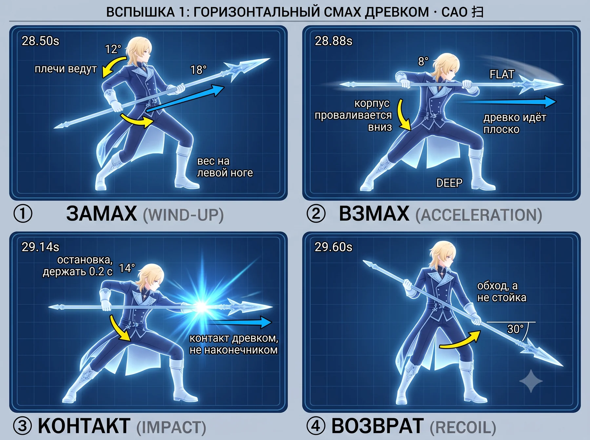
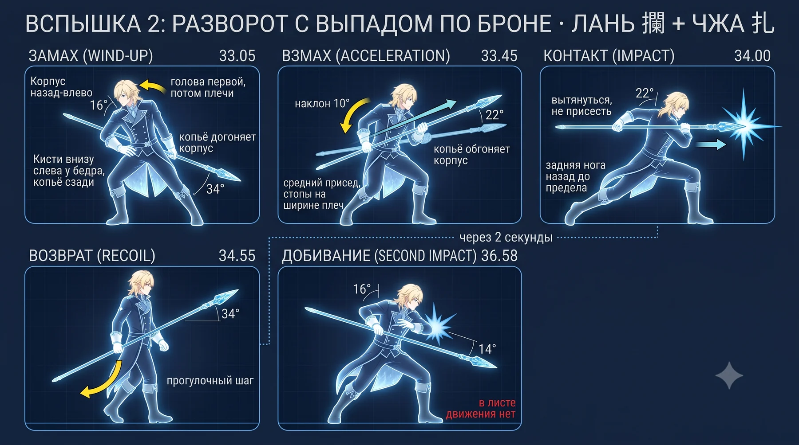
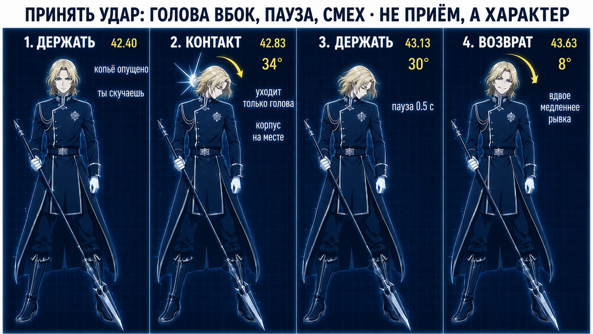
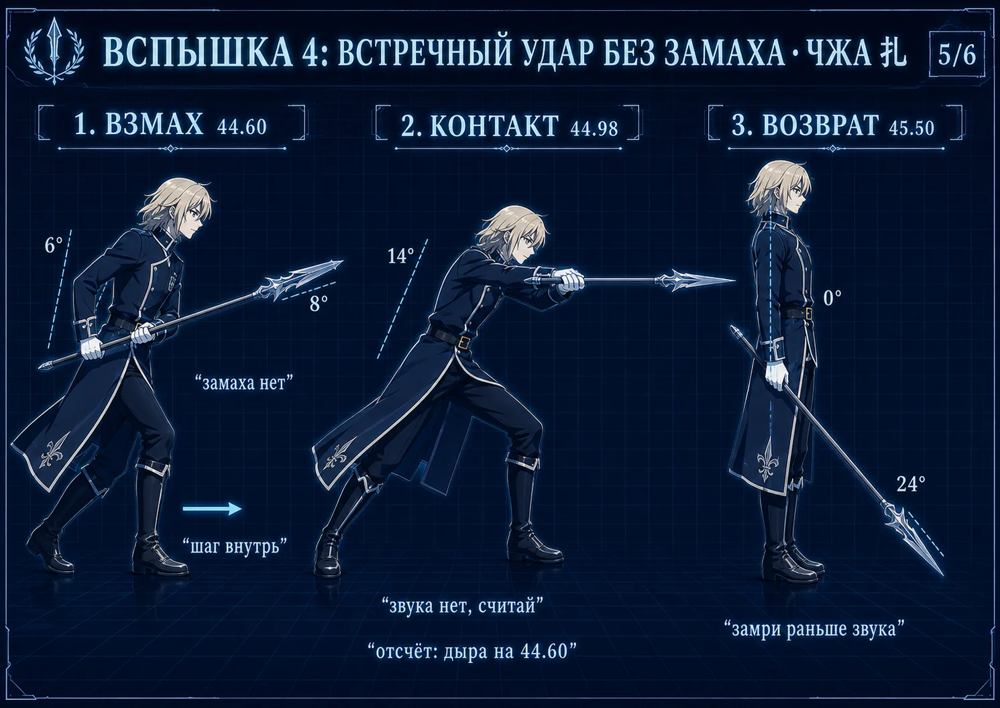
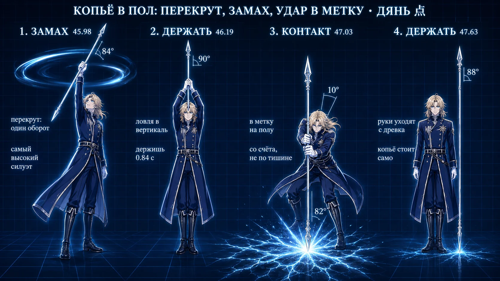

<meta charset="utf-8">
<meta name="viewport" content="width=device-width, initial-scale=1, viewport-fit=cover">
<meta name="color-scheme" content="dark">
<title>Книжка движений — Лоэн</title>
<style>
  :root {
    --bg: #08080b;
    --panel: #14141b;
    --panel-2: #1b1b24;
    --line: #262633;
    --text: #f2f2f5;
    --muted: #8b8b98;
    --accent: #5fd4ff;
    --accent-rgb: 95, 212, 255;
    --warn: #ff4d4f;
    --gold: #ffb020;
  }
  * { box-sizing: border-box; }
  html { -webkit-text-size-adjust: 100%; scroll-behavior: smooth; }
  body {
    margin: 0;
    background: var(--bg);
    color: var(--text);
    font-family: -apple-system, "Segoe UI", Roboto, "Helvetica Neue", Arial, sans-serif;
    font-size: 16px;
    line-height: 1.5;
  }
  /* Все сетки на minmax(0, …): колонка `auto` берёт ширину по min-content, и
     полоса из шести рисунков растянула бы карточку далеко за экран телефона.
     В тренажёре этот дефект уже находили браузером, здесь он предотвращён. */
  .wrap, .strip, .cards, .kv { min-width: 0; }
  a { color: var(--accent); }
  h1, h2, h3, h4 { line-height: 1.25; margin: 0; }
  code { overflow-wrap: anywhere; font-size: 0.92em; }

  /* ── полоса сайта: две страницы, одна навигация ──────────────────────── */
  .site {
    position: sticky; top: 0; z-index: 30;
    display: flex; gap: 6px; align-items: center;
    background: rgba(8, 8, 11, 0.97);
    border-bottom: 1px solid var(--line);
    padding: 7px 10px;
  }
  .site a {
    flex: 0 0 auto;
    padding: 6px 14px; border-radius: 9px;
    background: var(--panel); border: 1px solid var(--line);
    color: var(--muted); text-decoration: none;
    font-size: 0.88rem; font-weight: 600;
  }
  .site a[aria-current="page"] {
    color: var(--text); border-color: var(--accent);
    background: rgba(var(--accent-rgb), 0.16);
  }

  .toc {
    position: sticky; top: 45px; z-index: 25;
    display: flex; gap: 6px; overflow-x: auto;
    background: rgba(8, 8, 11, 0.95);
    border-bottom: 1px solid var(--line);
    padding: 7px 10px;
    -webkit-overflow-scrolling: touch;
  }
  .toc a {
    flex: 0 0 auto; padding: 5px 11px; border-radius: 8px;
    background: var(--panel); border: 1px solid var(--line);
    color: var(--muted); text-decoration: none; font-size: 0.8rem;
    white-space: nowrap;
  }

  .wrap { max-width: 1000px; margin: 0 auto; padding: 14px 12px 60px; }
  h1 { font-size: 1.5rem; margin-bottom: 6px; }
  .lede { color: var(--muted); font-size: 0.95rem; margin: 0 0 18px; }

  section { margin-top: 34px; scroll-margin-top: 92px; }
  section > h2 {
    font-size: 1.22rem; padding-bottom: 8px;
    border-bottom: 2px solid var(--accent);
  }
  h3 { font-size: 1.05rem; margin-top: 20px; }
  p { margin: 9px 0; }
  ul, ol { padding-left: 1.3em; margin: 8px 0; }
  li { margin: 4px 0; }

  .card {
    background: var(--panel); border: 1px solid var(--line);
    border-radius: 12px; padding: 14px; margin-top: 14px;
  }
  .warn {
    border-left: 3px solid var(--warn); padding-left: 11px;
    background: rgba(255, 77, 79, 0.07); border-radius: 0 8px 8px 0;
    padding-top: 7px; padding-bottom: 7px;
  }
  .note {
    border-left: 3px solid var(--gold); padding-left: 11px;
    color: var(--muted); font-size: 0.92rem;
  }

  /* Полоса кадров. Перенос вместо прокрутки: на телефоне горизонтальная
     прокрутка внутри страницы теряется, а доли надо видеть все. */
  /* Панель несёт подписи с выносками по краям, поэтому она заметно шире
     прежней схемы: ниже 230 px текст выносок становится нечитаемым, и лучше
     показать две панели в ряд, чем шесть нечитаемых. */
  .strip {
    display: grid; gap: 10px; margin: 14px 0;
    grid-template-columns: repeat(auto-fit, minmax(230px, 1fr));
  }
  .strip figure { margin: 0; }
  .strip svg { display: block; width: 100%; height: auto; }
  .plan { max-width: 320px; margin: 12px 0; }
  .plan svg { display: block; width: 100%; height: auto; }

  /* Лист удара целиком: главная картинка раздела, поэтому во всю ширину. */
  .sheet { margin: 14px 0; }
  .sheet img {
    display: block; width: 100%; height: auto;
    border: 1px solid var(--line); border-radius: 12px; background: var(--panel);
  }
  .sheet figcaption {
    color: var(--muted); font-size: 0.86rem; margin-top: 7px;
    border-left: 3px solid var(--gold); padding-left: 10px;
  }

  table { width: 100%; border-collapse: collapse; font-size: 0.9rem; margin: 10px 0;
          display: block; overflow-x: auto; }
  th, td { border-top: 1px solid var(--line); padding: 7px 8px; text-align: left;
           vertical-align: top; }
  th { color: var(--muted); font-weight: 600; }
  .num { font-variant-numeric: tabular-nums; }

  .vid { margin: 8px 0; padding-left: 11px; border-left: 2px solid var(--line); }
  .vid .meta { color: var(--muted); font-size: 0.85rem; }
  .slow { display: inline-block; background: rgba(var(--accent-rgb), 0.16);
          color: var(--accent); border-radius: 6px; padding: 0 7px;
          font-size: 0.82rem; font-weight: 600; }

  .kv { display: grid; grid-template-columns: minmax(0, 1fr) auto; gap: 4px 12px;
        font-size: 0.92rem; }
  .kv dt { color: var(--muted); }
  .kv dd { margin: 0; text-align: right; font-variant-numeric: tabular-nums; }

  .todo { color: var(--gold); font-weight: 600; }

  @media (max-width: 560px) {
    .wrap { padding: 12px 9px 50px; }
    /* На телефоне панель идёт во всю ширину: выноски по краям иначе не
       прочитать, а ради них панель и переделана. */
    .strip { grid-template-columns: minmax(0, 1fr); }
  }
</style>

<nav class="site">
  <a href="index.html">Тренажёр</a>
  <a href="book.html" aria-current="page">Книжка</a>
</nav>
<nav class="toc"><a href="#how">Как пользоваться</a><a href="#fight">Бой целиком</a><a href="#base">База: пять приёмов</a><a href="#skills">Что ты уже умеешь</a><a href="#strikes">Шесть действий по долям</a><a href="#pauses">Развороты и переходы</a><a href="#prop">Реквизит: что померить</a><a href="#order">Порядок репетиции</a></nav>
<main class="wrap">
<section id="how"><h2>Как пользоваться</h2><p>Тренажёр отвечает на вопрос <b>когда</b>: он играет номер и показывает, в какой момент что происходит. Эта книжка отвечает на вопрос <b>как</b>. Её читают без видео — на ковре, дома, с распечаткой.</p><ul><li><b>Рисунки посчитаны из чисел</b>, а не нарисованы от руки. Поменяется поза в сценарии — перерисуется и картинка, разойтись с текстом рядом она не может.</li><li><b>Жёлтая стрелка</b> — куда идёт кисть. <b>Голубая</b> — куда идёт наконечник. <b>Красная</b> — куда идёт таз, она появляется только когда таз реально едет.</li><li><b>Пунктирный силуэт</b> — следующая доля: где ты окажешься.</li><li><b>Время под кадром</b> — момент, когда звук СЛЫШНО, а не когда начинается файл. У быстрого взмаха разница треть секунды.</li><li><b>На плане площадки сверху:</b> голубая точка — ты, овалы — стопы (тёмный задняя, светлый передняя), красный крест — противник, жёлтая дуга — куда идёт наконечник. Низ картинки — зал.</li></ul><p class="note">Это черновая сборка: все рисунки — векторные схемы. Они точны по позе, но это не персонаж. Следующим шагом часть кадров заменяется рисованным Лоэном, и схемы останутся под ним.</p></section><section id="fight"><h2>Бой целиком</h2><table><tr><th>время</th><th>действие</th><th>приёмы</th><th>долей</th></tr><tr><td class="num">28.50 — 29.60</td><td>Вспышка 1: горизонтальный смах древком</td><td>Сао</td><td>4</td></tr><tr><td class="num">33.05 — 36.58</td><td>Вспышка 2: разворот с выпадом по броне</td><td>Лань и на, Чжа</td><td>5</td></tr><tr><td class="num">38.62 — 41.60</td><td>Вспышка 3: полный оборот, два попадания, низкий выпад</td><td>Сао, Пи</td><td>6</td></tr><tr><td class="num">42.40 — 43.63</td><td>Принять удар: голова вбок, пауза, смех</td><td>—</td><td>4</td></tr><tr><td class="num">44.60 — 45.50</td><td>Вспышка 4: встречный удар без замаха</td><td>Чжа</td><td>3</td></tr><tr><td class="num">45.98 — 47.63</td><td>Копьё в пол: замах вверх и удар в метку</td><td>Дянь</td><td>4</td></tr></table><p>Между действиями остаются паузы, и их суммарно больше, чем всех ударов вместе. Что в них делать — в разделе «Развороты и переходы».</p></section><section id="base"><h2>База: пять приёмов</h2><p>Весь бой собран из пяти вещей. Выучить пять приёмов один раз дешевле, чем шесть движений по отдельности: приём переносится, движение — нет.</p><h3>Сао — горизонтальный смах 扫</h3><p><b>Что это.</b> Древко идёт плоско, поперёк, на одном уровне. Бьёт не наконечник, а средняя часть — это удар площадью, а не точкой.</p><p><b>Тело.</b> Ведут плечи, руки догоняют. Корпус проваливается ВНИЗ, пока древко идёт ровно: разница высот и делает смах читаемым с зала. Задняя нога остаётся на месте якорем.</p><p><b>Хват.</b> Руки разведены примерно на ширину плеч, задняя ближе к торцу. Широкий хват даёт рычаг, узкий — скорость; для смаха нужен рычаг.</p><p class="warn"><b>Ошибка.</b> Тянуться руками вместо поворота корпуса. С зала видно сразу: удар выглядит пустым, потому что за ним нет массы.</p><p><b>Упражнение.</b> Двадцать раз без древка, только корпус: плечи ведут, руки висят. Потом с древком на четверти скорости, и важна только остановка в точке, не размах.</p><div class="vid"><a href="https://www.youtube.com/watch?v=tG2Tdto4Bms" target="_blank" rel="noopener">Learn 3 Essential Spear Techniques — Shaolin Kung Fu Wushu</a><div class="meta">Смотреть: блок про горизонтальные движения древком · <span class="slow">×0.5</span> — показывает, как корпус уходит вниз, пока древко идёт ровно</div></div><div class="vid"><a href="https://www.youtube.com/watch?v=NWKJaXPuKs0" target="_blank" rel="noopener">Jin Ben Qiang Fa — Basic Spear Techniques</a><div class="meta">Смотреть: базовые махи целиком · <span class="slow">×0.5</span> — чистая база без формы, видно работу ног под каждый мах</div></div><h3>Чжа — прямой укол 扎</h3><p><b>Что это.</b> Наконечник идёт в одну точку по прямой. Самый читаемый удар копья со сцены и единственный, который в игре описан словами прямо.</p><p><b>Тело.</b> Задняя нога уходит назад до предела, вес на передней, спина прямая. Не приседать — ВЫТЯГИВАТЬСЯ: длинная линия тела и есть весь эффект.</p><p><b>Хват.</b> Задняя рука толкает у торца, передняя только направляет и скользит. Толкает задняя — если толкать передней, укол становится коротким.</p><p class="warn"><b>Ошибка.</b> Приседание вместо вытягивания: тело становится короче, удар мельче. И выпад в глубину сцены — с зала это точка, а не линия.</p><p><b>Упражнение.</b> Выпад отдельно, без разворота, тридцать раз до устойчивости. Колено передней ноги не выходит за носок.</p><div class="vid"><a href="https://www.youtube.com/watch?v=tQJToDz0WOk" target="_blank" rel="noopener">Bajiquan's Liuhe Qiang: How to practice Lan Na Zha</a><div class="meta">Смотреть: часть чжа в связке · <span class="slow">×0.5</span> — укол показан внутри связки, а не отдельно — так он и работает</div></div><div class="vid"><a href="https://davidbao.com/2020/06/18/spear-%E6%9E%AA-qiang/" target="_blank" rel="noopener">Spear (枪 qiang) — Hua Ying Wushu &amp; Tai Chi</a><div class="meta">Смотреть: текст про механику укола · <span class="slow">×1</span> — разбор словами: что толкает, что направляет</div></div><h3>Лань и на — перевод и захват 攔 / 拿</h3><p><b>Что это.</b> Наконечник рисует маленький круг: влево-вверх (лань) и вправо-вниз (на). Это не удар, это то, чем удары соединяются. Именно эта связка убирает «махание палкой».</p><p><b>Тело.</b> Работают предплечья и кисти, корпус почти неподвижен. Круг маленький — с кулак, не с колесо. Плечи опущены.</p><p><b>Хват.</b> Передняя рука работает кольцом, древко в ней скользит. Задняя держит и ведёт.</p><p class="warn"><b>Ошибка.</b> Крутить всей рукой от плеча. Круг разрастается, темп падает, и связка перестаёт быть связкой.</p><p><b>Упражнение.</b> Лань-на-чжа по счёту, сто повторов, на четверти скорости. Это база копья целиком — из неё собирается всё остальное.</p><div class="vid"><a href="https://www.youtube.com/watch?v=tQJToDz0WOk" target="_blank" rel="noopener">Bajiquan's Liuhe Qiang: How to practice Lan Na Zha</a><div class="meta">Смотреть: всё видео, это ровно про эту связку · <span class="slow">×0.5</span> — главная ссылка книжки: одна выученная связка чинит все четыре вспышки сразу</div></div><div class="vid"><a href="https://www.plumpub.com/kaimen/2019/spear-learning/" target="_blank" rel="noopener">Изучение копья — разбор связки</a><div class="meta">Смотреть: текст целиком · <span class="slow">×1</span> — объясняет, зачем связка нужна, а не только как она делается</div></div><div class="vid"><a href="https://www.youtube.com/watch?v=TIs9HS7QdJo" target="_blank" rel="noopener">Nan Na Zha Qiang — Wushu Spear Instruction</a><div class="meta">Смотреть: показ по разделениям · <span class="slow">×0.75</span> — второй ракурс на ту же связку</div></div><h3>Пи — руб сверху вниз 劈</h3><p><b>Что это.</b> Древко падает сверху вниз по дуге, с весом. Самый тяжёлый по ощущению удар и самый заметный по силуэту: рука уходит высоко, значит фигура растягивается по вертикали.</p><p><b>Тело.</b> Вес идёт сверху вниз вместе с древком, колени пружинят в конце. Не тормозить мышцами — ронять и ловить.</p><p><b>Хват.</b> Обе руки высоко на замахе, к концу удара расходятся.</p><p class="warn"><b>Ошибка.</b> Гасить удар руками. Пи должен выглядеть как падение, а не как опускание.</p><p><b>Упражнение.</b> Замах и падение на счёт «раз-два», без цели, двадцать раз. Ловить в нижней точке коленями, а не плечами.</p><div class="vid"><a href="https://xingyiacademy.com/amazing-technique-pi-qiang-xing-yi-splitting-spear/" target="_blank" rel="noopener">Pi Qiang — Xing Yi Splitting Spear</a><div class="meta">Смотреть: разбор рубящего копья · <span class="slow">×1</span> — объясняет, чем пи отличается от простого опускания древка</div></div><div class="vid"><a href="https://www.youtube.com/watch?v=s7caDs1XvQg" target="_blank" rel="noopener">Beginner Spear Form 四段枪术</a><div class="meta">Смотреть: рубящие движения внутри формы · <span class="slow">×0.5</span> — видно, как пи ставится между другими приёмами</div></div><h3>Дянь — укол концом в точку 点</h3><p><b>Что это.</b> Короткий резкий тычок концом древка в конкретную точку. В номере им бьют не человека, а пол — и это единственный удар, у которого цель неподвижна.</p><p><b>Тело.</b> Вес сверху, короткая амплитуда, остановка жёсткая. Всё решает точность, а не сила.</p><p><b>Хват.</b> Ближе к торцу, чтобы конец шёл длиннее. После удара руки уходят с древка совсем.</p><p class="warn"><b>Ошибка.</b> Замахиваться широко. Дянь короткий: чем шире замах, тем больше промах по метке.</p><p><b>Упражнение.</b> Ставить метку на полу и бить в неё двадцать раз с закрытыми глазами после трёх с открытыми. На сцене смотреть вниз будет некогда.</p><div class="vid"><a href="https://www.taoistsanctuary.org/spear" target="_blank" rel="noopener">Spear — Taoist Sanctuary of San Diego</a><div class="meta">Смотреть: перечень методов, раздел про дянь · <span class="slow">×1</span> — короткое определение приёма, чтобы не путать с чжа</div></div></section><section id="skills"><h2>Что ты уже умеешь</h2><p>Разбор записей 5 августа, палка 1.5 м. Начинать надо с того, что есть.</p><h3>Вертушка в вертикальной плоскости с проходом над головой</h3><p><b>Как.</b> Древко идёт вертикаль — диагональ — горизонталь у шеи — диагональ. Кисть работает пивотом на уровне головы, вторая рука подхватывает. Срывов нет.</p><p><b>Куда идёт в номере.</b> Концовка: подъём воздуха перед ударом в пол, 45.69–46.85.</p><p><b>Что поправить.</b> Стойка. Сейчас 0.57 ширины плеча — ноги почти вместе. Развести до 1.1–1.5, иначе со сцены это жонглирование.</p><p class="note">Видно на записи: video_2026-08-05_16-16-38, 9.0–11.6 с</p><h3>Горизонтальный прокрут через плечи и за шею</h3><p><b>Как.</b> Древко горизонтально, проходит за затылком и возвращается вперёд. Медленно и контролируемо.</p><p><b>Куда идёт в номере.</b> Паузы 34.55–36.58 и 36.58–38.62.</p><p><b>Что поправить.</b> Скорость держать низкой намеренно: этот прокрут читается как стиль, а не как трюк, и в этом его ценность.</p><p class="note">Видно на записи: video_2026-08-05_16-15-42, 1.4–4.0 с</p><h3>Смена хвата на ходу</h3><p><b>Как.</b> Руки меняются местами без остановки движения.</p><p><b>Куда идёт в номере.</b> Внутрь разворота второй вспышки и полного оборота третьей.</p><p><b>Что поправить.</b> Ничего. Это готовый навык, его надо просто вставить в нужное место.</p><p class="note">Видно на записи: оба видео с перекрутами, постоянно</p><h3>Постановка древка вертикально и работа вокруг него</h3><p><b>Как.</b> Древко втыкается, исполнитель двигается относительно него.</p><p><b>Куда идёт в номере.</b> Копьё в пол, 47.03–47.63: древко обязано стоять само.</p><p><b>Что поправить.</b> Проверить на настоящем реквизите и настоящем полу. Пока копьё не стоит само, остальное репетировать бессмысленно.</p><p class="note">Видно на записи: video_2026-08-05_16-15-26, 8–20 с</p><h3>Низкая стойка с древком поперёк корпуса и широкий смах</h3><p><b>Как.</b> Единственное место на всех записях, где стойка настоящая боевая.</p><p><b>Куда идёт в номере.</b> Вспышка 1, горизонтальный смах.</p><p><b>Что поправить.</b> Ничего, это уже то, что нужно номеру. Повторять чаще.</p><p class="note">Видно на записи: video_2026-08-05_16-15-26, ближе к концу</p><h3>Общая проблема, и она измерена</h3><p><b>Перекруты — навык кистей при неподвижном корпусе.</b></p><p>Стойка в перекрутах 0.57–0.65 ширины плеча против 0.82–1.54 во всём остальном. Впадина между всплесками 0.00–0.03 против 0.11–0.40: движение тела падает в ноль между вращениями древка.</p><p class="warn">С десяти метров крутящееся древко у стоящего человека читается смазанным пятном, а не действием. Силуэт не меняется, а судят силуэт в костюме.</p><p>Навык настоящий, положен не туда. Место ему в паузах между ударами — и там же он закрывает пустоту, открытую с 5 августа.</p><h3>Бёдра</h3><p>Бёдра нигде не опережают кисти больше чем на два кадра — ни в перекрутах, ни в заходах по номеру.</p><p>Сила идёт из рук. Для перекрута это нормально, для удара это то, что делает удар пустым с зала.</p><p class="note">Разрешение замера — один кадр, поэтому «0.000 против 0.033» внутри шума. Честная формулировка именно «не опережают», а не «опережают на столько-то».</p></section><section id="strikes"><h2>Шесть действий по долям</h2><h3>Вспышка 1: горизонтальный смах древком</h3><p><b>Приёмы:</b> Сао — горизонтальный смах 扫</p><p>Чистое сао: один горизонтальный смах с остановкой. Контакт древком, а не наконечником.</p><figure class="sheet"><figcaption>Лист удара целиком. Времена и подписи впечатаны в картинку: если доля уедет в сценарии, сборка книжки об этом скажет и лист придётся перерисовать.</figcaption></figure><h3>Точная поза по долям</h3><p class="note">Ниже схемы, посчитанные из чисел. Они некрасивые, но точные: углы на листе выше нарисованы генератором, а здесь взяты из сценария. Расходятся — верь схеме.</p><div class="strip"><figure><svg viewBox="0 0 384 336" xmlns="http://www.w3.org/2000/svg" width="100%" preserveAspectRatio="xMidYMid meet" role="img"><defs><linearGradient id="g18059" x1="0" y1="0" x2="0" y2="1"><stop offset="0" stop-color="#1e2b3c"/><stop offset="1" stop-color="#151d29"/></linearGradient><clipPath id="cg18059"><rect x="4" y="4" width="376" height="328" rx="12"/></clipPath></defs><rect x="4" y="4" width="376" height="328" rx="12" fill="url(#g18059)" stroke="#3a5170"/><g clip-path="url(#cg18059)" stroke="#2b3d52" stroke-width="1" opacity="0.45"><line x1="28" y1="4" x2="28" y2="332"/><line x1="52" y1="4" x2="52" y2="332"/><line x1="76" y1="4" x2="76" y2="332"/><line x1="100" y1="4" x2="100" y2="332"/><line x1="124" y1="4" x2="124" y2="332"/><line x1="148" y1="4" x2="148" y2="332"/><line x1="172" y1="4" x2="172" y2="332"/><line x1="196" y1="4" x2="196" y2="332"/><line x1="220" y1="4" x2="220" y2="332"/><line x1="244" y1="4" x2="244" y2="332"/><line x1="268" y1="4" x2="268" y2="332"/><line x1="292" y1="4" x2="292" y2="332"/><line x1="316" y1="4" x2="316" y2="332"/><line x1="340" y1="4" x2="340" y2="332"/><line x1="364" y1="4" x2="364" y2="332"/><line x1="4" y1="28" x2="380" y2="28"/><line x1="4" y1="52" x2="380" y2="52"/><line x1="4" y1="76" x2="380" y2="76"/><line x1="4" y1="100" x2="380" y2="100"/><line x1="4" y1="124" x2="380" y2="124"/><line x1="4" y1="148" x2="380" y2="148"/><line x1="4" y1="172" x2="380" y2="172"/><line x1="4" y1="196" x2="380" y2="196"/><line x1="4" y1="220" x2="380" y2="220"/><line x1="4" y1="244" x2="380" y2="244"/><line x1="4" y1="268" x2="380" y2="268"/><line x1="4" y1="292" x2="380" y2="292"/><line x1="4" y1="316" x2="380" y2="316"/></g><g transform="translate(203.83,224.69) scale(1.2431)"><g opacity="0.40" fill="none" stroke="#5fd4ff" stroke-width="2.4" stroke-dasharray="7 6" stroke-linecap="round" stroke-linejoin="round"><polyline points="-16.7,-0.0 -33.2,-30.1 0.0,-53.3 33.2,-30.1 16.7,-0.0"/><polyline points="0.0,-53.3 5.5,-92.5"/><polyline points="-58.0,-91.5 88.1,-101.7"/><circle cx="8.4" cy="-108.5" r="10.3"/></g><path d="M -16.6 -97.1 Q -42.9 -75.9 -49.4 -31.1 L -7.7 -58.5 Z" fill="#2a4d75" opacity="0.85"/><polygon points="-15.2,1.7 -31.2,-31.4 -13.7,-63.8 -2.1,-56.4 -21.2,-30.8 -8.0,-1.7" fill="#7d9cbb" opacity="1.00"/><circle cx="-11.6" cy="-0.0" r="4.0" fill="#7d9cbb"/><circle cx="-7.9" cy="-60.1" r="6.9" fill="#7d9cbb"/><polygon points="-15.4,-92.9 -31.8,-77.5 -50.2,-59.8 -54.2,-63.6 -37.5,-82.9 -23.0,-100.1" fill="#7d9cbb" opacity="1.00"/><circle cx="-19.2" cy="-96.5" r="5.3" fill="#7d9cbb"/><circle cx="-52.2" cy="-61.7" r="2.8" fill="#7d9cbb"/><path d="M -9.6 -58.1 L -33.2 -28.4 Q -17.4 -17.9 0.0 -27.1 Q 0.0 -27.1 17.5 -17.9 Q 17.5 -17.9 33.3 -28.4 L 9.6 -62.1 Z" fill="#3f6fa2"/><polygon points="7.8,-1.8 20.7,-30.7 1.6,-56.1 14.3,-64.1 31.7,-31.4 15.4,1.8" fill="#dfeaf7" opacity="1.00"/><circle cx="11.6" cy="-0.0" r="4.2" fill="#dfeaf7"/><circle cx="7.9" cy="-60.1" r="7.5" fill="#dfeaf7"/><polygon points="3.2,-101.3 5.0,-86.3 3.7,-74.7 9.3,-62.1 -9.3,-58.1 -9.3,-71.9 -15.2,-82.0 -19.6,-96.4" fill="#3f6fa2"/><polygon points="-9.3,-58.1 -9.3,-71.9 -15.2,-82.0 -19.6,-96.4 3.2,-101.3" fill="#2a4d75" opacity="0.55"/><polygon points="-13.3,-109.6 -28.8,-100.1 -43.3,-74.9 -45.7,-76.1 -34.5,-104.4 -18.8,-117.4" fill="#a8d8f2" opacity="1.00"/><circle cx="-16.1" cy="-113.5" r="4.8" fill="#a8d8f2"/><circle cx="-44.5" cy="-75.5" r="1.3" fill="#a8d8f2"/><polygon points="-13.1,-111.4 -26.2,-94.3 -37.9,-77.3 -39.7,-78.4 -30.9,-97.3 -19.1,-115.6" fill="#6ba7cd" opacity="1.00"/><circle cx="-16.1" cy="-113.5" r="3.7" fill="#6ba7cd"/><circle cx="-38.8" cy="-77.9" r="1.0" fill="#6ba7cd"/><polygon points="-16.2,-110.3 -24.2,-112.4 -33.2,-93.6 -34.9,-94.3 -27.7,-115.6 -15.9,-116.7" fill="#a8d8f2" opacity="1.00"/><circle cx="-16.1" cy="-113.5" r="3.2" fill="#a8d8f2"/><circle cx="-34.0" cy="-94.0" r="0.9" fill="#a8d8f2"/><polygon points="-16.1,-127.2 -2.7,-120.3 -25.3,-111.4 -14.0,-121.7" fill="#a8d8f2"/><circle cx="-12.6" cy="-114.5" r="10.3" fill="#dfeaf7"/><polygon points="6.7,-97.1 -10.5,-82.5 -28.9,-66.6 -32.9,-70.7 -16.3,-88.6 -1.2,-105.2" fill="#dfeaf7" opacity="1.00"/><circle cx="2.7" cy="-101.2" r="5.7" fill="#dfeaf7"/><circle cx="-30.9" cy="-68.6" r="2.9" fill="#dfeaf7"/><polygon points="-73.4,-57.2 42.3,-94.2 43.3,-91.0 -72.0,-52.9" fill="#c3d2e2" opacity="1.00"/><circle cx="-72.7" cy="-55.1" r="2.2" fill="#c3d2e2"/><circle cx="42.8" cy="-92.6" r="1.7" fill="#c3d2e2"/><line x1="-72.7" y1="-55.1" x2="42.8" y2="-92.6" stroke="#8fa3b8" stroke-width="1.6" opacity="0.7"/><polygon points="-73.8,-58.3 -69.2,-59.2 -67.4,-53.7 -71.6,-51.8" fill="#8fa3b8" opacity="1.00"/><circle cx="-72.7" cy="-55.1" r="3.4" fill="#8fa3b8"/><circle cx="-68.3" cy="-56.5" r="2.9" fill="#8fa3b8"/><polygon points="66.7,-100.3 55.1,-101.8 42.2,-94.6 43.5,-90.6 58.2,-92.3" fill="#a9ecff"/><line x1="42.8" y1="-92.6" x2="66.7" y2="-100.3" stroke="#ffffff" stroke-width="1.4" opacity="0.85"/><circle cx="-52.2" cy="-61.7" r="3.7" fill="#dfeaf7"/><circle cx="-30.9" cy="-68.6" r="3.7" fill="#dfeaf7"/><rect x="-18.2" y="-3.0" width="13.2" height="6" rx="3" fill="#93b6d6"/><rect x="5.0" y="-3.0" width="13.2" height="6" rx="3" fill="#93b6d6"/></g><path d="M 165.4 139.4 Q 185.6 127.7 191.1 115.6" fill="none" stroke="#111a26" stroke-width="7.4" stroke-linecap="round" opacity="0.75"/><polygon points="195.3,106.5 194.9,120.5 185.0,116.0" fill="none" stroke="#111a26" stroke-width="3" stroke-linejoin="round" opacity="0.75"/><path d="M 165.4 139.4 Q 185.6 127.7 191.1 115.6" fill="none" stroke="#69dcff" stroke-width="4.4" stroke-linecap="round"/><polygon points="195.3,106.5 194.9,120.5 185.0,116.0" fill="#69dcff"/><path d="M 286.7 100.0 Q 300.5 105.5 304.7 103.2" fill="none" stroke="#111a26" stroke-width="6.8" stroke-linecap="round" opacity="0.75"/><polygon points="313.4,98.3 304.8,109.3 299.5,99.8" fill="none" stroke="#111a26" stroke-width="3" stroke-linejoin="round" opacity="0.75"/><path d="M 286.7 100.0 Q 300.5 105.5 304.7 103.2" fill="none" stroke="#69dcff" stroke-width="3.8" stroke-linecap="round"/><polygon points="313.4,98.3 304.8,109.3 299.5,99.8" fill="#69dcff"/><path d="M 193.6 101.8 Q 199.5 111.6 200.8 111.3" fill="none" stroke="#111a26" stroke-width="7.0" stroke-linecap="round" opacity="0.75"/><polygon points="210.7,109.7 198.9,117.2 197.1,106.4" fill="none" stroke="#111a26" stroke-width="3" stroke-linejoin="round" opacity="0.75"/><path d="M 193.6 101.8 Q 199.5 111.6 200.8 111.3" fill="none" stroke="#ffc83d" stroke-width="4.0" stroke-linecap="round"/><polygon points="210.7,109.7 198.9,117.2 197.1,106.4" fill="#ffc83d"/><line x1="286.7" y1="100.0" x2="313.5" y2="88.5" stroke="#69dcff" stroke-width="1.4" opacity="0.8"/><circle cx="286.7" cy="100.0" r="2.8" fill="#69dcff"/><text x="309.5" y="92.5" fill="#e8f4ff" font-size="12.5" text-anchor="start" font-family="Segoe UI, Roboto, sans-serif" paint-order="stroke" stroke="#111a26" stroke-width="3.4" stroke-linejoin="round">наконечник</text><line x1="165.4" y1="139.4" x2="132.2" y2="140.2" stroke="#69dcff" stroke-width="1.4" opacity="0.8"/><circle cx="165.4" cy="139.4" r="2.8" fill="#69dcff"/><text x="136.2" y="144.2" fill="#e8f4ff" font-size="12.5" text-anchor="end" font-family="Segoe UI, Roboto, sans-serif" paint-order="stroke" stroke="#111a26" stroke-width="3.4" stroke-linejoin="round">кисть</text><line x1="218.3" y1="224.7" x2="252.3" y2="231.4" stroke="#ffc83d" stroke-width="1.4" opacity="0.8"/><circle cx="218.3" cy="224.7" r="2.8" fill="#ffc83d"/><text x="248.3" y="235.4" fill="#e8f4ff" font-size="12.5" text-anchor="start" font-family="Segoe UI, Roboto, sans-serif" paint-order="stroke" stroke="#111a26" stroke-width="3.4" stroke-linejoin="round">вес на левой ноге</text><line x1="203.8" y1="150.0" x2="217.9" y2="166.7" stroke="#ffc83d" stroke-width="1.4" opacity="0.8"/><circle cx="203.8" cy="150.0" r="2.8" fill="#ffc83d"/><text x="213.9" y="170.7" fill="#e8f4ff" font-size="12.5" text-anchor="start" font-family="Segoe UI, Roboto, sans-serif" paint-order="stroke" stroke="#111a26" stroke-width="3.4" stroke-linejoin="round">таз</text><line x1="193.6" y1="101.8" x2="159.6" y2="86.9" stroke="#ffc83d" stroke-width="1.4" opacity="0.8"/><circle cx="193.6" cy="101.8" r="2.8" fill="#ffc83d"/><text x="163.6" y="90.9" fill="#e8f4ff" font-size="12.5" text-anchor="end" font-family="Segoe UI, Roboto, sans-serif" paint-order="stroke" stroke="#111a26" stroke-width="3.4" stroke-linejoin="round">плечи ведут</text><line x1="16" y1="292" x2="368" y2="292" stroke="#3a5170" opacity="0.7"/><circle cx="30" cy="312" r="12" fill="#69dcff" opacity="0.28"/><text x="30" y="317" fill="#69dcff" font-size="13" font-weight="700" text-anchor="middle" font-family="Segoe UI, Roboto, sans-serif">1</text><text x="50" y="311" fill="#e8f4ff" font-size="13.5" font-weight="700" font-family="Segoe UI, Roboto, sans-serif">ЗАМАХ</text><text x="50" y="327" fill="#9db6cf" font-size="11" font-family="Segoe UI, Roboto, sans-serif">WIND-UP · 28.50 С</text></svg></figure><figure><svg viewBox="0 0 384 336" xmlns="http://www.w3.org/2000/svg" width="100%" preserveAspectRatio="xMidYMid meet" role="img"><defs><linearGradient id="g81800" x1="0" y1="0" x2="0" y2="1"><stop offset="0" stop-color="#1e2b3c"/><stop offset="1" stop-color="#151d29"/></linearGradient><clipPath id="cg81800"><rect x="4" y="4" width="376" height="328" rx="12"/></clipPath></defs><rect x="4" y="4" width="376" height="328" rx="12" fill="url(#g81800)" stroke="#3a5170"/><g clip-path="url(#cg81800)" stroke="#2b3d52" stroke-width="1" opacity="0.45"><line x1="28" y1="4" x2="28" y2="332"/><line x1="52" y1="4" x2="52" y2="332"/><line x1="76" y1="4" x2="76" y2="332"/><line x1="100" y1="4" x2="100" y2="332"/><line x1="124" y1="4" x2="124" y2="332"/><line x1="148" y1="4" x2="148" y2="332"/><line x1="172" y1="4" x2="172" y2="332"/><line x1="196" y1="4" x2="196" y2="332"/><line x1="220" y1="4" x2="220" y2="332"/><line x1="244" y1="4" x2="244" y2="332"/><line x1="268" y1="4" x2="268" y2="332"/><line x1="292" y1="4" x2="292" y2="332"/><line x1="316" y1="4" x2="316" y2="332"/><line x1="340" y1="4" x2="340" y2="332"/><line x1="364" y1="4" x2="364" y2="332"/><line x1="4" y1="28" x2="380" y2="28"/><line x1="4" y1="52" x2="380" y2="52"/><line x1="4" y1="76" x2="380" y2="76"/><line x1="4" y1="100" x2="380" y2="100"/><line x1="4" y1="124" x2="380" y2="124"/><line x1="4" y1="148" x2="380" y2="148"/><line x1="4" y1="172" x2="380" y2="172"/><line x1="4" y1="196" x2="380" y2="196"/><line x1="4" y1="220" x2="380" y2="220"/><line x1="4" y1="244" x2="380" y2="244"/><line x1="4" y1="268" x2="380" y2="268"/><line x1="4" y1="292" x2="380" y2="292"/><line x1="4" y1="316" x2="380" y2="316"/></g><g transform="translate(203.83,224.69) scale(1.2431)"><g opacity="0.40" fill="none" stroke="#5fd4ff" stroke-width="2.4" stroke-dasharray="7 6" stroke-linecap="round" stroke-linejoin="round"><polyline points="-17.4,-0.0 -32.9,-30.6 0.0,-54.1 32.9,-30.6 17.4,-0.0"/><polyline points="0.0,-54.1 9.6,-92.5"/><polyline points="-53.6,-99.3 92.2,-84.0"/><circle cx="15.1" cy="-107.8" r="10.3"/></g><path d="M -2.9 -93.7 Q -25.1 -72.6 -30.6 -24.3 L -7.8 -54.4 Z" fill="#2a4d75" opacity="0.85"/><polygon points="-20.2,1.9 -38.1,-30.9 -12.6,-58.4 -3.3,-48.3 -28.2,-29.3 -13.2,-1.9" fill="#7d9cbb" opacity="1.00"/><circle cx="-16.7" cy="-0.0" r="4.0" fill="#7d9cbb"/><circle cx="-7.9" cy="-53.3" r="6.9" fill="#7d9cbb"/><polygon points="-10.0,-91.2 -17.8,-108.9 -26.9,-92.1 -31.6,-94.9 -18.0,-116.8 -1.2,-97.0" fill="#7d9cbb" opacity="1.00"/><circle cx="-5.6" cy="-94.1" r="5.3" fill="#7d9cbb"/><circle cx="-29.2" cy="-93.5" r="2.8" fill="#7d9cbb"/><path d="M -9.7 -54.7 L -37.6 -22.4 Q -21.8 -11.9 -2.6 -21.1 Q -2.6 -21.1 13.1 -11.9 Q 13.1 -11.9 28.9 -22.4 L 9.7 -52.0 Z" fill="#3f6fa2"/><polygon points="13.0,-2.0 27.7,-29.2 2.8,-47.8 13.0,-58.9 38.7,-31.0 20.4,2.0" fill="#dfeaf7" opacity="1.00"/><circle cx="16.7" cy="-0.0" r="4.2" fill="#dfeaf7"/><circle cx="7.9" cy="-53.3" r="7.5" fill="#dfeaf7"/><polygon points="17.1,-90.9 13.6,-76.2 8.5,-65.8 9.4,-52.0 -9.4,-54.6 -4.7,-67.6 -6.8,-79.1 -6.0,-94.2" fill="#3f6fa2"/><polygon points="-9.4,-54.6 -4.7,-67.6 -6.8,-79.1 -6.0,-94.2 17.1,-90.9" fill="#2a4d75" opacity="0.55"/><polygon points="8.0,-105.5 -5.1,-96.0 -17.6,-70.6 -20.1,-71.6 -11.2,-99.8 1.8,-112.8" fill="#a8d8f2" opacity="1.00"/><circle cx="4.9" cy="-109.2" r="4.8" fill="#a8d8f2"/><circle cx="-18.9" cy="-71.1" r="1.3" fill="#a8d8f2"/><polygon points="8.1,-107.3 -3.1,-90.2 -13.2,-73.1 -15.0,-74.0 -8.0,-92.8 1.7,-111.0" fill="#6ba7cd" opacity="1.00"/><circle cx="4.9" cy="-109.2" r="3.7" fill="#6ba7cd"/><circle cx="-14.1" cy="-73.5" r="1.0" fill="#6ba7cd"/><polygon points="4.7,-106.0 -1.5,-108.2 -9.3,-89.3 -11.0,-89.9 -5.3,-111.1 5.1,-112.3" fill="#a8d8f2" opacity="1.00"/><circle cx="4.9" cy="-109.2" r="3.2" fill="#a8d8f2"/><circle cx="-10.1" cy="-89.6" r="0.9" fill="#a8d8f2"/><polygon points="10.8,-121.5 18.6,-109.7 -4.4,-107.1 7.0,-117.4" fill="#a8d8f2"/><circle cx="8.4" cy="-108.5" r="10.3" fill="#dfeaf7"/><polygon points="20.8,-87.2 0.9,-70.1 -9.6,-93.9 -4.2,-96.1 2.4,-78.4 12.4,-94.8" fill="#dfeaf7" opacity="1.00"/><circle cx="16.6" cy="-91.0" r="5.7" fill="#dfeaf7"/><circle cx="-6.9" cy="-95.0" r="2.9" fill="#dfeaf7"/><polygon points="-58.2,-93.7 63.0,-101.6 63.2,-98.2 -57.9,-89.2" fill="#c3d2e2" opacity="1.00"/><circle cx="-58.0" cy="-91.5" r="2.2" fill="#c3d2e2"/><circle cx="63.1" cy="-99.9" r="1.7" fill="#c3d2e2"/><line x1="-58.0" y1="-91.5" x2="63.1" y2="-99.9" stroke="#8fa3b8" stroke-width="1.6" opacity="0.7"/><polygon points="-58.3,-94.9 -53.6,-94.7 -53.2,-88.9 -57.8,-88.0" fill="#8fa3b8" opacity="1.00"/><circle cx="-58.0" cy="-91.5" r="3.4" fill="#8fa3b8"/><circle cx="-53.4" cy="-91.8" r="2.9" fill="#8fa3b8"/><polygon points="88.1,-101.7 77.3,-106.0 63.0,-102.0 63.3,-97.8 78.0,-95.9" fill="#a9ecff"/><line x1="63.1" y1="-99.9" x2="88.1" y2="-101.7" stroke="#ffffff" stroke-width="1.4" opacity="0.85"/><circle cx="-29.2" cy="-93.5" r="3.7" fill="#dfeaf7"/><circle cx="-6.9" cy="-95.0" r="3.7" fill="#dfeaf7"/><rect x="-23.3" y="-3.0" width="13.2" height="6" rx="3" fill="#93b6d6"/><rect x="10.1" y="-3.0" width="13.2" height="6" rx="3" fill="#93b6d6"/></g><path d="M 195.3 106.5 Q 206.5 111.9 208.9 111.5" fill="none" stroke="#111a26" stroke-width="7.4" stroke-linecap="round" opacity="0.75"/><polygon points="218.8,109.8 207.0,117.4 205.1,106.6" fill="none" stroke="#111a26" stroke-width="3" stroke-linejoin="round" opacity="0.75"/><path d="M 195.3 106.5 Q 206.5 111.9 208.9 111.5" fill="none" stroke="#69dcff" stroke-width="4.4" stroke-linecap="round"/><polygon points="218.8,109.8 207.0,117.4 205.1,106.6" fill="#69dcff"/><path d="M 313.4 98.3 Q 310.6 110.5 312.2 112.5" fill="none" stroke="#111a26" stroke-width="6.8" stroke-linecap="round" opacity="0.75"/><polygon points="318.4,120.3 306.1,113.6 314.7,106.8" fill="none" stroke="#111a26" stroke-width="3" stroke-linejoin="round" opacity="0.75"/><path d="M 313.4 98.3 Q 310.6 110.5 312.2 112.5" fill="none" stroke="#69dcff" stroke-width="3.8" stroke-linecap="round"/><polygon points="318.4,120.3 306.1,113.6 314.7,106.8" fill="#69dcff"/><line x1="313.4" y1="98.3" x2="263.5" y2="86.2" stroke="#ffc83d" stroke-width="1.4" opacity="0.8"/><circle cx="313.4" cy="98.3" r="2.8" fill="#ffc83d"/><text x="259.5" y="90.2" fill="#e8f4ff" font-size="12.5" text-anchor="start" font-family="Segoe UI, Roboto, sans-serif" paint-order="stroke" stroke="#111a26" stroke-width="3.4" stroke-linejoin="round">древко идёт плоско</text><line x1="313.4" y1="98.3" x2="313.5" y2="101.7" stroke="#69dcff" stroke-width="1.4" opacity="0.8"/><circle cx="313.4" cy="98.3" r="2.8" fill="#69dcff"/><text x="309.5" y="105.7" fill="#e8f4ff" font-size="12.5" text-anchor="start" font-family="Segoe UI, Roboto, sans-serif" paint-order="stroke" stroke="#111a26" stroke-width="3.4" stroke-linejoin="round">наконечник</text><line x1="195.3" y1="106.5" x2="180.6" y2="82.0" stroke="#69dcff" stroke-width="1.4" opacity="0.8"/><circle cx="195.3" cy="106.5" r="2.8" fill="#69dcff"/><text x="184.6" y="86.0" fill="#e8f4ff" font-size="12.5" text-anchor="end" font-family="Segoe UI, Roboto, sans-serif" paint-order="stroke" stroke="#111a26" stroke-width="3.4" stroke-linejoin="round">кисть</text><line x1="203.8" y1="158.4" x2="169.8" y2="165.1" stroke="#ffc83d" stroke-width="1.4" opacity="0.8"/><circle cx="203.8" cy="158.4" r="2.8" fill="#ffc83d"/><text x="173.8" y="169.1" fill="#e8f4ff" font-size="12.5" text-anchor="end" font-family="Segoe UI, Roboto, sans-serif" paint-order="stroke" stroke="#111a26" stroke-width="3.4" stroke-linejoin="round">корпус проваливается вниз</text><line x1="16" y1="292" x2="368" y2="292" stroke="#3a5170" opacity="0.7"/><circle cx="30" cy="312" r="12" fill="#69dcff" opacity="0.28"/><text x="30" y="317" fill="#69dcff" font-size="13" font-weight="700" text-anchor="middle" font-family="Segoe UI, Roboto, sans-serif">2</text><text x="50" y="311" fill="#e8f4ff" font-size="13.5" font-weight="700" font-family="Segoe UI, Roboto, sans-serif">ВЗМАХ</text><text x="50" y="327" fill="#9db6cf" font-size="11" font-family="Segoe UI, Roboto, sans-serif">ACCELERATION · 28.88 С</text></svg></figure><figure><svg viewBox="0 0 384 336" xmlns="http://www.w3.org/2000/svg" width="100%" preserveAspectRatio="xMidYMid meet" role="img"><defs><linearGradient id="g5054" x1="0" y1="0" x2="0" y2="1"><stop offset="0" stop-color="#1e2b3c"/><stop offset="1" stop-color="#151d29"/></linearGradient><clipPath id="cg5054"><rect x="4" y="4" width="376" height="328" rx="12"/></clipPath></defs><rect x="4" y="4" width="376" height="328" rx="12" fill="url(#g5054)" stroke="#3a5170"/><g clip-path="url(#cg5054)" stroke="#2b3d52" stroke-width="1" opacity="0.45"><line x1="28" y1="4" x2="28" y2="332"/><line x1="52" y1="4" x2="52" y2="332"/><line x1="76" y1="4" x2="76" y2="332"/><line x1="100" y1="4" x2="100" y2="332"/><line x1="124" y1="4" x2="124" y2="332"/><line x1="148" y1="4" x2="148" y2="332"/><line x1="172" y1="4" x2="172" y2="332"/><line x1="196" y1="4" x2="196" y2="332"/><line x1="220" y1="4" x2="220" y2="332"/><line x1="244" y1="4" x2="244" y2="332"/><line x1="268" y1="4" x2="268" y2="332"/><line x1="292" y1="4" x2="292" y2="332"/><line x1="316" y1="4" x2="316" y2="332"/><line x1="340" y1="4" x2="340" y2="332"/><line x1="364" y1="4" x2="364" y2="332"/><line x1="4" y1="28" x2="380" y2="28"/><line x1="4" y1="52" x2="380" y2="52"/><line x1="4" y1="76" x2="380" y2="76"/><line x1="4" y1="100" x2="380" y2="100"/><line x1="4" y1="124" x2="380" y2="124"/><line x1="4" y1="148" x2="380" y2="148"/><line x1="4" y1="172" x2="380" y2="172"/><line x1="4" y1="196" x2="380" y2="196"/><line x1="4" y1="220" x2="380" y2="220"/><line x1="4" y1="244" x2="380" y2="244"/><line x1="4" y1="268" x2="380" y2="268"/><line x1="4" y1="292" x2="380" y2="292"/><line x1="4" y1="316" x2="380" y2="316"/></g><g transform="translate(203.83,224.69) scale(1.2431)"><g opacity="0.40" fill="none" stroke="#5fd4ff" stroke-width="2.4" stroke-dasharray="7 6" stroke-linecap="round" stroke-linejoin="round"><polyline points="-13.1,-0.0 -26.1,-31.7 0.0,-60.8 26.1,-31.7 13.1,-0.0"/><polyline points="0.0,-60.8 2.8,-100.3"/><polyline points="-43.9,-49.9 83.0,-123.2"/><circle cx="4.2" cy="-116.5" r="10.3"/></g><path d="M 17.9 -90.5 Q 37.5 -69.4 42.4 -25.1 L 7.7 -52.2 Z" fill="#2a4d75" opacity="0.85"/><polygon points="-21.0,1.8 -37.9,-31.5 -12.6,-59.1 -3.2,-49.1 -28.0,-29.7 -13.9,-1.8" fill="#7d9cbb" opacity="1.00"/><circle cx="-17.4" cy="-0.0" r="4.0" fill="#7d9cbb"/><circle cx="-7.9" cy="-54.1" r="6.9" fill="#7d9cbb"/><polygon points="-6.4,-93.9 -6.8,-113.0 -7.6,-94.3 -13.0,-95.2 -7.3,-120.9 3.8,-96.6" fill="#7d9cbb" opacity="1.00"/><circle cx="-1.3" cy="-95.2" r="5.3" fill="#7d9cbb"/><circle cx="-10.3" cy="-94.7" r="2.8" fill="#7d9cbb"/><path d="M -9.5 -56.5 L -36.4 -22.4 Q -20.5 -11.9 -1.9 -21.1 Q -1.9 -21.1 14.3 -11.9 Q 14.3 -11.9 30.1 -22.4 L 9.5 -51.7 Z" fill="#3f6fa2"/><polygon points="13.7,-1.9 27.5,-29.7 2.8,-48.6 13.1,-59.6 38.4,-31.6 21.2,1.9" fill="#dfeaf7" opacity="1.00"/><circle cx="17.4" cy="-0.0" r="4.2" fill="#dfeaf7"/><circle cx="7.9" cy="-54.1" r="7.5" fill="#dfeaf7"/><polygon points="20.9,-89.7 16.0,-75.4 9.7,-65.6 9.2,-51.8 -9.2,-56.4 -3.2,-68.8 -4.1,-80.4 -1.7,-95.4" fill="#3f6fa2"/><polygon points="-9.2,-56.4 -3.2,-68.8 -4.1,-80.4 -1.7,-95.4 20.9,-89.7" fill="#2a4d75" opacity="0.55"/><polygon points="15.1,-112.4 26.4,-99.5 33.9,-71.4 31.4,-70.6 20.1,-96.1 8.4,-105.6" fill="#a8d8f2" opacity="1.00"/><circle cx="11.7" cy="-109.0" r="4.8" fill="#a8d8f2"/><circle cx="32.7" cy="-71.0" r="1.3" fill="#a8d8f2"/><polygon points="15.0,-110.7 23.5,-92.5 29.4,-73.8 27.5,-73.0 18.4,-90.2 8.5,-107.3" fill="#6ba7cd" opacity="1.00"/><circle cx="11.7" cy="-109.0" r="3.7" fill="#6ba7cd"/><circle cx="28.5" cy="-73.4" r="1.0" fill="#6ba7cd"/><polygon points="11.5,-112.2 21.0,-110.8 25.8,-89.7 24.1,-89.2 17.1,-108.2 11.9,-105.9" fill="#a8d8f2" opacity="1.00"/><circle cx="11.7" cy="-109.0" r="3.2" fill="#a8d8f2"/><circle cx="25.0" cy="-89.5" r="0.9" fill="#a8d8f2"/><polygon points="19.6,-120.2 24.8,-107.4 21.0,-107.0 9.7,-117.3" fill="#a8d8f2"/><circle cx="15.1" cy="-107.8" r="10.3" fill="#dfeaf7"/><polygon points="25.5,-87.1 8.6,-66.0 9.1,-92.7 14.9,-92.1 11.0,-74.1 15.5,-92.5" fill="#dfeaf7" opacity="1.00"/><circle cx="20.5" cy="-89.8" r="5.7" fill="#dfeaf7"/><circle cx="12.0" cy="-92.4" r="2.9" fill="#dfeaf7"/><polygon points="-53.3,-101.5 67.4,-88.3 67.0,-84.9 -53.8,-97.1" fill="#c3d2e2" opacity="1.00"/><circle cx="-53.6" cy="-99.3" r="2.2" fill="#c3d2e2"/><circle cx="67.2" cy="-86.6" r="1.7" fill="#c3d2e2"/><line x1="-53.6" y1="-99.3" x2="67.2" y2="-86.6" stroke="#8fa3b8" stroke-width="1.6" opacity="0.7"/><polygon points="-53.2,-102.7 -48.7,-101.7 -49.3,-95.9 -53.9,-95.9" fill="#8fa3b8" opacity="1.00"/><circle cx="-53.6" cy="-99.3" r="3.4" fill="#8fa3b8"/><circle cx="-49.0" cy="-98.8" r="2.9" fill="#8fa3b8"/><polygon points="92.2,-84.0 82.2,-90.1 67.4,-88.7 67.0,-84.5 81.2,-80.1" fill="#a9ecff"/><line x1="67.2" y1="-86.6" x2="92.2" y2="-84.0" stroke="#ffffff" stroke-width="1.4" opacity="0.85"/><circle cx="-10.3" cy="-94.7" r="3.7" fill="#dfeaf7"/><circle cx="12.0" cy="-92.4" r="3.7" fill="#dfeaf7"/><rect x="-24.0" y="-3.0" width="13.2" height="6" rx="3" fill="#93b6d6"/><rect x="10.8" y="-3.0" width="13.2" height="6" rx="3" fill="#93b6d6"/><circle cx="92.2" cy="-84.0" r="30" fill="#bff2ff" opacity="0.16"/><circle cx="92.2" cy="-84.0" r="17" fill="#bff2ff" opacity="0.30"/><circle cx="92.2" cy="-84.0" r="7" fill="#ffffff" opacity="0.75"/></g><path d="M 218.8 109.8 Q 212.9 117.0 213.0 116.3" fill="none" stroke="#111a26" stroke-width="7.4" stroke-linecap="round" opacity="0.75"/><polygon points="212.4,126.2 207.7,113.0 218.6,113.7" fill="none" stroke="#111a26" stroke-width="3" stroke-linejoin="round" opacity="0.75"/><path d="M 218.8 109.8 Q 212.9 117.0 213.0 116.3" fill="none" stroke="#69dcff" stroke-width="4.4" stroke-linecap="round"/><polygon points="212.4,126.2 207.7,113.0 218.6,113.7" fill="#69dcff"/><path d="M 318.4 120.3 Q 324.4 93.2 313.3 79.4" fill="none" stroke="#111a26" stroke-width="6.8" stroke-linecap="round" opacity="0.75"/><polygon points="307.0,71.6 319.3,78.2 310.8,85.1" fill="none" stroke="#111a26" stroke-width="3" stroke-linejoin="round" opacity="0.75"/><path d="M 318.4 120.3 Q 324.4 93.2 313.3 79.4" fill="none" stroke="#69dcff" stroke-width="3.8" stroke-linecap="round"/><polygon points="307.0,71.6 319.3,78.2 310.8,85.1" fill="#69dcff"/><path d="M 215.7 109.7 Q 214.8 101.9 216.9 102.5" fill="none" stroke="#111a26" stroke-width="7.0" stroke-linecap="round" opacity="0.75"/><polygon points="207.3,100.0 221.1,98.0 218.4,108.5" fill="none" stroke="#111a26" stroke-width="3" stroke-linejoin="round" opacity="0.75"/><path d="M 215.7 109.7 Q 214.8 101.9 216.9 102.5" fill="none" stroke="#ffc83d" stroke-width="4.0" stroke-linecap="round"/><polygon points="207.3,100.0 221.1,98.0 218.4,108.5" fill="#ffc83d"/><line x1="318.4" y1="120.3" x2="282.2" y2="112.4" stroke="#ffc83d" stroke-width="1.4" opacity="0.8"/><circle cx="318.4" cy="120.3" r="2.8" fill="#ffc83d"/><text x="278.2" y="116.4" fill="#e8f4ff" font-size="12.5" text-anchor="start" font-family="Segoe UI, Roboto, sans-serif" paint-order="stroke" stroke="#111a26" stroke-width="3.4" stroke-linejoin="round">контакт древком</text><line x1="318.4" y1="120.3" x2="313.5" y2="127.9" stroke="#69dcff" stroke-width="1.4" opacity="0.8"/><circle cx="318.4" cy="120.3" r="2.8" fill="#69dcff"/><text x="309.5" y="131.9" fill="#e8f4ff" font-size="12.5" text-anchor="start" font-family="Segoe UI, Roboto, sans-serif" paint-order="stroke" stroke="#111a26" stroke-width="3.4" stroke-linejoin="round">наконечник</text><line x1="218.8" y1="109.8" x2="226.0" y2="95.2" stroke="#ffc83d" stroke-width="1.4" opacity="0.8"/><circle cx="218.8" cy="109.8" r="2.8" fill="#ffc83d"/><text x="222.0" y="99.2" fill="#e8f4ff" font-size="12.5" text-anchor="start" font-family="Segoe UI, Roboto, sans-serif" paint-order="stroke" stroke="#111a26" stroke-width="3.4" stroke-linejoin="round">остановка, держать 0.2 с</text><line x1="218.8" y1="109.8" x2="252.8" y2="110.7" stroke="#69dcff" stroke-width="1.4" opacity="0.8"/><circle cx="218.8" cy="109.8" r="2.8" fill="#69dcff"/><text x="248.8" y="114.7" fill="#e8f4ff" font-size="12.5" text-anchor="start" font-family="Segoe UI, Roboto, sans-serif" paint-order="stroke" stroke="#111a26" stroke-width="3.4" stroke-linejoin="round">кисть</text><line x1="203.8" y1="157.4" x2="188.2" y2="173.7" stroke="#ffc83d" stroke-width="1.4" opacity="0.8"/><circle cx="203.8" cy="157.4" r="2.8" fill="#ffc83d"/><text x="192.2" y="177.7" fill="#e8f4ff" font-size="12.5" text-anchor="end" font-family="Segoe UI, Roboto, sans-serif" paint-order="stroke" stroke="#111a26" stroke-width="3.4" stroke-linejoin="round">таз</text><line x1="16" y1="292" x2="368" y2="292" stroke="#3a5170" opacity="0.7"/><circle cx="30" cy="312" r="12" fill="#69dcff" opacity="0.28"/><text x="30" y="317" fill="#69dcff" font-size="13" font-weight="700" text-anchor="middle" font-family="Segoe UI, Roboto, sans-serif">3</text><text x="50" y="311" fill="#e8f4ff" font-size="13.5" font-weight="700" font-family="Segoe UI, Roboto, sans-serif">КОНТАКТ</text><text x="50" y="327" fill="#9db6cf" font-size="11" font-family="Segoe UI, Roboto, sans-serif">IMPACT · 29.14 С</text></svg></figure><figure><svg viewBox="0 0 384 336" xmlns="http://www.w3.org/2000/svg" width="100%" preserveAspectRatio="xMidYMid meet" role="img"><defs><linearGradient id="g31504" x1="0" y1="0" x2="0" y2="1"><stop offset="0" stop-color="#1e2b3c"/><stop offset="1" stop-color="#151d29"/></linearGradient><clipPath id="cg31504"><rect x="4" y="4" width="376" height="328" rx="12"/></clipPath></defs><rect x="4" y="4" width="376" height="328" rx="12" fill="url(#g31504)" stroke="#3a5170"/><g clip-path="url(#cg31504)" stroke="#2b3d52" stroke-width="1" opacity="0.45"><line x1="28" y1="4" x2="28" y2="332"/><line x1="52" y1="4" x2="52" y2="332"/><line x1="76" y1="4" x2="76" y2="332"/><line x1="100" y1="4" x2="100" y2="332"/><line x1="124" y1="4" x2="124" y2="332"/><line x1="148" y1="4" x2="148" y2="332"/><line x1="172" y1="4" x2="172" y2="332"/><line x1="196" y1="4" x2="196" y2="332"/><line x1="220" y1="4" x2="220" y2="332"/><line x1="244" y1="4" x2="244" y2="332"/><line x1="268" y1="4" x2="268" y2="332"/><line x1="292" y1="4" x2="292" y2="332"/><line x1="316" y1="4" x2="316" y2="332"/><line x1="340" y1="4" x2="340" y2="332"/><line x1="364" y1="4" x2="364" y2="332"/><line x1="4" y1="28" x2="380" y2="28"/><line x1="4" y1="52" x2="380" y2="52"/><line x1="4" y1="76" x2="380" y2="76"/><line x1="4" y1="100" x2="380" y2="100"/><line x1="4" y1="124" x2="380" y2="124"/><line x1="4" y1="148" x2="380" y2="148"/><line x1="4" y1="172" x2="380" y2="172"/><line x1="4" y1="196" x2="380" y2="196"/><line x1="4" y1="220" x2="380" y2="220"/><line x1="4" y1="244" x2="380" y2="244"/><line x1="4" y1="268" x2="380" y2="268"/><line x1="4" y1="292" x2="380" y2="292"/><line x1="4" y1="316" x2="380" y2="316"/></g><g transform="translate(203.83,224.69) scale(1.2431)"><line x1="89.4" y1="-95.7" x2="-50.7" y2="-84.5" stroke="#a9ecff" stroke-width="2.6" opacity="0.42" stroke-linecap="round"/><line x1="86.8" y1="-106.7" x2="-48.0" y2="-70.6" stroke="#a9ecff" stroke-width="1.9" opacity="0.26" stroke-linecap="round"/><line x1="84.8" y1="-115.3" x2="-45.8" y2="-59.8" stroke="#a9ecff" stroke-width="1.2" opacity="0.15" stroke-linecap="round"/><path d="M -5.7 -100.9 Q -22.6 -79.8 -26.9 -31.8 L -7.9 -61.4 Z" fill="#2a4d75" opacity="0.85"/><polygon points="-16.7,1.5 -31.1,-32.2 -13.7,-64.5 -2.1,-57.2 -21.1,-31.3 -9.4,-1.5" fill="#7d9cbb" opacity="1.00"/><circle cx="-13.1" cy="-0.0" r="4.0" fill="#7d9cbb"/><circle cx="-7.9" cy="-60.8" r="6.9" fill="#7d9cbb"/><polygon points="-5.0,-97.1 -21.5,-85.9 -10.3,-69.6 -14.8,-66.4 -29.3,-86.9 -11.9,-105.1" fill="#7d9cbb" opacity="1.00"/><circle cx="-8.4" cy="-101.1" r="5.3" fill="#7d9cbb"/><circle cx="-12.6" cy="-68.0" r="2.8" fill="#7d9cbb"/><path d="M -9.8 -61.5 L -34.5 -29.4 Q -18.6 -18.8 -0.7 -28.1 Q -0.7 -28.1 16.2 -18.8 Q 16.2 -18.8 32.1 -29.4 L 9.8 -60.1 Z" fill="#3f6fa2"/><polygon points="9.2,-1.6 20.6,-31.3 1.5,-56.8 14.3,-64.8 31.7,-32.2 17.0,1.6" fill="#dfeaf7" opacity="1.00"/><circle cx="13.1" cy="-0.0" r="4.2" fill="#dfeaf7"/><circle cx="7.9" cy="-60.8" r="7.5" fill="#dfeaf7"/><polygon points="14.4,-99.5 12.0,-84.6 7.6,-73.8 9.5,-60.1 -9.5,-61.5 -5.7,-74.7 -8.6,-86.0 -8.9,-101.1" fill="#3f6fa2"/><polygon points="-9.5,-61.5 -5.7,-74.7 -8.6,-86.0 -8.9,-101.1 14.4,-99.5" fill="#2a4d75" opacity="0.55"/><polygon points="4.2,-113.7 -5.9,-104.1 -15.9,-78.4 -18.4,-79.2 -12.4,-107.1 -2.9,-119.9" fill="#a8d8f2" opacity="1.00"/><circle cx="0.6" cy="-116.8" r="4.8" fill="#a8d8f2"/><circle cx="-17.2" cy="-78.8" r="1.3" fill="#a8d8f2"/><polygon points="4.0,-115.3 -4.6,-98.1 -12.6,-80.8 -14.6,-81.5 -9.8,-100.2 -2.7,-118.3" fill="#6ba7cd" opacity="1.00"/><circle cx="0.6" cy="-116.8" r="3.7" fill="#6ba7cd"/><circle cx="-13.6" cy="-81.2" r="1.0" fill="#6ba7cd"/><polygon points="0.4,-113.7 -3.5,-116.1 -9.8,-97.1 -11.5,-97.5 -7.6,-118.5 0.9,-120.0" fill="#a8d8f2" opacity="1.00"/><circle cx="0.6" cy="-116.8" r="3.2" fill="#a8d8f2"/><circle cx="-10.6" cy="-97.3" r="0.9" fill="#a8d8f2"/><polygon points="5.4,-129.6 14.5,-118.6 -8.6,-114.8 2.7,-125.0" fill="#a8d8f2"/><circle cx="4.2" cy="-116.5" r="10.3" fill="#dfeaf7"/><polygon points="18.2,-103.3 33.0,-81.5 7.3,-76.3 6.4,-82.1 25.0,-84.3 9.7,-95.7" fill="#dfeaf7" opacity="1.00"/><circle cx="14.0" cy="-99.5" r="5.7" fill="#dfeaf7"/><circle cx="6.9" cy="-79.2" r="2.9" fill="#dfeaf7"/><polygon points="-45.0,-51.8 60.4,-112.1 62.1,-109.1 -42.8,-48.0" fill="#c3d2e2" opacity="1.00"/><circle cx="-43.9" cy="-49.9" r="2.2" fill="#c3d2e2"/><circle cx="61.3" cy="-110.6" r="1.7" fill="#c3d2e2"/><line x1="-43.9" y1="-49.9" x2="61.3" y2="-110.6" stroke="#8fa3b8" stroke-width="1.6" opacity="0.7"/><polygon points="-45.6,-52.9 -41.3,-54.7 -38.4,-49.7 -42.2,-46.9" fill="#8fa3b8" opacity="1.00"/><circle cx="-43.9" cy="-49.9" r="3.4" fill="#8fa3b8"/><circle cx="-39.9" cy="-52.2" r="2.9" fill="#8fa3b8"/><polygon points="83.0,-123.2 71.4,-122.2 60.2,-112.4 62.3,-108.8 76.4,-113.5" fill="#a9ecff"/><line x1="61.3" y1="-110.6" x2="83.0" y2="-123.2" stroke="#ffffff" stroke-width="1.4" opacity="0.85"/><circle cx="-12.6" cy="-68.0" r="3.7" fill="#dfeaf7"/><circle cx="6.9" cy="-79.2" r="3.7" fill="#dfeaf7"/><rect x="-19.7" y="-3.0" width="13.2" height="6" rx="3" fill="#93b6d6"/><rect x="6.5" y="-3.0" width="13.2" height="6" rx="3" fill="#93b6d6"/></g><line x1="220.1" y1="224.7" x2="254.1" y2="231.6" stroke="#ffc83d" stroke-width="1.4" opacity="0.8"/><circle cx="220.1" cy="224.7" r="2.8" fill="#ffc83d"/><text x="250.1" y="235.6" fill="#e8f4ff" font-size="12.5" text-anchor="start" font-family="Segoe UI, Roboto, sans-serif" paint-order="stroke" stroke="#111a26" stroke-width="3.4" stroke-linejoin="round">обход, а не стойка</text><line x1="16" y1="292" x2="368" y2="292" stroke="#3a5170" opacity="0.7"/><circle cx="30" cy="312" r="12" fill="#69dcff" opacity="0.28"/><text x="30" y="317" fill="#69dcff" font-size="13" font-weight="700" text-anchor="middle" font-family="Segoe UI, Roboto, sans-serif">4</text><text x="50" y="311" fill="#e8f4ff" font-size="13.5" font-weight="700" font-family="Segoe UI, Roboto, sans-serif">ВОЗВРАТ</text><text x="50" y="327" fill="#9db6cf" font-size="11" font-family="Segoe UI, Roboto, sans-serif">RECOIL · 29.60 С</text></svg></figure></div><p><b>замах, 28.50.</b> Копьё уходит к левому бедру, кисти собираются вместе, вес на левой ноге. Плечи уже поворачиваются, руки ещё нет.</p><p><b>взмах, 28.88.</b> Самая быстрая точка смаха. Древко идёт плоско на уровне головы, слева направо. Корпус проваливается низко — низко идёт корпус, а не копьё.</p><p><b>КОНТАКТ, 29.14.</b> Древко останавливается. Не гаси движение мышцами — останови его в точке и держи 0.2 с: зал читает остановку, а не размах.</p><p><b>возврат, 29.60.</b> Медленно поднимаешься из низкой точки и начинаешь обход. НЕ стойка: обход, перенос веса, разворот к новой стороне.</p><div class="plan"><svg viewBox="0 0 330 280" xmlns="http://www.w3.org/2000/svg" width="100%" role="img"><rect x="4" y="4" width="322" height="272" rx="12" fill="#151d29" stroke="#3a5170"/><g stroke="#2b3d52" stroke-width="1" opacity="0.35"><line x1="28" y1="4" x2="28" y2="276"/><line x1="52" y1="4" x2="52" y2="276"/><line x1="76" y1="4" x2="76" y2="276"/><line x1="100" y1="4" x2="100" y2="276"/><line x1="124" y1="4" x2="124" y2="276"/><line x1="148" y1="4" x2="148" y2="276"/><line x1="172" y1="4" x2="172" y2="276"/><line x1="196" y1="4" x2="196" y2="276"/><line x1="220" y1="4" x2="220" y2="276"/><line x1="244" y1="4" x2="244" y2="276"/><line x1="268" y1="4" x2="268" y2="276"/><line x1="292" y1="4" x2="292" y2="276"/><line x1="316" y1="4" x2="316" y2="276"/><line x1="4" y1="28" x2="326" y2="28"/><line x1="4" y1="52" x2="326" y2="52"/><line x1="4" y1="76" x2="326" y2="76"/><line x1="4" y1="100" x2="326" y2="100"/><line x1="4" y1="124" x2="326" y2="124"/><line x1="4" y1="148" x2="326" y2="148"/><line x1="4" y1="172" x2="326" y2="172"/><line x1="4" y1="196" x2="326" y2="196"/><line x1="4" y1="220" x2="326" y2="220"/><line x1="4" y1="244" x2="326" y2="244"/><line x1="4" y1="268" x2="326" y2="268"/></g><text x="165" y="268" fill="#9db6cf" font-size="11" text-anchor="middle" font-family="Segoe UI, Roboto, sans-serif">ЗАЛ</text><line x1="20" y1="252" x2="310" y2="252" stroke="#3a5170" stroke-dasharray="5 6" opacity="0.8"/><path d="M 58.4 124.9 Q 152.5 64.4 252.8 99.7" fill="none" stroke="#69dcff" stroke-width="3.4" stroke-linecap="round"/><polygon points="252.8,99.7 239.8,100.7 243.3,90.7" fill="#69dcff"/><text x="260.8" y="91.7" fill="#69dcff" font-size="10.5" font-family="Segoe UI, Roboto, sans-serif">наконечник</text><ellipse cx="108.6" cy="150.1" rx="9" ry="14" fill="#7d9cbb" opacity="0.9"/><text x="108.6" y="176.1" fill="#9db6cf" font-size="9.5" text-anchor="middle" font-family="Segoe UI, Roboto, sans-serif">задняя</text><ellipse cx="208.9" cy="109.8" rx="9" ry="14" fill="#dfeaf7" opacity="0.9"/><text x="208.9" y="135.8" fill="#9db6cf" font-size="9.5" text-anchor="middle" font-family="Segoe UI, Roboto, sans-serif">передняя</text><circle cx="234.0" cy="104.7" r="12" fill="none" stroke="#ff5b5d" stroke-width="2.6"/><line x1="239.0" y1="99.7" x2="229.0" y2="109.7" stroke="#ff5b5d" stroke-width="2.6"/><line x1="229.0" y1="99.7" x2="239.0" y2="109.7" stroke="#ff5b5d" stroke-width="2.6"/><text x="234.0" y="86.7" fill="#ff5b5d" font-size="10.5" text-anchor="middle" font-family="Segoe UI, Roboto, sans-serif">цель</text><circle cx="165.0" cy="140.0" r="8" fill="#ffc83d"/><text x="165.0" y="126.0" fill="#ffc83d" font-size="10.5" text-anchor="middle" font-family="Segoe UI, Roboto, sans-serif">ты</text></svg></div><p class="note">Полшага передней ногой вперёд-вправо на смахе. Задняя нога остаётся.</p><p class="note">Экран в этот момент — субъективная камера, и левый край кадра не сообщает залу, где противник у тебя. Ориентир один: смах уходит от левой руки к правой.</p><p class="warn"><b>Ошибки.</b> Замах слишком большой: копьё уходит за спину, и на 0.26 с ты не успеваешь. Смах выше головы — с последнего ряда читается как «помахал», а не как «ударил». Дотягивание руками вместо поворота корпуса: с зала видно, что удар пустой.</p><ul><li>Сначала без копья: только корпус. Плечи ведут, руки висят. Двадцать раз, пока не перестанешь тянуться руками.</li><li>С копьём на 0.25 скорости: важна только остановка в точке контакта, не размах.</li><li>На полной скорости: между свистом и контактом 0.26 с. Это не «взмахнул и попал», это одно движение с точкой остановки внутри.</li><li>Проверка: попроси кого-нибудь смотреть с десяти метров и сказать, на каком счёте ты попал. Если он не может — движение слишком мелкое.</li></ul><h3>Вспышка 2: разворот с выпадом по броне</h3><p><b>Приёмы:</b> Лань и на — перевод и захват 攔 / 拿, Чжа — прямой укол 扎</p><p>Разворот через спину работает как лань — перевод, — и переходит в чжа: длинный выпад с уколом. Разворот моя постановка, в игре выпад идёт из стойки.</p><figure class="sheet"><figcaption>Лист удара целиком. Времена и подписи впечатаны в картинку: если доля уедет в сценарии, сборка книжки об этом скажет и лист придётся перерисовать.</figcaption></figure><h3>Точная поза по долям</h3><p class="note">Ниже схемы, посчитанные из чисел. Они некрасивые, но точные: углы на листе выше нарисованы генератором, а здесь взяты из сценария. Расходятся — верь схеме.</p><div class="strip"><figure><svg viewBox="0 0 384 336" xmlns="http://www.w3.org/2000/svg" width="100%" preserveAspectRatio="xMidYMid meet" role="img"><defs><linearGradient id="g71355" x1="0" y1="0" x2="0" y2="1"><stop offset="0" stop-color="#1e2b3c"/><stop offset="1" stop-color="#151d29"/></linearGradient><clipPath id="cg71355"><rect x="4" y="4" width="376" height="328" rx="12"/></clipPath></defs><rect x="4" y="4" width="376" height="328" rx="12" fill="url(#g71355)" stroke="#3a5170"/><g clip-path="url(#cg71355)" stroke="#2b3d52" stroke-width="1" opacity="0.45"><line x1="28" y1="4" x2="28" y2="332"/><line x1="52" y1="4" x2="52" y2="332"/><line x1="76" y1="4" x2="76" y2="332"/><line x1="100" y1="4" x2="100" y2="332"/><line x1="124" y1="4" x2="124" y2="332"/><line x1="148" y1="4" x2="148" y2="332"/><line x1="172" y1="4" x2="172" y2="332"/><line x1="196" y1="4" x2="196" y2="332"/><line x1="220" y1="4" x2="220" y2="332"/><line x1="244" y1="4" x2="244" y2="332"/><line x1="268" y1="4" x2="268" y2="332"/><line x1="292" y1="4" x2="292" y2="332"/><line x1="316" y1="4" x2="316" y2="332"/><line x1="340" y1="4" x2="340" y2="332"/><line x1="364" y1="4" x2="364" y2="332"/><line x1="4" y1="28" x2="380" y2="28"/><line x1="4" y1="52" x2="380" y2="52"/><line x1="4" y1="76" x2="380" y2="76"/><line x1="4" y1="100" x2="380" y2="100"/><line x1="4" y1="124" x2="380" y2="124"/><line x1="4" y1="148" x2="380" y2="148"/><line x1="4" y1="172" x2="380" y2="172"/><line x1="4" y1="196" x2="380" y2="196"/><line x1="4" y1="220" x2="380" y2="220"/><line x1="4" y1="244" x2="380" y2="244"/><line x1="4" y1="268" x2="380" y2="268"/><line x1="4" y1="292" x2="380" y2="292"/><line x1="4" y1="316" x2="380" y2="316"/></g><g transform="translate(196.36,224.85) scale(1.2392)"><g opacity="0.40" fill="none" stroke="#5fd4ff" stroke-width="2.4" stroke-dasharray="7 6" stroke-linecap="round" stroke-linejoin="round"><polyline points="-14.5,-0.0 -30.9,-30.2 0.0,-55.7 30.9,-30.2 14.5,-0.0"/><polyline points="0.0,-55.7 6.9,-94.7"/><polyline points="-44.2,-65.4 91.7,-120.3"/><circle cx="10.7" cy="-110.5" r="10.3"/></g><path d="M -19.1 -94.7 Q -45.1 -73.6 -51.5 -30.0 L -7.6 -56.8 Z" fill="#2a4d75" opacity="0.85"/><polygon points="-15.9,1.7 -32.5,-31.2 -13.6,-62.9 -2.3,-55.1 -22.5,-30.4 -8.8,-1.7" fill="#7d9cbb" opacity="1.00"/><circle cx="-12.3" cy="-0.0" r="4.0" fill="#7d9cbb"/><circle cx="-7.9" cy="-59.0" r="6.9" fill="#7d9cbb"/><polygon points="-21.8,-88.7 -41.3,-91.6 -39.9,-72.1 -45.4,-71.8 -47.0,-97.1 -21.6,-99.3" fill="#7d9cbb" opacity="1.00"/><circle cx="-21.7" cy="-94.0" r="5.3" fill="#7d9cbb"/><circle cx="-42.6" cy="-71.9" r="2.8" fill="#7d9cbb"/><path d="M -9.4 -56.3 L -31.9 -27.1 Q -16.1 -16.5 0.8 -25.7 Q 0.8 -25.7 18.8 -16.5 Q 18.8 -16.5 34.6 -27.1 L 9.4 -61.7 Z" fill="#3f6fa2"/><polygon points="8.6,-1.9 22.0,-30.4 1.7,-54.7 14.1,-63.3 33.0,-31.2 16.1,1.9" fill="#dfeaf7" opacity="1.00"/><circle cx="12.3" cy="-0.0" r="4.2" fill="#dfeaf7"/><circle cx="7.9" cy="-59.0" r="7.5" fill="#dfeaf7"/><polygon points="0.3,-100.3 3.2,-85.4 2.7,-73.8 9.1,-61.6 -9.1,-56.4 -10.1,-70.1 -16.7,-79.8 -22.1,-93.9" fill="#3f6fa2"/><polygon points="-9.1,-56.4 -10.1,-70.1 -16.7,-79.8 -22.1,-93.9 0.3,-100.3" fill="#2a4d75" opacity="0.55"/><polygon points="-18.1,-106.5 -33.4,-97.0 -47.7,-71.8 -50.1,-72.9 -39.2,-101.3 -23.7,-114.2" fill="#a8d8f2" opacity="1.00"/><circle cx="-20.9" cy="-110.4" r="4.8" fill="#a8d8f2"/><circle cx="-48.9" cy="-72.3" r="1.3" fill="#a8d8f2"/><polygon points="-17.9,-108.3 -30.9,-91.2 -42.4,-74.2 -44.2,-75.2 -35.6,-94.2 -23.9,-112.5" fill="#6ba7cd" opacity="1.00"/><circle cx="-20.9" cy="-110.4" r="3.7" fill="#6ba7cd"/><circle cx="-43.3" cy="-74.7" r="1.0" fill="#6ba7cd"/><polygon points="-21.1,-107.2 -28.9,-109.2 -37.8,-90.5 -39.5,-91.2 -32.4,-112.4 -20.8,-113.5" fill="#a8d8f2" opacity="1.00"/><circle cx="-20.9" cy="-110.4" r="3.2" fill="#a8d8f2"/><circle cx="-38.6" cy="-90.8" r="0.9" fill="#a8d8f2"/><polygon points="-23.1,-123.9 -8.2,-119.2 -30.2,-108.3 -18.8,-118.6" fill="#a8d8f2"/><circle cx="-17.6" cy="-111.9" r="10.3" fill="#dfeaf7"/><polygon points="4.8,-97.3 -7.8,-78.7 -21.5,-57.9 -26.5,-60.9 -15.1,-82.9 -5.0,-103.0" fill="#dfeaf7" opacity="1.00"/><circle cx="-0.1" cy="-100.2" r="5.7" fill="#dfeaf7"/><circle cx="-24.0" cy="-59.4" r="2.9" fill="#dfeaf7"/><polygon points="-53.1,-81.7 47.2,-13.4 45.3,-10.6 -55.6,-78.0" fill="#c3d2e2" opacity="1.00"/><circle cx="-54.4" cy="-79.9" r="2.2" fill="#c3d2e2"/><circle cx="46.3" cy="-12.0" r="1.7" fill="#c3d2e2"/><line x1="-54.4" y1="-79.9" x2="46.3" y2="-12.0" stroke="#8fa3b8" stroke-width="1.6" opacity="0.7"/><polygon points="-52.5,-82.7 -48.9,-79.7 -52.2,-74.9 -56.3,-77.0" fill="#8fa3b8" opacity="1.00"/><circle cx="-54.4" cy="-79.9" r="3.4" fill="#8fa3b8"/><circle cx="-50.6" cy="-77.3" r="2.9" fill="#8fa3b8"/><polygon points="67.1,2.0 61.2,-8.0 47.5,-13.7 45.1,-10.2 55.5,0.3" fill="#a9ecff"/><line x1="46.3" y1="-12.0" x2="67.1" y2="2.0" stroke="#ffffff" stroke-width="1.4" opacity="0.85"/><circle cx="-42.6" cy="-71.9" r="3.7" fill="#dfeaf7"/><circle cx="-24.0" cy="-59.4" r="3.7" fill="#dfeaf7"/><rect x="-18.9" y="-3.0" width="13.2" height="6" rx="3" fill="#93b6d6"/><rect x="5.7" y="-3.0" width="13.2" height="6" rx="3" fill="#93b6d6"/></g><path d="M 166.6 151.2 Q 183.8 141.4 187.9 132.5" fill="none" stroke="#111a26" stroke-width="7.4" stroke-linecap="round" opacity="0.75"/><polygon points="192.1,123.4 191.6,137.4 181.8,132.9" fill="none" stroke="#111a26" stroke-width="3" stroke-linejoin="round" opacity="0.75"/><path d="M 166.6 151.2 Q 183.8 141.4 187.9 132.5" fill="none" stroke="#69dcff" stroke-width="4.4" stroke-linecap="round"/><polygon points="192.1,123.4 191.6,137.4 181.8,132.9" fill="#69dcff"/><path d="M 279.5 227.4 Q 331.1 158.9 312.4 85.5" fill="none" stroke="#111a26" stroke-width="6.8" stroke-linecap="round" opacity="0.75"/><polygon points="309.9,75.8 318.4,87.0 307.8,89.7" fill="none" stroke="#111a26" stroke-width="3" stroke-linejoin="round" opacity="0.75"/><path d="M 279.5 227.4 Q 331.1 158.9 312.4 85.5" fill="none" stroke="#69dcff" stroke-width="3.8" stroke-linecap="round"/><polygon points="309.9,75.8 318.4,87.0 307.8,89.7" fill="#69dcff"/><path d="M 182.8 104.6 Q 192.9 113.5 195.9 112.0" fill="none" stroke="#111a26" stroke-width="7.0" stroke-linecap="round" opacity="0.75"/><polygon points="204.9,107.5 195.8,118.2 190.9,108.4" fill="none" stroke="#111a26" stroke-width="3" stroke-linejoin="round" opacity="0.75"/><path d="M 182.8 104.6 Q 192.9 113.5 195.9 112.0" fill="none" stroke="#ffc83d" stroke-width="4.0" stroke-linecap="round"/><polygon points="204.9,107.5 195.8,118.2 190.9,108.4" fill="#ffc83d"/><line x1="279.5" y1="227.4" x2="304.5" y2="239.1" stroke="#69dcff" stroke-width="1.4" opacity="0.8"/><circle cx="279.5" cy="227.4" r="2.8" fill="#69dcff"/><text x="300.5" y="243.1" fill="#e8f4ff" font-size="12.5" text-anchor="start" font-family="Segoe UI, Roboto, sans-serif" paint-order="stroke" stroke="#111a26" stroke-width="3.4" stroke-linejoin="round">наконечник</text><line x1="129.0" y1="125.9" x2="139.2" y2="118.7" stroke="#ffc83d" stroke-width="1.4" opacity="0.8"/><circle cx="129.0" cy="125.9" r="2.8" fill="#ffc83d"/><text x="143.2" y="122.7" fill="#e8f4ff" font-size="12.5" text-anchor="end" font-family="Segoe UI, Roboto, sans-serif" paint-order="stroke" stroke="#111a26" stroke-width="3.4" stroke-linejoin="round">копьё догоняет корпус</text><line x1="166.6" y1="151.2" x2="139.0" y2="160.8" stroke="#69dcff" stroke-width="1.4" opacity="0.8"/><circle cx="166.6" cy="151.2" r="2.8" fill="#69dcff"/><text x="143.0" y="164.8" fill="#e8f4ff" font-size="12.5" text-anchor="end" font-family="Segoe UI, Roboto, sans-serif" paint-order="stroke" stroke="#111a26" stroke-width="3.4" stroke-linejoin="round">кисть</text><line x1="174.5" y1="86.2" x2="170.5" y2="61.1" stroke="#ffc83d" stroke-width="1.4" opacity="0.8"/><circle cx="174.5" cy="86.2" r="2.8" fill="#ffc83d"/><text x="174.5" y="65.1" fill="#e8f4ff" font-size="12.5" text-anchor="end" font-family="Segoe UI, Roboto, sans-serif" paint-order="stroke" stroke="#111a26" stroke-width="3.4" stroke-linejoin="round">голова первой, потом плечи</text><line x1="182.8" y1="104.6" x2="148.8" y2="89.7" stroke="#ffc83d" stroke-width="1.4" opacity="0.8"/><circle cx="182.8" cy="104.6" r="2.8" fill="#ffc83d"/><text x="152.8" y="93.7" fill="#e8f4ff" font-size="12.5" text-anchor="end" font-family="Segoe UI, Roboto, sans-serif" paint-order="stroke" stroke="#111a26" stroke-width="3.4" stroke-linejoin="round">вращение корпуса</text><line x1="16" y1="292" x2="368" y2="292" stroke="#3a5170" opacity="0.7"/><circle cx="30" cy="312" r="12" fill="#69dcff" opacity="0.28"/><text x="30" y="317" fill="#69dcff" font-size="13" font-weight="700" text-anchor="middle" font-family="Segoe UI, Roboto, sans-serif">1</text><text x="50" y="311" fill="#e8f4ff" font-size="13.5" font-weight="700" font-family="Segoe UI, Roboto, sans-serif">ЗАМАХ</text><text x="50" y="327" fill="#9db6cf" font-size="11" font-family="Segoe UI, Roboto, sans-serif">WIND-UP · 33.05 С</text></svg></figure><figure><svg viewBox="0 0 384 336" xmlns="http://www.w3.org/2000/svg" width="100%" preserveAspectRatio="xMidYMid meet" role="img"><defs><linearGradient id="g67897" x1="0" y1="0" x2="0" y2="1"><stop offset="0" stop-color="#1e2b3c"/><stop offset="1" stop-color="#151d29"/></linearGradient><clipPath id="cg67897"><rect x="4" y="4" width="376" height="328" rx="12"/></clipPath></defs><rect x="4" y="4" width="376" height="328" rx="12" fill="url(#g67897)" stroke="#3a5170"/><g clip-path="url(#cg67897)" stroke="#2b3d52" stroke-width="1" opacity="0.45"><line x1="28" y1="4" x2="28" y2="332"/><line x1="52" y1="4" x2="52" y2="332"/><line x1="76" y1="4" x2="76" y2="332"/><line x1="100" y1="4" x2="100" y2="332"/><line x1="124" y1="4" x2="124" y2="332"/><line x1="148" y1="4" x2="148" y2="332"/><line x1="172" y1="4" x2="172" y2="332"/><line x1="196" y1="4" x2="196" y2="332"/><line x1="220" y1="4" x2="220" y2="332"/><line x1="244" y1="4" x2="244" y2="332"/><line x1="268" y1="4" x2="268" y2="332"/><line x1="292" y1="4" x2="292" y2="332"/><line x1="316" y1="4" x2="316" y2="332"/><line x1="340" y1="4" x2="340" y2="332"/><line x1="364" y1="4" x2="364" y2="332"/><line x1="4" y1="28" x2="380" y2="28"/><line x1="4" y1="52" x2="380" y2="52"/><line x1="4" y1="76" x2="380" y2="76"/><line x1="4" y1="100" x2="380" y2="100"/><line x1="4" y1="124" x2="380" y2="124"/><line x1="4" y1="148" x2="380" y2="148"/><line x1="4" y1="172" x2="380" y2="172"/><line x1="4" y1="196" x2="380" y2="196"/><line x1="4" y1="220" x2="380" y2="220"/><line x1="4" y1="244" x2="380" y2="244"/><line x1="4" y1="268" x2="380" y2="268"/><line x1="4" y1="292" x2="380" y2="292"/><line x1="4" y1="316" x2="380" y2="316"/></g><g transform="translate(196.36,224.85) scale(1.2392)"><g opacity="0.40" fill="none" stroke="#5fd4ff" stroke-width="2.4" stroke-dasharray="7 6" stroke-linecap="round" stroke-linejoin="round"><polyline points="-19.6,-0.0 -36.5,-29.9 0.0,-48.8 36.5,-29.9 19.6,-0.0"/><polyline points="0.0,-48.8 14.8,-85.6"/><polyline points="-56.1,-75.2 90.4,-70.0"/><circle cx="23.3" cy="-99.4" r="10.3"/></g><line x1="74.5" y1="-34.6" x2="-51.3" y2="-75.5" stroke="#a9ecff" stroke-width="2.6" opacity="0.42" stroke-linecap="round"/><line x1="81.3" y1="-68.9" x2="-48.5" y2="-71.5" stroke="#a9ecff" stroke-width="1.9" opacity="0.26" stroke-linecap="round"/><line x1="86.7" y1="-95.8" x2="-46.2" y2="-68.3" stroke="#a9ecff" stroke-width="1.2" opacity="0.15" stroke-linecap="round"/><path d="M -1.5 -96.2 Q -23.2 -75.1 -28.7 -26.7 L -7.8 -57.1 Z" fill="#2a4d75" opacity="0.85"/><polygon points="-18.0,1.9 -35.9,-30.8 -13.0,-60.3 -2.8,-51.1 -25.9,-29.6 -11.0,-1.9" fill="#7d9cbb" opacity="1.00"/><circle cx="-14.5" cy="-0.0" r="4.0" fill="#7d9cbb"/><circle cx="-7.9" cy="-55.7" r="6.9" fill="#7d9cbb"/><polygon points="-4.0,-91.4 -23.6,-93.2 -21.5,-73.7 -27.0,-73.1 -29.6,-98.3 -4.4,-101.9" fill="#7d9cbb" opacity="1.00"/><circle cx="-4.2" cy="-96.6" r="5.3" fill="#7d9cbb"/><circle cx="-24.2" cy="-73.4" r="2.8" fill="#7d9cbb"/><path d="M -9.7 -57.4 L -38.1 -23.0 Q -22.2 -12.4 -2.9 -21.6 Q -2.9 -21.6 12.6 -12.4 Q 12.6 -12.4 28.5 -23.0 L 9.7 -54.0 Z" fill="#3f6fa2"/><polygon points="10.8,-2.0 25.4,-29.5 2.3,-50.7 13.5,-60.7 36.4,-30.8 18.2,2.0" fill="#dfeaf7" opacity="1.00"/><circle cx="14.5" cy="-0.0" r="4.2" fill="#dfeaf7"/><circle cx="7.9" cy="-55.7" r="7.5" fill="#dfeaf7"/><polygon points="18.4,-92.7 14.4,-78.1 8.9,-67.8 9.4,-54.0 -9.4,-57.3 -4.2,-70.1 -5.9,-81.7 -4.6,-96.7" fill="#3f6fa2"/><polygon points="-9.4,-57.3 -4.2,-70.1 -5.9,-81.7 -4.6,-96.7 18.4,-92.7" fill="#2a4d75" opacity="0.55"/><polygon points="10.3,-107.7 -2.6,-98.2 -14.8,-72.8 -17.3,-73.8 -8.6,-102.0 4.1,-114.9" fill="#a8d8f2" opacity="1.00"/><circle cx="7.2" cy="-111.3" r="4.8" fill="#a8d8f2"/><circle cx="-16.1" cy="-73.3" r="1.3" fill="#a8d8f2"/><polygon points="10.4,-109.5 -0.6,-92.3 -10.5,-75.2 -12.3,-76.1 -5.5,-94.9 4.0,-113.2" fill="#6ba7cd" opacity="1.00"/><circle cx="7.2" cy="-111.3" r="3.7" fill="#6ba7cd"/><circle cx="-11.4" cy="-75.7" r="1.0" fill="#6ba7cd"/><polygon points="7.0,-108.2 1.0,-110.3 -6.7,-91.5 -8.4,-92.1 -2.8,-113.2 7.4,-114.5" fill="#a8d8f2" opacity="1.00"/><circle cx="7.2" cy="-111.3" r="3.2" fill="#a8d8f2"/><circle cx="-7.5" cy="-91.8" r="0.9" fill="#a8d8f2"/><polygon points="13.8,-123.3 20.7,-111.1 -2.1,-109.3 9.3,-119.6" fill="#a8d8f2"/><circle cx="10.7" cy="-110.5" r="10.3" fill="#dfeaf7"/><polygon points="23.6,-92.2 17.8,-66.6 -4.9,-79.3 -2.0,-84.3 14.0,-74.2 12.3,-93.3" fill="#dfeaf7" opacity="1.00"/><circle cx="17.9" cy="-92.7" r="5.7" fill="#dfeaf7"/><circle cx="-3.4" cy="-81.8" r="2.9" fill="#dfeaf7"/><polygon points="-45.0,-67.5 67.8,-112.5 69.1,-109.3 -43.3,-63.3" fill="#c3d2e2" opacity="1.00"/><circle cx="-44.2" cy="-65.4" r="2.2" fill="#c3d2e2"/><circle cx="68.4" cy="-110.9" r="1.7" fill="#c3d2e2"/><line x1="-44.2" y1="-65.4" x2="68.4" y2="-110.9" stroke="#8fa3b8" stroke-width="1.6" opacity="0.7"/><polygon points="-45.5,-68.6 -41.0,-69.8 -38.8,-64.4 -42.9,-62.2" fill="#8fa3b8" opacity="1.00"/><circle cx="-44.2" cy="-65.4" r="3.4" fill="#8fa3b8"/><circle cx="-39.9" cy="-67.1" r="2.9" fill="#8fa3b8"/><polygon points="91.7,-120.3 80.0,-121.0 67.6,-112.8 69.2,-108.9 83.8,-111.7" fill="#a9ecff"/><line x1="68.4" y1="-110.9" x2="91.7" y2="-120.3" stroke="#ffffff" stroke-width="1.4" opacity="0.85"/><circle cx="-24.2" cy="-73.4" r="3.7" fill="#dfeaf7"/><circle cx="-3.4" cy="-81.8" r="3.7" fill="#dfeaf7"/><rect x="-21.1" y="-3.0" width="13.2" height="6" rx="3" fill="#93b6d6"/><rect x="7.9" y="-3.0" width="13.2" height="6" rx="3" fill="#93b6d6"/></g><path d="M 192.1 123.4 Q 203.0 133.2 207.7 133.8" fill="none" stroke="#111a26" stroke-width="7.4" stroke-linecap="round" opacity="0.75"/><polygon points="217.6,134.9 204.2,138.9 205.4,128.0" fill="none" stroke="#111a26" stroke-width="3" stroke-linejoin="round" opacity="0.75"/><path d="M 192.1 123.4 Q 203.0 133.2 207.7 133.8" fill="none" stroke="#69dcff" stroke-width="4.4" stroke-linecap="round"/><polygon points="217.6,134.9 204.2,138.9 205.4,128.0" fill="#69dcff"/><path d="M 309.9 75.8 Q 294.2 106.6 304.3 128.9" fill="none" stroke="#111a26" stroke-width="6.8" stroke-linecap="round" opacity="0.75"/><polygon points="308.4,138.1 298.1,128.5 308.0,124.1" fill="none" stroke="#111a26" stroke-width="3" stroke-linejoin="round" opacity="0.75"/><path d="M 309.9 75.8 Q 294.2 106.6 304.3 128.9" fill="none" stroke="#69dcff" stroke-width="3.8" stroke-linecap="round"/><polygon points="308.4,138.1 298.1,128.5 308.0,124.1" fill="#69dcff"/><path d="M 204.9 107.5 Q 206.0 116.5 205.1 116.3" fill="none" stroke="#111a26" stroke-width="7.0" stroke-linecap="round" opacity="0.75"/><polygon points="214.7,118.8 200.9,120.8 203.7,110.3" fill="none" stroke="#111a26" stroke-width="3" stroke-linejoin="round" opacity="0.75"/><path d="M 204.9 107.5 Q 206.0 116.5 205.1 116.3" fill="none" stroke="#ffc83d" stroke-width="4.0" stroke-linecap="round"/><polygon points="214.7,118.8 200.9,120.8 203.7,110.3" fill="#ffc83d"/><line x1="309.9" y1="75.8" x2="244.8" y2="60.9" stroke="#ffc83d" stroke-width="1.4" opacity="0.8"/><circle cx="309.9" cy="75.8" r="2.8" fill="#ffc83d"/><text x="240.8" y="64.9" fill="#e8f4ff" font-size="12.5" text-anchor="start" font-family="Segoe UI, Roboto, sans-serif" paint-order="stroke" stroke="#111a26" stroke-width="3.4" stroke-linejoin="round">копьё обгоняет корпус</text><line x1="309.9" y1="75.8" x2="313.5" y2="76.4" stroke="#69dcff" stroke-width="1.4" opacity="0.8"/><circle cx="309.9" cy="75.8" r="2.8" fill="#69dcff"/><text x="309.5" y="80.4" fill="#e8f4ff" font-size="12.5" text-anchor="start" font-family="Segoe UI, Roboto, sans-serif" paint-order="stroke" stroke="#111a26" stroke-width="3.4" stroke-linejoin="round">наконечник</text><line x1="192.1" y1="123.4" x2="171.6" y2="101.1" stroke="#69dcff" stroke-width="1.4" opacity="0.8"/><circle cx="192.1" cy="123.4" r="2.8" fill="#69dcff"/><text x="175.6" y="105.1" fill="#e8f4ff" font-size="12.5" text-anchor="end" font-family="Segoe UI, Roboto, sans-serif" paint-order="stroke" stroke="#111a26" stroke-width="3.4" stroke-linejoin="round">кисть</text><line x1="196.4" y1="155.8" x2="183.9" y2="172.9" stroke="#ffc83d" stroke-width="1.4" opacity="0.8"/><circle cx="196.4" cy="155.8" r="2.8" fill="#ffc83d"/><text x="187.9" y="176.9" fill="#e8f4ff" font-size="12.5" text-anchor="end" font-family="Segoe UI, Roboto, sans-serif" paint-order="stroke" stroke="#111a26" stroke-width="3.4" stroke-linejoin="round">таз</text><line x1="204.9" y1="107.5" x2="238.9" y2="92.6" stroke="#ffc83d" stroke-width="1.4" opacity="0.8"/><circle cx="204.9" cy="107.5" r="2.8" fill="#ffc83d"/><text x="234.9" y="96.6" fill="#e8f4ff" font-size="12.5" text-anchor="start" font-family="Segoe UI, Roboto, sans-serif" paint-order="stroke" stroke="#111a26" stroke-width="3.4" stroke-linejoin="round">вращение корпуса</text><line x1="16" y1="292" x2="368" y2="292" stroke="#3a5170" opacity="0.7"/><circle cx="30" cy="312" r="12" fill="#69dcff" opacity="0.28"/><text x="30" y="317" fill="#69dcff" font-size="13" font-weight="700" text-anchor="middle" font-family="Segoe UI, Roboto, sans-serif">2</text><text x="50" y="311" fill="#e8f4ff" font-size="13.5" font-weight="700" font-family="Segoe UI, Roboto, sans-serif">ВЗМАХ</text><text x="50" y="327" fill="#9db6cf" font-size="11" font-family="Segoe UI, Roboto, sans-serif">ACCELERATION · 33.45 С</text></svg></figure><figure><svg viewBox="0 0 384 336" xmlns="http://www.w3.org/2000/svg" width="100%" preserveAspectRatio="xMidYMid meet" role="img"><defs><linearGradient id="g61507" x1="0" y1="0" x2="0" y2="1"><stop offset="0" stop-color="#1e2b3c"/><stop offset="1" stop-color="#151d29"/></linearGradient><clipPath id="cg61507"><rect x="4" y="4" width="376" height="328" rx="12"/></clipPath></defs><rect x="4" y="4" width="376" height="328" rx="12" fill="url(#g61507)" stroke="#3a5170"/><g clip-path="url(#cg61507)" stroke="#2b3d52" stroke-width="1" opacity="0.45"><line x1="28" y1="4" x2="28" y2="332"/><line x1="52" y1="4" x2="52" y2="332"/><line x1="76" y1="4" x2="76" y2="332"/><line x1="100" y1="4" x2="100" y2="332"/><line x1="124" y1="4" x2="124" y2="332"/><line x1="148" y1="4" x2="148" y2="332"/><line x1="172" y1="4" x2="172" y2="332"/><line x1="196" y1="4" x2="196" y2="332"/><line x1="220" y1="4" x2="220" y2="332"/><line x1="244" y1="4" x2="244" y2="332"/><line x1="268" y1="4" x2="268" y2="332"/><line x1="292" y1="4" x2="292" y2="332"/><line x1="316" y1="4" x2="316" y2="332"/><line x1="340" y1="4" x2="340" y2="332"/><line x1="364" y1="4" x2="364" y2="332"/><line x1="4" y1="28" x2="380" y2="28"/><line x1="4" y1="52" x2="380" y2="52"/><line x1="4" y1="76" x2="380" y2="76"/><line x1="4" y1="100" x2="380" y2="100"/><line x1="4" y1="124" x2="380" y2="124"/><line x1="4" y1="148" x2="380" y2="148"/><line x1="4" y1="172" x2="380" y2="172"/><line x1="4" y1="196" x2="380" y2="196"/><line x1="4" y1="220" x2="380" y2="220"/><line x1="4" y1="244" x2="380" y2="244"/><line x1="4" y1="268" x2="380" y2="268"/><line x1="4" y1="292" x2="380" y2="292"/><line x1="4" y1="316" x2="380" y2="316"/></g><g transform="translate(196.36,224.85) scale(1.2392)"><g opacity="0.40" fill="none" stroke="#5fd4ff" stroke-width="2.4" stroke-dasharray="7 6" stroke-linecap="round" stroke-linejoin="round"><polyline points="-13.1,-0.0 -25.2,-32.1 0.0,-61.8 25.2,-32.1 13.1,-0.0"/><polyline points="0.0,-61.8 1.4,-101.4"/><polyline points="-43.4,-46.4 78.0,-128.4"/><circle cx="1.9" cy="-117.6" r="10.3"/></g><line x1="91.3" y1="-105.2" x2="-47.7" y2="-68.3" stroke="#a9ecff" stroke-width="2.6" opacity="0.42" stroke-linecap="round"/><line x1="90.9" y1="-91.1" x2="-51.1" y2="-71.0" stroke="#a9ecff" stroke-width="1.9" opacity="0.26" stroke-linecap="round"/><line x1="90.6" y1="-80.1" x2="-53.7" y2="-73.2" stroke="#a9ecff" stroke-width="1.2" opacity="0.15" stroke-linecap="round"/><path d="M 22.7 -82.4 Q 44.6 -61.2 50.1 -19.8 L 7.3 -45.9 Z" fill="#2a4d75" opacity="0.85"/><polygon points="-23.0,2.0 -41.4,-31.0 -11.7,-54.6 -4.1,-43.1 -31.6,-28.7 -16.2,-2.0" fill="#7d9cbb" opacity="1.00"/><circle cx="-19.6" cy="-0.0" r="4.0" fill="#7d9cbb"/><circle cx="-7.9" cy="-48.8" r="6.9" fill="#7d9cbb"/><polygon points="3.9,-84.5 -14.5,-89.9 -3.0,-74.9 -7.6,-71.8 -21.3,-93.9 4.9,-95.0" fill="#7d9cbb" opacity="1.00"/><circle cx="4.4" cy="-89.8" r="5.3" fill="#7d9cbb"/><circle cx="-5.3" cy="-73.4" r="2.8" fill="#7d9cbb"/><path d="M -9.1 -52.5 L -37.8 -22.4 Q -22.0 -11.9 -2.7 -21.1 Q -2.7 -21.1 12.9 -11.9 Q 12.9 -11.9 28.7 -22.4 L 9.1 -45.2 Z" fill="#3f6fa2"/><polygon points="15.9,-2.1 31.1,-28.6 3.8,-42.6 12.1,-55.1 41.9,-31.2 23.3,2.1" fill="#dfeaf7" opacity="1.00"/><circle cx="19.6" cy="-0.0" r="4.2" fill="#dfeaf7"/><circle cx="7.9" cy="-48.8" r="7.5" fill="#dfeaf7"/><polygon points="25.7,-81.2 18.8,-67.7 11.2,-58.9 8.8,-45.3 -8.8,-52.4 -1.1,-63.9 -0.4,-75.5 4.0,-89.9" fill="#3f6fa2"/><polygon points="-8.8,-52.4 -1.1,-63.9 -0.4,-75.5 4.0,-89.9 25.7,-81.2" fill="#2a4d75" opacity="0.55"/><polygon points="23.4,-104.9 36.2,-91.9 44.9,-63.7 42.4,-62.8 30.1,-88.2 17.1,-97.7" fill="#a8d8f2" opacity="1.00"/><circle cx="20.3" cy="-101.3" r="4.8" fill="#a8d8f2"/><circle cx="43.7" cy="-63.3" r="1.3" fill="#a8d8f2"/><polygon points="23.5,-103.1 33.0,-84.9 39.9,-66.1 38.1,-65.2 28.1,-82.3 17.1,-99.4" fill="#6ba7cd" opacity="1.00"/><circle cx="20.3" cy="-101.3" r="3.7" fill="#6ba7cd"/><circle cx="39.0" cy="-65.6" r="1.0" fill="#6ba7cd"/><polygon points="20.1,-104.4 30.3,-103.2 35.9,-82.0 34.2,-81.5 26.5,-100.3 20.5,-98.1" fill="#a8d8f2" opacity="1.00"/><circle cx="20.3" cy="-101.3" r="3.2" fill="#a8d8f2"/><circle cx="35.1" cy="-81.7" r="0.9" fill="#a8d8f2"/><polygon points="30.2,-110.6 32.1,-97.1 29.5,-99.2 18.2,-109.5" fill="#a8d8f2"/><circle cx="23.3" cy="-99.4" r="10.3" fill="#dfeaf7"/><polygon points="30.1,-84.4 40.2,-59.4 15.8,-70.0 18.5,-75.2 34.0,-65.2 20.4,-78.4" fill="#dfeaf7" opacity="1.00"/><circle cx="25.2" cy="-81.4" r="5.7" fill="#dfeaf7"/><circle cx="17.2" cy="-72.6" r="2.9" fill="#dfeaf7"/><polygon points="-56.0,-77.4 65.4,-72.6 65.3,-69.2 -56.1,-72.9" fill="#c3d2e2" opacity="1.00"/><circle cx="-56.1" cy="-75.2" r="2.2" fill="#c3d2e2"/><circle cx="65.3" cy="-70.9" r="1.7" fill="#c3d2e2"/><line x1="-56.1" y1="-75.2" x2="65.3" y2="-70.9" stroke="#8fa3b8" stroke-width="1.6" opacity="0.7"/><polygon points="-55.9,-78.6 -51.3,-77.9 -51.5,-72.1 -56.2,-71.7" fill="#8fa3b8" opacity="1.00"/><circle cx="-56.1" cy="-75.2" r="3.4" fill="#8fa3b8"/><circle cx="-51.4" cy="-75.0" r="2.9" fill="#8fa3b8"/><polygon points="90.4,-70.0 80.0,-75.4 65.4,-73.0 65.2,-68.8 79.7,-65.4" fill="#a9ecff"/><line x1="65.3" y1="-70.9" x2="90.4" y2="-70.0" stroke="#ffffff" stroke-width="1.4" opacity="0.85"/><circle cx="-5.3" cy="-73.4" r="3.7" fill="#dfeaf7"/><circle cx="17.2" cy="-72.6" r="3.7" fill="#dfeaf7"/><rect x="-26.2" y="-3.0" width="13.2" height="6" rx="3" fill="#93b6d6"/><rect x="13.0" y="-3.0" width="13.2" height="6" rx="3" fill="#93b6d6"/><circle cx="90.4" cy="-70.0" r="30" fill="#bff2ff" opacity="0.16"/><circle cx="90.4" cy="-70.0" r="17" fill="#bff2ff" opacity="0.30"/><circle cx="90.4" cy="-70.0" r="7" fill="#ffffff" opacity="0.75"/></g><path d="M 217.6 134.9 Q 211.5 128.4 212.6 128.6" fill="none" stroke="#111a26" stroke-width="7.4" stroke-linecap="round" opacity="0.75"/><polygon points="202.7,126.7 216.4,123.8 214.4,134.5" fill="none" stroke="#111a26" stroke-width="3" stroke-linejoin="round" opacity="0.75"/><path d="M 217.6 134.9 Q 211.5 128.4 212.6 128.6" fill="none" stroke="#69dcff" stroke-width="4.4" stroke-linecap="round"/><polygon points="202.7,126.7 216.4,123.8 214.4,134.5" fill="#69dcff"/><path d="M 308.4 138.1 Q 318.0 98.3 299.2 73.7" fill="none" stroke="#111a26" stroke-width="6.8" stroke-linecap="round" opacity="0.75"/><polygon points="293.1,65.8 305.2,72.7 296.6,79.3" fill="none" stroke="#111a26" stroke-width="3" stroke-linejoin="round" opacity="0.75"/><path d="M 308.4 138.1 Q 318.0 98.3 299.2 73.7" fill="none" stroke="#69dcff" stroke-width="3.8" stroke-linecap="round"/><polygon points="293.1,65.8 305.2,72.7 296.6,79.3" fill="#69dcff"/><path d="M 196.4 164.3 Q 198.0 156.3 198.3 158.1" fill="none" stroke="#111a26" stroke-width="7.4" stroke-linecap="round" opacity="0.75"/><polygon points="196.4,148.3 204.2,159.9 193.5,162.0" fill="none" stroke="#111a26" stroke-width="3" stroke-linejoin="round" opacity="0.75"/><path d="M 196.4 164.3 Q 198.0 156.3 198.3 158.1" fill="none" stroke="#ffc83d" stroke-width="4.4" stroke-linecap="round"/><polygon points="196.4,148.3 204.2,159.9 193.5,162.0" fill="#ffc83d"/><path d="M 214.7 118.8 Q 213.1 103.4 207.7 101.9" fill="none" stroke="#111a26" stroke-width="7.0" stroke-linecap="round" opacity="0.75"/><polygon points="198.1,99.3 212.0,97.4 209.1,107.9" fill="none" stroke="#111a26" stroke-width="3" stroke-linejoin="round" opacity="0.75"/><path d="M 214.7 118.8 Q 213.1 103.4 207.7 101.9" fill="none" stroke="#ffc83d" stroke-width="4.0" stroke-linecap="round"/><polygon points="198.1,99.3 212.0,97.4 209.1,107.9" fill="#ffc83d"/><line x1="308.4" y1="138.1" x2="313.5" y2="131.9" stroke="#69dcff" stroke-width="1.4" opacity="0.8"/><circle cx="308.4" cy="138.1" r="2.8" fill="#69dcff"/><text x="309.5" y="135.9" fill="#e8f4ff" font-size="12.5" text-anchor="start" font-family="Segoe UI, Roboto, sans-serif" paint-order="stroke" stroke="#111a26" stroke-width="3.4" stroke-linejoin="round">наконечник</text><line x1="220.7" y1="224.9" x2="201.0" y2="231.7" stroke="#ffc83d" stroke-width="1.4" opacity="0.8"/><circle cx="220.7" cy="224.9" r="2.8" fill="#ffc83d"/><text x="197.0" y="235.7" fill="#e8f4ff" font-size="12.5" text-anchor="start" font-family="Segoe UI, Roboto, sans-serif" paint-order="stroke" stroke="#111a26" stroke-width="3.4" stroke-linejoin="round">задняя нога назад до предела</text><line x1="196.4" y1="164.3" x2="175.1" y2="178.3" stroke="#ffc83d" stroke-width="1.4" opacity="0.8"/><circle cx="196.4" cy="164.3" r="2.8" fill="#ffc83d"/><text x="179.1" y="182.3" fill="#e8f4ff" font-size="12.5" text-anchor="end" font-family="Segoe UI, Roboto, sans-serif" paint-order="stroke" stroke="#111a26" stroke-width="3.4" stroke-linejoin="round">вытянуться, не присесть</text><line x1="196.4" y1="164.3" x2="175.1" y2="193.8" stroke="#ffc83d" stroke-width="1.4" opacity="0.8"/><circle cx="196.4" cy="164.3" r="2.8" fill="#ffc83d"/><text x="179.1" y="197.8" fill="#e8f4ff" font-size="12.5" text-anchor="end" font-family="Segoe UI, Roboto, sans-serif" paint-order="stroke" stroke="#111a26" stroke-width="3.4" stroke-linejoin="round">таз</text><line x1="217.6" y1="134.9" x2="239.6" y2="113.3" stroke="#69dcff" stroke-width="1.4" opacity="0.8"/><circle cx="217.6" cy="134.9" r="2.8" fill="#69dcff"/><text x="235.6" y="117.3" fill="#e8f4ff" font-size="12.5" text-anchor="start" font-family="Segoe UI, Roboto, sans-serif" paint-order="stroke" stroke="#111a26" stroke-width="3.4" stroke-linejoin="round">кисть</text><line x1="16" y1="292" x2="368" y2="292" stroke="#3a5170" opacity="0.7"/><circle cx="30" cy="312" r="12" fill="#69dcff" opacity="0.28"/><text x="30" y="317" fill="#69dcff" font-size="13" font-weight="700" text-anchor="middle" font-family="Segoe UI, Roboto, sans-serif">3</text><text x="50" y="311" fill="#e8f4ff" font-size="13.5" font-weight="700" font-family="Segoe UI, Roboto, sans-serif">КОНТАКТ</text><text x="50" y="327" fill="#9db6cf" font-size="11" font-family="Segoe UI, Roboto, sans-serif">IMPACT · 34.00 С</text></svg></figure><figure><svg viewBox="0 0 384 336" xmlns="http://www.w3.org/2000/svg" width="100%" preserveAspectRatio="xMidYMid meet" role="img"><defs><linearGradient id="g29453" x1="0" y1="0" x2="0" y2="1"><stop offset="0" stop-color="#1e2b3c"/><stop offset="1" stop-color="#151d29"/></linearGradient><clipPath id="cg29453"><rect x="4" y="4" width="376" height="328" rx="12"/></clipPath></defs><rect x="4" y="4" width="376" height="328" rx="12" fill="url(#g29453)" stroke="#3a5170"/><g clip-path="url(#cg29453)" stroke="#2b3d52" stroke-width="1" opacity="0.45"><line x1="28" y1="4" x2="28" y2="332"/><line x1="52" y1="4" x2="52" y2="332"/><line x1="76" y1="4" x2="76" y2="332"/><line x1="100" y1="4" x2="100" y2="332"/><line x1="124" y1="4" x2="124" y2="332"/><line x1="148" y1="4" x2="148" y2="332"/><line x1="172" y1="4" x2="172" y2="332"/><line x1="196" y1="4" x2="196" y2="332"/><line x1="220" y1="4" x2="220" y2="332"/><line x1="244" y1="4" x2="244" y2="332"/><line x1="268" y1="4" x2="268" y2="332"/><line x1="292" y1="4" x2="292" y2="332"/><line x1="316" y1="4" x2="316" y2="332"/><line x1="340" y1="4" x2="340" y2="332"/><line x1="364" y1="4" x2="364" y2="332"/><line x1="4" y1="28" x2="380" y2="28"/><line x1="4" y1="52" x2="380" y2="52"/><line x1="4" y1="76" x2="380" y2="76"/><line x1="4" y1="100" x2="380" y2="100"/><line x1="4" y1="124" x2="380" y2="124"/><line x1="4" y1="148" x2="380" y2="148"/><line x1="4" y1="172" x2="380" y2="172"/><line x1="4" y1="196" x2="380" y2="196"/><line x1="4" y1="220" x2="380" y2="220"/><line x1="4" y1="244" x2="380" y2="244"/><line x1="4" y1="268" x2="380" y2="268"/><line x1="4" y1="292" x2="380" y2="292"/><line x1="4" y1="316" x2="380" y2="316"/></g><g transform="translate(196.36,224.85) scale(1.2392)"><g opacity="0.40" fill="none" stroke="#5fd4ff" stroke-width="2.4" stroke-dasharray="7 6" stroke-linecap="round" stroke-linejoin="round"><polyline points="-15.2,-0.0 -30.6,-30.7 0.0,-56.5 30.6,-30.7 15.2,-0.0"/><polyline points="0.0,-56.5 10.9,-94.6"/><polyline points="-48.5,-97.8 93.6,-62.3"/><circle cx="17.3" cy="-109.5" r="10.3"/></g><line x1="86.7" y1="-87.5" x2="-52.3" y2="-66.5" stroke="#a9ecff" stroke-width="2.6" opacity="0.42" stroke-linecap="round"/><line x1="83.2" y1="-103.9" x2="-48.7" y2="-58.5" stroke="#a9ecff" stroke-width="1.9" opacity="0.26" stroke-linecap="round"/><line x1="80.5" y1="-116.7" x2="-46.0" y2="-52.2" stroke="#a9ecff" stroke-width="1.2" opacity="0.15" stroke-linecap="round"/><path d="M -7.1 -101.7 Q -29.1 -80.5 -34.6 -32.7 L -7.9 -62.1 Z" fill="#2a4d75" opacity="0.85"/><polygon points="-16.8,1.4 -30.2,-32.5 -13.9,-65.2 -2.0,-58.3 -20.2,-31.7 -9.4,-1.4" fill="#7d9cbb" opacity="1.00"/><circle cx="-13.1" cy="-0.0" r="4.0" fill="#7d9cbb"/><circle cx="-7.9" cy="-61.8" r="6.9" fill="#7d9cbb"/><polygon points="-6.0,-98.1 -21.5,-85.2 -11.1,-68.1 -15.8,-65.2 -29.4,-86.0 -13.6,-105.4" fill="#7d9cbb" opacity="1.00"/><circle cx="-9.8" cy="-101.7" r="5.3" fill="#7d9cbb"/><circle cx="-13.5" cy="-66.7" r="2.8" fill="#7d9cbb"/><path d="M -9.8 -62.1 L -35.8 -30.6 Q -19.9 -20.1 -1.5 -29.3 Q -1.5 -29.3 14.9 -20.1 Q 14.9 -20.1 30.8 -30.6 L 9.8 -61.4 Z" fill="#3f6fa2"/><polygon points="9.1,-1.5 19.6,-31.7 1.4,-58.0 14.4,-65.6 30.7,-32.6 17.0,1.5" fill="#dfeaf7" opacity="1.00"/><circle cx="13.1" cy="-0.0" r="4.2" fill="#dfeaf7"/><circle cx="7.9" cy="-61.8" r="7.5" fill="#dfeaf7"/><polygon points="13.0,-101.0 11.2,-86.0 7.1,-75.0 9.5,-61.5 -9.5,-62.1 -6.2,-75.5 -9.5,-86.7 -10.3,-101.8" fill="#3f6fa2"/><polygon points="-9.5,-62.1 -6.2,-75.5 -9.5,-86.7 -10.3,-101.8 13.0,-101.0" fill="#2a4d75" opacity="0.55"/><polygon points="1.5,-114.1 -11.6,-104.6 -23.9,-79.2 -26.4,-80.2 -17.6,-108.4 -4.8,-121.3" fill="#a8d8f2" opacity="1.00"/><circle cx="-1.7" cy="-117.7" r="4.8" fill="#a8d8f2"/><circle cx="-25.2" cy="-79.7" r="1.3" fill="#a8d8f2"/><polygon points="1.5,-115.8 -9.6,-98.7 -19.5,-81.6 -21.4,-82.5 -14.5,-101.3 -4.8,-119.6" fill="#6ba7cd" opacity="1.00"/><circle cx="-1.7" cy="-117.7" r="3.7" fill="#6ba7cd"/><circle cx="-20.5" cy="-82.1" r="1.0" fill="#6ba7cd"/><polygon points="-1.8,-114.5 -8.0,-116.7 -15.7,-97.9 -17.4,-98.5 -11.7,-119.6 -1.5,-120.9" fill="#a8d8f2" opacity="1.00"/><circle cx="-1.7" cy="-117.7" r="3.2" fill="#a8d8f2"/><circle cx="-16.5" cy="-98.2" r="0.9" fill="#a8d8f2"/><polygon points="2.4,-130.8 12.2,-120.3 -10.9,-115.7 0.4,-125.9" fill="#a8d8f2"/><circle cx="1.9" cy="-117.6" r="10.3" fill="#dfeaf7"/><polygon points="16.9,-104.6 31.1,-82.5 5.7,-76.4 4.5,-82.0 23.1,-85.2 8.3,-97.3" fill="#dfeaf7" opacity="1.00"/><circle cx="12.6" cy="-101.0" r="5.7" fill="#dfeaf7"/><circle cx="5.1" cy="-79.2" r="2.9" fill="#dfeaf7"/><polygon points="-44.7,-48.3 56.3,-115.8 58.2,-112.9 -42.2,-44.6" fill="#c3d2e2" opacity="1.00"/><circle cx="-43.4" cy="-46.4" r="2.2" fill="#c3d2e2"/><circle cx="57.2" cy="-114.3" r="1.7" fill="#c3d2e2"/><line x1="-43.4" y1="-46.4" x2="57.2" y2="-114.3" stroke="#8fa3b8" stroke-width="1.6" opacity="0.7"/><polygon points="-45.4,-49.3 -41.2,-51.4 -38.0,-46.6 -41.5,-43.6" fill="#8fa3b8" opacity="1.00"/><circle cx="-43.4" cy="-46.4" r="3.4" fill="#8fa3b8"/><circle cx="-39.6" cy="-49.0" r="2.9" fill="#8fa3b8"/><polygon points="78.0,-128.4 66.5,-126.6 56.1,-116.1 58.4,-112.6 72.1,-118.3" fill="#a9ecff"/><line x1="57.2" y1="-114.3" x2="78.0" y2="-128.4" stroke="#ffffff" stroke-width="1.4" opacity="0.85"/><circle cx="-13.5" cy="-66.7" r="3.7" fill="#dfeaf7"/><circle cx="5.1" cy="-79.2" r="3.7" fill="#dfeaf7"/><rect x="-19.7" y="-3.0" width="13.2" height="6" rx="3" fill="#93b6d6"/><rect x="6.5" y="-3.0" width="13.2" height="6" rx="3" fill="#93b6d6"/></g><path d="M 202.7 126.7 Q 209.6 127.1 207.0 128.8" fill="none" stroke="#111a26" stroke-width="7.4" stroke-linecap="round" opacity="0.75"/><polygon points="215.5,123.4 207.5,134.9 201.7,125.7" fill="none" stroke="#111a26" stroke-width="3" stroke-linejoin="round" opacity="0.75"/><path d="M 202.7 126.7 Q 209.6 127.1 207.0 128.8" fill="none" stroke="#69dcff" stroke-width="4.4" stroke-linecap="round"/><polygon points="215.5,123.4 207.5,134.9 201.7,125.7" fill="#69dcff"/><path d="M 293.1 65.8 Q 283.1 111.3 306.1 139.8" fill="none" stroke="#111a26" stroke-width="6.8" stroke-linecap="round" opacity="0.75"/><polygon points="312.4,147.6 300.0,141.0 308.5,134.1" fill="none" stroke="#111a26" stroke-width="3" stroke-linejoin="round" opacity="0.75"/><path d="M 293.1 65.8 Q 283.1 111.3 306.1 139.8" fill="none" stroke="#69dcff" stroke-width="3.8" stroke-linecap="round"/><polygon points="312.4,147.6 300.0,141.0 308.5,134.1" fill="#69dcff"/><path d="M 198.1 99.3 Q 201.1 107.5 199.9 107.4" fill="none" stroke="#111a26" stroke-width="7.0" stroke-linecap="round" opacity="0.75"/><polygon points="209.9,107.7 196.9,112.8 197.1,101.9" fill="none" stroke="#111a26" stroke-width="3" stroke-linejoin="round" opacity="0.75"/><path d="M 198.1 99.3 Q 201.1 107.5 199.9 107.4" fill="none" stroke="#ffc83d" stroke-width="4.0" stroke-linecap="round"/><polygon points="209.9,107.7 196.9,112.8 197.1,101.9" fill="#ffc83d"/><line x1="293.1" y1="65.8" x2="313.5" y2="49.5" stroke="#69dcff" stroke-width="1.4" opacity="0.8"/><circle cx="293.1" cy="65.8" r="2.8" fill="#69dcff"/><text x="309.5" y="53.5" fill="#e8f4ff" font-size="12.5" text-anchor="start" font-family="Segoe UI, Roboto, sans-serif" paint-order="stroke" stroke="#111a26" stroke-width="3.4" stroke-linejoin="round">наконечник</text><line x1="227.6" y1="185.1" x2="245.9" y2="200.4" stroke="#ffc83d" stroke-width="1.4" opacity="0.8"/><circle cx="227.6" cy="185.1" r="2.8" fill="#ffc83d"/><text x="241.9" y="204.4" fill="#e8f4ff" font-size="12.5" text-anchor="start" font-family="Segoe UI, Roboto, sans-serif" paint-order="stroke" stroke="#111a26" stroke-width="3.4" stroke-linejoin="round">присед</text><line x1="212.6" y1="224.9" x2="246.6" y2="231.7" stroke="#ffc83d" stroke-width="1.4" opacity="0.8"/><circle cx="212.6" cy="224.9" r="2.8" fill="#ffc83d"/><text x="242.6" y="235.7" fill="#e8f4ff" font-size="12.5" text-anchor="start" font-family="Segoe UI, Roboto, sans-serif" paint-order="stroke" stroke="#111a26" stroke-width="3.4" stroke-linejoin="round">прогулочный шаг</text><line x1="202.7" y1="126.7" x2="232.5" y2="111.4" stroke="#69dcff" stroke-width="1.4" opacity="0.8"/><circle cx="202.7" cy="126.7" r="2.8" fill="#69dcff"/><text x="228.5" y="115.4" fill="#e8f4ff" font-size="12.5" text-anchor="start" font-family="Segoe UI, Roboto, sans-serif" paint-order="stroke" stroke="#111a26" stroke-width="3.4" stroke-linejoin="round">кисть</text><line x1="198.1" y1="99.3" x2="232.1" y2="84.3" stroke="#ffc83d" stroke-width="1.4" opacity="0.8"/><circle cx="198.1" cy="99.3" r="2.8" fill="#ffc83d"/><text x="228.1" y="88.3" fill="#e8f4ff" font-size="12.5" text-anchor="start" font-family="Segoe UI, Roboto, sans-serif" paint-order="stroke" stroke="#111a26" stroke-width="3.4" stroke-linejoin="round">вращение корпуса</text><line x1="16" y1="292" x2="368" y2="292" stroke="#3a5170" opacity="0.7"/><circle cx="30" cy="312" r="12" fill="#69dcff" opacity="0.28"/><text x="30" y="317" fill="#69dcff" font-size="13" font-weight="700" text-anchor="middle" font-family="Segoe UI, Roboto, sans-serif">4</text><text x="50" y="311" fill="#e8f4ff" font-size="13.5" font-weight="700" font-family="Segoe UI, Roboto, sans-serif">ВОЗВРАТ</text><text x="50" y="327" fill="#9db6cf" font-size="11" font-family="Segoe UI, Roboto, sans-serif">RECOIL · 34.55 С</text></svg></figure><figure><svg viewBox="0 0 384 336" xmlns="http://www.w3.org/2000/svg" width="100%" preserveAspectRatio="xMidYMid meet" role="img"><defs><linearGradient id="g6017" x1="0" y1="0" x2="0" y2="1"><stop offset="0" stop-color="#1e2b3c"/><stop offset="1" stop-color="#151d29"/></linearGradient><clipPath id="cg6017"><rect x="4" y="4" width="376" height="328" rx="12"/></clipPath></defs><rect x="4" y="4" width="376" height="328" rx="12" fill="url(#g6017)" stroke="#3a5170"/><g clip-path="url(#cg6017)" stroke="#2b3d52" stroke-width="1" opacity="0.45"><line x1="28" y1="4" x2="28" y2="332"/><line x1="52" y1="4" x2="52" y2="332"/><line x1="76" y1="4" x2="76" y2="332"/><line x1="100" y1="4" x2="100" y2="332"/><line x1="124" y1="4" x2="124" y2="332"/><line x1="148" y1="4" x2="148" y2="332"/><line x1="172" y1="4" x2="172" y2="332"/><line x1="196" y1="4" x2="196" y2="332"/><line x1="220" y1="4" x2="220" y2="332"/><line x1="244" y1="4" x2="244" y2="332"/><line x1="268" y1="4" x2="268" y2="332"/><line x1="292" y1="4" x2="292" y2="332"/><line x1="316" y1="4" x2="316" y2="332"/><line x1="340" y1="4" x2="340" y2="332"/><line x1="364" y1="4" x2="364" y2="332"/><line x1="4" y1="28" x2="380" y2="28"/><line x1="4" y1="52" x2="380" y2="52"/><line x1="4" y1="76" x2="380" y2="76"/><line x1="4" y1="100" x2="380" y2="100"/><line x1="4" y1="124" x2="380" y2="124"/><line x1="4" y1="148" x2="380" y2="148"/><line x1="4" y1="172" x2="380" y2="172"/><line x1="4" y1="196" x2="380" y2="196"/><line x1="4" y1="220" x2="380" y2="220"/><line x1="4" y1="244" x2="380" y2="244"/><line x1="4" y1="268" x2="380" y2="268"/><line x1="4" y1="292" x2="380" y2="292"/><line x1="4" y1="316" x2="380" y2="316"/></g><g transform="translate(196.36,224.85) scale(1.2392)"><line x1="82.7" y1="-108.6" x2="-45.0" y2="-61.8" stroke="#a9ecff" stroke-width="2.6" opacity="0.42" stroke-linecap="round"/><line x1="87.1" y1="-90.1" x2="-46.4" y2="-76.2" stroke="#a9ecff" stroke-width="1.9" opacity="0.26" stroke-linecap="round"/><line x1="90.5" y1="-75.5" x2="-47.5" y2="-87.5" stroke="#a9ecff" stroke-width="1.2" opacity="0.15" stroke-linecap="round"/><path d="M 2.7 -96.9 Q -14.2 -75.8 -18.4 -27.5 L -7.6 -58.7 Z" fill="#2a4d75" opacity="0.85"/><polygon points="-18.8,1.8 -35.5,-31.4 -13.1,-61.0 -2.8,-52.0 -25.6,-30.1 -11.7,-1.8" fill="#7d9cbb" opacity="1.00"/><circle cx="-15.2" cy="-0.0" r="4.0" fill="#7d9cbb"/><circle cx="-7.9" cy="-56.5" r="6.9" fill="#7d9cbb"/><polygon points="-1.3,-92.6 -18.1,-101.8 -4.3,-89.1 -8.4,-85.4 -24.8,-105.9 1.6,-102.7" fill="#7d9cbb" opacity="1.00"/><circle cx="0.1" cy="-97.7" r="5.3" fill="#7d9cbb"/><circle cx="-6.3" cy="-87.3" r="2.8" fill="#7d9cbb"/><path d="M -9.4 -59.2 L -38.0 -24.0 Q -22.2 -13.5 -2.8 -22.7 Q -2.8 -22.7 12.7 -13.5 Q 12.7 -13.5 28.5 -24.0 L 9.4 -53.8 Z" fill="#3f6fa2"/><polygon points="11.5,-1.9 25.1,-30.0 2.3,-51.5 13.6,-61.5 36.1,-31.4 19.0,1.9" fill="#dfeaf7" opacity="1.00"/><circle cx="15.2" cy="-0.0" r="4.2" fill="#dfeaf7"/><circle cx="7.9" cy="-56.5" r="7.5" fill="#dfeaf7"/><polygon points="22.1,-91.4 16.7,-77.3 10.1,-67.7 9.1,-53.9 -9.1,-59.1 -2.7,-71.3 -3.2,-83.0 -0.3,-97.8" fill="#3f6fa2"/><polygon points="-9.1,-59.1 -2.7,-71.3 -3.2,-83.0 -0.3,-97.8 22.1,-91.4" fill="#2a4d75" opacity="0.55"/><polygon points="17.6,-107.8 7.4,-98.2 -2.5,-72.5 -5.1,-73.3 1.0,-101.2 10.4,-114.0" fill="#a8d8f2" opacity="1.00"/><circle cx="14.0" cy="-110.9" r="4.8" fill="#a8d8f2"/><circle cx="-3.8" cy="-72.9" r="1.3" fill="#a8d8f2"/><polygon points="17.4,-109.4 8.7,-92.2 0.7,-74.9 -1.2,-75.6 3.6,-94.3 10.6,-112.4" fill="#6ba7cd" opacity="1.00"/><circle cx="14.0" cy="-110.9" r="3.7" fill="#6ba7cd"/><circle cx="-0.3" cy="-75.3" r="1.0" fill="#6ba7cd"/><polygon points="13.8,-107.8 9.8,-110.2 3.6,-91.2 1.9,-91.6 5.7,-112.6 14.2,-114.1" fill="#a8d8f2" opacity="1.00"/><circle cx="14.0" cy="-110.9" r="3.2" fill="#a8d8f2"/><circle cx="2.7" cy="-91.4" r="0.9" fill="#a8d8f2"/><polygon points="22.5,-121.6 26.8,-108.5 4.7,-108.9 16.1,-119.2" fill="#a8d8f2"/><circle cx="17.3" cy="-109.5" r="10.3" fill="#dfeaf7"/><polygon points="25.9,-95.3 40.3,-72.6 14.5,-79.1 16.3,-84.6 33.2,-77.2 17.5,-87.7" fill="#dfeaf7" opacity="1.00"/><circle cx="21.7" cy="-91.5" r="5.7" fill="#dfeaf7"/><circle cx="15.4" cy="-81.8" r="2.9" fill="#dfeaf7"/><polygon points="-48.0,-100.0 69.7,-70.1 68.9,-66.7 -49.1,-95.6" fill="#c3d2e2" opacity="1.00"/><circle cx="-48.5" cy="-97.8" r="2.2" fill="#c3d2e2"/><circle cx="69.3" cy="-68.4" r="1.7" fill="#c3d2e2"/><line x1="-48.5" y1="-97.8" x2="69.3" y2="-68.4" stroke="#8fa3b8" stroke-width="1.6" opacity="0.7"/><polygon points="-47.7,-101.1 -43.3,-99.5 -44.8,-93.9 -49.4,-94.5" fill="#8fa3b8" opacity="1.00"/><circle cx="-48.5" cy="-97.8" r="3.4" fill="#8fa3b8"/><circle cx="-44.0" cy="-96.7" r="2.9" fill="#8fa3b8"/><polygon points="93.6,-62.3 84.6,-69.8 69.8,-70.5 68.8,-66.4 82.2,-60.0" fill="#a9ecff"/><line x1="69.3" y1="-68.4" x2="93.6" y2="-62.3" stroke="#ffffff" stroke-width="1.4" opacity="0.85"/><circle cx="-6.3" cy="-87.3" r="3.7" fill="#dfeaf7"/><circle cx="15.4" cy="-81.8" r="3.7" fill="#dfeaf7"/><rect x="-21.8" y="-3.0" width="13.2" height="6" rx="3" fill="#93b6d6"/><rect x="8.6" y="-3.0" width="13.2" height="6" rx="3" fill="#93b6d6"/><circle cx="93.6" cy="-62.3" r="30" fill="#bff2ff" opacity="0.16"/><circle cx="93.6" cy="-62.3" r="17" fill="#bff2ff" opacity="0.30"/><circle cx="93.6" cy="-62.3" r="7" fill="#ffffff" opacity="0.75"/></g><line x1="215.5" y1="123.4" x2="237.7" y2="101.9" stroke="#ffc83d" stroke-width="1.4" opacity="0.8"/><circle cx="215.5" cy="123.4" r="2.8" fill="#ffc83d"/><text x="233.7" y="105.9" fill="#e8f4ff" font-size="12.5" text-anchor="start" font-family="Segoe UI, Roboto, sans-serif" paint-order="stroke" stroke="#111a26" stroke-width="3.4" stroke-linejoin="round">в листе движения нет</text><line x1="16" y1="292" x2="368" y2="292" stroke="#3a5170" opacity="0.7"/><circle cx="30" cy="312" r="12" fill="#69dcff" opacity="0.28"/><text x="30" y="317" fill="#69dcff" font-size="13" font-weight="700" text-anchor="middle" font-family="Segoe UI, Roboto, sans-serif">5</text><text x="50" y="311" fill="#e8f4ff" font-size="13.5" font-weight="700" font-family="Segoe UI, Roboto, sans-serif">КОНТАКТ</text><text x="50" y="327" fill="#9db6cf" font-size="11" font-family="Segoe UI, Roboto, sans-serif">IMPACT · 36.58 С</text></svg></figure></div><p><b>замах, 33.05.</b> Разворот через спину: сначала голова, потом плечи, потом ноги. Копьё пока внизу и сзади — оно догоняет корпус, а не ведёт его.</p><p><b>взмах, 33.45.</b> Тяжёлый взмах через разворот. Здесь копьё догнало корпус и обгоняет его — самая быстрая точка.</p><p><b>КОНТАКТ, 34.00.</b> Выпад: задняя нога уходит назад до предела, наконечник идёт в одну точку на уровне груди. Вес на передней, спина прямая. Не приседай — вытягивайся.</p><p><b>возврат, 34.55.</b> Выходишь из выпада прогулочным шагом, а не рывком. Дальше 1.5 с ты просто идёшь и меняешь направление.</p><p><b>КОНТАКТ, 36.58.</b> ВТОРОЕ ПОПАДАНИЕ ПО БРОНЕ, и в хореографии на это время движения нет. В звуке удар, на экране самая заметная вспышка этой серии и падающее в упор тело — а по листу ты в этот момент идёшь. Или добавляешь короткий добор сюда, или соглашаешься, что удар делает экран. Решать тебе, я лист не переписывал.</p><div class="plan"><svg viewBox="0 0 330 280" xmlns="http://www.w3.org/2000/svg" width="100%" role="img"><rect x="4" y="4" width="322" height="272" rx="12" fill="#151d29" stroke="#3a5170"/><g stroke="#2b3d52" stroke-width="1" opacity="0.35"><line x1="28" y1="4" x2="28" y2="276"/><line x1="52" y1="4" x2="52" y2="276"/><line x1="76" y1="4" x2="76" y2="276"/><line x1="100" y1="4" x2="100" y2="276"/><line x1="124" y1="4" x2="124" y2="276"/><line x1="148" y1="4" x2="148" y2="276"/><line x1="172" y1="4" x2="172" y2="276"/><line x1="196" y1="4" x2="196" y2="276"/><line x1="220" y1="4" x2="220" y2="276"/><line x1="244" y1="4" x2="244" y2="276"/><line x1="268" y1="4" x2="268" y2="276"/><line x1="292" y1="4" x2="292" y2="276"/><line x1="316" y1="4" x2="316" y2="276"/><line x1="4" y1="28" x2="326" y2="28"/><line x1="4" y1="52" x2="326" y2="52"/><line x1="4" y1="76" x2="326" y2="76"/><line x1="4" y1="100" x2="326" y2="100"/><line x1="4" y1="124" x2="326" y2="124"/><line x1="4" y1="148" x2="326" y2="148"/><line x1="4" y1="172" x2="326" y2="172"/><line x1="4" y1="196" x2="326" y2="196"/><line x1="4" y1="220" x2="326" y2="220"/><line x1="4" y1="244" x2="326" y2="244"/><line x1="4" y1="268" x2="326" y2="268"/></g><text x="165" y="268" fill="#9db6cf" font-size="11" text-anchor="middle" font-family="Segoe UI, Roboto, sans-serif">ЗАЛ</text><line x1="20" y1="252" x2="310" y2="252" stroke="#3a5170" stroke-dasharray="5 6" opacity="0.8"/><path d="M 252.8 160.2 Q 177.5 119.8 177.5 64.4" fill="none" stroke="#69dcff" stroke-width="3.4" stroke-linecap="round"/><polygon points="177.5,64.4 182.8,76.3 172.2,76.3" fill="#69dcff"/><text x="185.5" y="56.4" fill="#69dcff" font-size="10.5" font-family="Segoe UI, Roboto, sans-serif">наконечник</text><ellipse cx="89.8" cy="175.3" rx="9" ry="14" fill="#7d9cbb" opacity="0.9"/><text x="89.8" y="201.3" fill="#9db6cf" font-size="9.5" text-anchor="middle" font-family="Segoe UI, Roboto, sans-serif">задняя</text><ellipse cx="183.8" cy="94.6" rx="9" ry="14" fill="#dfeaf7" opacity="0.9"/><text x="183.8" y="120.6" fill="#9db6cf" font-size="9.5" text-anchor="middle" font-family="Segoe UI, Roboto, sans-serif">передняя</text><circle cx="183.8" cy="69.4" r="12" fill="none" stroke="#ff5b5d" stroke-width="2.6"/><line x1="188.8" y1="64.4" x2="178.8" y2="74.4" stroke="#ff5b5d" stroke-width="2.6"/><line x1="178.8" y1="64.4" x2="188.8" y2="74.4" stroke="#ff5b5d" stroke-width="2.6"/><text x="183.8" y="51.4" fill="#ff5b5d" font-size="10.5" text-anchor="middle" font-family="Segoe UI, Roboto, sans-serif">цель</text><circle cx="165.0" cy="140.0" r="8" fill="#ffc83d"/><text x="165.0" y="126.0" fill="#ffc83d" font-size="10.5" text-anchor="middle" font-family="Segoe UI, Roboto, sans-serif">ты</text></svg></div><p class="note">Разворот на месте через левое плечо, затем длинный выпад передней ногой к залу.</p><p class="note">Выпад идёт в сторону зала, а не вдоль сцены: длинную линию тела видно только если она направлена не на зрителя. Наконечник не в зал, а на 20–30 градусов в сторону — иначе с первого ряда это выглядит как укол в них.</p><p class="warn"><b>Ошибки.</b> Выпад в глубину сцены: с зала это точка, а не линия. Приседание вместо вытягивания: тело становится короче, удар — мельче. Разворот ногами вперёд головы — движение теряет причину, выглядит как переступание.</p><ul><li>Выпад отдельно, без разворота: тридцать раз до устойчивости. Спина прямая, колено передней ноги не за носком.</li><li>Разворот отдельно, без копья: голова — плечи — ноги. Копьё в этой очереди последнее.</li><li>Вместе на 0.5 скорости, ориентир — тяжёлый свист на 33.45, попадание на 34.00: между ними 0.55 с, вдвое больше, чем в первой вспышке. Это медленный удар, и он должен выглядеть медленным.</li><li>Реши, что делаешь на 36.58, и внеси в лист. Пока там пусто.</li></ul><h3>Вспышка 3: полный оборот, два попадания, низкий выпад</h3><p><b>Приёмы:</b> Сао — горизонтальный смах 扫, Пи — руб сверху вниз 劈</p><p>Полный оборот: первое попадание высоко как сао, второе низко как пи. Два разных приёма внутри одного жеста — поэтому он и читается как одно движение с двумя остановками.</p><div class="strip"><figure><svg viewBox="0 0 384 336" xmlns="http://www.w3.org/2000/svg" width="100%" preserveAspectRatio="xMidYMid meet" role="img"><defs><linearGradient id="g76773" x1="0" y1="0" x2="0" y2="1"><stop offset="0" stop-color="#1e2b3c"/><stop offset="1" stop-color="#151d29"/></linearGradient><clipPath id="cg76773"><rect x="4" y="4" width="376" height="328" rx="12"/></clipPath></defs><rect x="4" y="4" width="376" height="328" rx="12" fill="url(#g76773)" stroke="#3a5170"/><g clip-path="url(#cg76773)" stroke="#2b3d52" stroke-width="1" opacity="0.45"><line x1="28" y1="4" x2="28" y2="332"/><line x1="52" y1="4" x2="52" y2="332"/><line x1="76" y1="4" x2="76" y2="332"/><line x1="100" y1="4" x2="100" y2="332"/><line x1="124" y1="4" x2="124" y2="332"/><line x1="148" y1="4" x2="148" y2="332"/><line x1="172" y1="4" x2="172" y2="332"/><line x1="196" y1="4" x2="196" y2="332"/><line x1="220" y1="4" x2="220" y2="332"/><line x1="244" y1="4" x2="244" y2="332"/><line x1="268" y1="4" x2="268" y2="332"/><line x1="292" y1="4" x2="292" y2="332"/><line x1="316" y1="4" x2="316" y2="332"/><line x1="340" y1="4" x2="340" y2="332"/><line x1="364" y1="4" x2="364" y2="332"/><line x1="4" y1="28" x2="380" y2="28"/><line x1="4" y1="52" x2="380" y2="52"/><line x1="4" y1="76" x2="380" y2="76"/><line x1="4" y1="100" x2="380" y2="100"/><line x1="4" y1="124" x2="380" y2="124"/><line x1="4" y1="148" x2="380" y2="148"/><line x1="4" y1="172" x2="380" y2="172"/><line x1="4" y1="196" x2="380" y2="196"/><line x1="4" y1="220" x2="380" y2="220"/><line x1="4" y1="244" x2="380" y2="244"/><line x1="4" y1="268" x2="380" y2="268"/><line x1="4" y1="292" x2="380" y2="292"/><line x1="4" y1="316" x2="380" y2="316"/></g><g transform="translate(197.40,224.98) scale(1.2363)"><g opacity="0.40" fill="none" stroke="#5fd4ff" stroke-width="2.4" stroke-dasharray="7 6" stroke-linecap="round" stroke-linejoin="round"><polyline points="-13.8,-0.0 -29.1,-30.7 0.0,-57.8 29.1,-30.7 13.8,-0.0"/><polyline points="0.0,-57.8 -13.5,-95.0"/><polyline points="-47.1,-74.6 51.0,34.3"/><circle cx="-20.7" cy="-109.6" r="10.3"/></g><path d="M 4.3 -103.4 Q 22.6 -82.3 27.2 -34.1 L 7.9 -64.0 Z" fill="#2a4d75" opacity="0.85"/><polygon points="-14.6,1.4 -27.8,-32.4 -14.1,-66.1 -1.7,-60.2 -17.8,-32.0 -7.2,-1.4" fill="#7d9cbb" opacity="1.00"/><circle cx="-10.9" cy="-0.0" r="4.0" fill="#7d9cbb"/><circle cx="-7.9" cy="-63.1" r="6.9" fill="#7d9cbb"/><polygon points="-10.1,-100.6 -14.7,-78.6 -19.8,-52.4 -25.3,-53.2 -22.5,-79.7 -20.5,-102.1" fill="#7d9cbb" opacity="1.00"/><circle cx="-15.3" cy="-101.4" r="5.3" fill="#7d9cbb"/><circle cx="-22.5" cy="-52.8" r="2.8" fill="#7d9cbb"/><path d="M -9.8 -62.1 L -31.0 -32.3 Q -15.1 -21.7 1.4 -30.9 Q 1.4 -30.9 19.7 -21.7 Q 19.7 -21.7 35.6 -32.3 L 9.8 -64.2 Z" fill="#3f6fa2"/><polygon points="6.9,-1.5 17.2,-31.9 1.1,-59.9 14.7,-66.4 28.3,-32.5 14.9,1.5" fill="#dfeaf7" opacity="1.00"/><circle cx="10.9" cy="-0.0" r="4.2" fill="#dfeaf7"/><circle cx="7.9" cy="-63.1" r="7.5" fill="#dfeaf7"/><polygon points="7.5,-103.7 7.7,-88.6 5.2,-77.3 9.5,-64.1 -9.5,-62.1 -8.0,-75.9 -12.8,-86.5 -15.7,-101.3" fill="#3f6fa2"/><polygon points="-9.5,-62.1 -8.0,-75.9 -12.8,-86.5 -15.7,-101.3 7.5,-103.7" fill="#2a4d75" opacity="0.55"/><polygon points="-8.8,-120.3 1.5,-107.4 8.3,-79.4 5.8,-78.6 -4.8,-104.2 -15.7,-113.8" fill="#a8d8f2" opacity="1.00"/><circle cx="-12.3" cy="-117.0" r="4.8" fill="#a8d8f2"/><circle cx="7.1" cy="-79.0" r="1.3" fill="#a8d8f2"/><polygon points="-9.0,-118.6 -1.2,-100.4 4.2,-81.8 2.2,-81.0 -6.3,-98.2 -15.6,-115.4" fill="#6ba7cd" opacity="1.00"/><circle cx="-12.3" cy="-117.0" r="3.7" fill="#6ba7cd"/><circle cx="3.2" cy="-81.4" r="1.0" fill="#6ba7cd"/><polygon points="-12.5,-120.2 -3.5,-118.8 0.8,-97.7 -0.9,-97.3 -7.6,-116.2 -12.1,-113.9" fill="#a8d8f2" opacity="1.00"/><circle cx="-12.3" cy="-117.0" r="3.2" fill="#a8d8f2"/><circle cx="-0.0" cy="-97.5" r="0.9" fill="#a8d8f2"/><polygon points="-12.6,-130.7 1.0,-124.1 -3.0,-115.0 -14.3,-125.3" fill="#a8d8f2"/><circle cx="-8.8" cy="-118.1" r="10.3" fill="#dfeaf7"/><polygon points="12.7,-104.1 12.3,-79.1 -10.9,-69.9 -13.1,-75.3 5.1,-83.5 1.4,-103.3" fill="#dfeaf7" opacity="1.00"/><circle cx="7.0" cy="-103.7" r="5.7" fill="#dfeaf7"/><circle cx="-12.0" cy="-72.6" r="2.9" fill="#dfeaf7"/><polygon points="-34.6,-34.8 22.8,-141.8 25.9,-140.2 -30.7,-32.7" fill="#c3d2e2" opacity="1.00"/><circle cx="-32.6" cy="-33.8" r="2.2" fill="#c3d2e2"/><circle cx="24.4" cy="-141.0" r="1.7" fill="#c3d2e2"/><line x1="-32.6" y1="-33.8" x2="24.4" y2="-141.0" stroke="#8fa3b8" stroke-width="1.6" opacity="0.7"/><polygon points="-35.7,-35.4 -33.0,-39.2 -27.9,-36.5 -29.6,-32.2" fill="#8fa3b8" opacity="1.00"/><circle cx="-32.6" cy="-33.8" r="3.4" fill="#8fa3b8"/><circle cx="-30.5" cy="-37.9" r="2.9" fill="#8fa3b8"/><polygon points="36.1,-163.2 26.8,-156.2 22.5,-142.0 26.2,-140.0 35.6,-151.5" fill="#a9ecff"/><line x1="24.4" y1="-141.0" x2="36.1" y2="-163.2" stroke="#ffffff" stroke-width="1.4" opacity="0.85"/><circle cx="-22.5" cy="-52.8" r="3.7" fill="#dfeaf7"/><circle cx="-12.0" cy="-72.6" r="3.7" fill="#dfeaf7"/><rect x="-17.5" y="-3.0" width="13.2" height="6" rx="3" fill="#93b6d6"/><rect x="4.3" y="-3.0" width="13.2" height="6" rx="3" fill="#93b6d6"/></g><path d="M 182.6 135.2 Q 169.1 144.4 166.9 150.3" fill="none" stroke="#111a26" stroke-width="7.4" stroke-linecap="round" opacity="0.75"/><polygon points="163.5,159.7 162.8,145.7 173.0,149.5" fill="none" stroke="#111a26" stroke-width="3" stroke-linejoin="round" opacity="0.75"/><path d="M 182.6 135.2 Q 169.1 144.4 166.9 150.3" fill="none" stroke="#69dcff" stroke-width="4.4" stroke-linecap="round"/><polygon points="163.5,159.7 162.8,145.7 173.0,149.5" fill="#69dcff"/><path d="M 242.1 23.3 Q 192.7 149.7 255.4 258.7" fill="none" stroke="#111a26" stroke-width="6.8" stroke-linecap="round" opacity="0.75"/><polygon points="260.4,267.4 249.3,258.9 258.7,253.5" fill="none" stroke="#111a26" stroke-width="3" stroke-linejoin="round" opacity="0.75"/><path d="M 242.1 23.3 Q 192.7 149.7 255.4 258.7" fill="none" stroke="#69dcff" stroke-width="3.8" stroke-linecap="round"/><polygon points="260.4,267.4 249.3,258.9 258.7,253.5" fill="#69dcff"/><path d="M 192.3 98.2 Q 183.3 98.9 183.6 98.0" fill="none" stroke="#111a26" stroke-width="7.0" stroke-linecap="round" opacity="0.75"/><polygon points="180.7,107.6 179.2,93.6 189.6,96.8" fill="none" stroke="#111a26" stroke-width="3" stroke-linejoin="round" opacity="0.75"/><path d="M 192.3 98.2 Q 183.3 98.9 183.6 98.0" fill="none" stroke="#ffc83d" stroke-width="4.0" stroke-linecap="round"/><polygon points="180.7,107.6 179.2,93.6 189.6,96.8" fill="#ffc83d"/><line x1="242.1" y1="23.3" x2="258.5" y2="16.0" stroke="#69dcff" stroke-width="1.4" opacity="0.8"/><circle cx="242.1" cy="23.3" r="2.8" fill="#69dcff"/><text x="254.5" y="20.0" fill="#e8f4ff" font-size="12.5" text-anchor="start" font-family="Segoe UI, Roboto, sans-serif" paint-order="stroke" stroke="#111a26" stroke-width="3.4" stroke-linejoin="round">наконечник</text><line x1="182.6" y1="135.2" x2="152.3" y2="141.9" stroke="#ffc83d" stroke-width="1.4" opacity="0.8"/><circle cx="182.6" cy="135.2" r="2.8" fill="#ffc83d"/><text x="156.3" y="145.9" fill="#e8f4ff" font-size="12.5" text-anchor="end" font-family="Segoe UI, Roboto, sans-serif" paint-order="stroke" stroke="#111a26" stroke-width="3.4" stroke-linejoin="round">бить рано</text><line x1="182.6" y1="135.2" x2="152.3" y2="157.4" stroke="#69dcff" stroke-width="1.4" opacity="0.8"/><circle cx="182.6" cy="135.2" r="2.8" fill="#69dcff"/><text x="156.3" y="161.4" fill="#e8f4ff" font-size="12.5" text-anchor="end" font-family="Segoe UI, Roboto, sans-serif" paint-order="stroke" stroke="#111a26" stroke-width="3.4" stroke-linejoin="round">кисть</text><line x1="186.5" y1="79.0" x2="152.5" y2="64.1" stroke="#ffc83d" stroke-width="1.4" opacity="0.8"/><circle cx="186.5" cy="79.0" r="2.8" fill="#ffc83d"/><text x="156.5" y="68.1" fill="#e8f4ff" font-size="12.5" text-anchor="end" font-family="Segoe UI, Roboto, sans-serif" paint-order="stroke" stroke="#111a26" stroke-width="3.4" stroke-linejoin="round">взгляд вверх, на машину</text><line x1="192.3" y1="98.2" x2="158.3" y2="83.3" stroke="#ffc83d" stroke-width="1.4" opacity="0.8"/><circle cx="192.3" cy="98.2" r="2.8" fill="#ffc83d"/><text x="162.3" y="87.3" fill="#e8f4ff" font-size="12.5" text-anchor="end" font-family="Segoe UI, Roboto, sans-serif" paint-order="stroke" stroke="#111a26" stroke-width="3.4" stroke-linejoin="round">вращение корпуса</text><line x1="16" y1="292" x2="368" y2="292" stroke="#3a5170" opacity="0.7"/><circle cx="30" cy="312" r="12" fill="#69dcff" opacity="0.28"/><text x="30" y="317" fill="#69dcff" font-size="13" font-weight="700" text-anchor="middle" font-family="Segoe UI, Roboto, sans-serif">1</text><text x="50" y="311" fill="#e8f4ff" font-size="13.5" font-weight="700" font-family="Segoe UI, Roboto, sans-serif">ДЕРЖАТЬ</text><text x="50" y="327" fill="#9db6cf" font-size="11" font-family="Segoe UI, Roboto, sans-serif">HOLD · 38.62 С</text></svg></figure><figure><svg viewBox="0 0 384 336" xmlns="http://www.w3.org/2000/svg" width="100%" preserveAspectRatio="xMidYMid meet" role="img"><defs><linearGradient id="g5961" x1="0" y1="0" x2="0" y2="1"><stop offset="0" stop-color="#1e2b3c"/><stop offset="1" stop-color="#151d29"/></linearGradient><clipPath id="cg5961"><rect x="4" y="4" width="376" height="328" rx="12"/></clipPath></defs><rect x="4" y="4" width="376" height="328" rx="12" fill="url(#g5961)" stroke="#3a5170"/><g clip-path="url(#cg5961)" stroke="#2b3d52" stroke-width="1" opacity="0.45"><line x1="28" y1="4" x2="28" y2="332"/><line x1="52" y1="4" x2="52" y2="332"/><line x1="76" y1="4" x2="76" y2="332"/><line x1="100" y1="4" x2="100" y2="332"/><line x1="124" y1="4" x2="124" y2="332"/><line x1="148" y1="4" x2="148" y2="332"/><line x1="172" y1="4" x2="172" y2="332"/><line x1="196" y1="4" x2="196" y2="332"/><line x1="220" y1="4" x2="220" y2="332"/><line x1="244" y1="4" x2="244" y2="332"/><line x1="268" y1="4" x2="268" y2="332"/><line x1="292" y1="4" x2="292" y2="332"/><line x1="316" y1="4" x2="316" y2="332"/><line x1="340" y1="4" x2="340" y2="332"/><line x1="364" y1="4" x2="364" y2="332"/><line x1="4" y1="28" x2="380" y2="28"/><line x1="4" y1="52" x2="380" y2="52"/><line x1="4" y1="76" x2="380" y2="76"/><line x1="4" y1="100" x2="380" y2="100"/><line x1="4" y1="124" x2="380" y2="124"/><line x1="4" y1="148" x2="380" y2="148"/><line x1="4" y1="172" x2="380" y2="172"/><line x1="4" y1="196" x2="380" y2="196"/><line x1="4" y1="220" x2="380" y2="220"/><line x1="4" y1="244" x2="380" y2="244"/><line x1="4" y1="268" x2="380" y2="268"/><line x1="4" y1="292" x2="380" y2="292"/><line x1="4" y1="316" x2="380" y2="316"/></g><g transform="translate(197.40,224.98) scale(1.2363)"><g opacity="0.40" fill="none" stroke="#5fd4ff" stroke-width="2.4" stroke-dasharray="7 6" stroke-linecap="round" stroke-linejoin="round"><polyline points="-16.0,-0.0 -32.2,-30.2 0.0,-54.4 32.2,-30.2 16.0,-0.0"/><polyline points="0.0,-54.4 8.2,-93.2"/><polyline points="-47.2,-75.8 95.0,-111.2"/><circle cx="12.9" cy="-108.7" r="10.3"/></g><line x1="40.6" y1="-103.9" x2="-37.0" y2="-46.0" stroke="#a9ecff" stroke-width="2.6" opacity="0.42" stroke-linecap="round"/><line x1="44.7" y1="-48.6" x2="-41.0" y2="-57.4" stroke="#a9ecff" stroke-width="1.9" opacity="0.26" stroke-linecap="round"/><line x1="48.0" y1="-5.2" x2="-44.2" y2="-66.4" stroke="#a9ecff" stroke-width="1.2" opacity="0.15" stroke-linecap="round"/><path d="M -21.6 -92.1 Q -51.9 -70.9 -59.5 -28.7 L -7.4 -55.1 Z" fill="#2a4d75" opacity="0.85"/><polygon points="-17.3,1.8 -34.1,-31.2 -13.3,-62.0 -2.5,-53.5 -24.1,-30.2 -10.2,-1.8" fill="#7d9cbb" opacity="1.00"/><circle cx="-13.8" cy="-0.0" r="4.0" fill="#7d9cbb"/><circle cx="-7.9" cy="-57.8" r="6.9" fill="#7d9cbb"/><polygon points="-24.2,-85.9 -43.5,-89.0 -39.7,-70.0 -45.2,-69.0 -49.5,-94.1 -24.0,-96.4" fill="#7d9cbb" opacity="1.00"/><circle cx="-24.1" cy="-91.1" r="5.3" fill="#7d9cbb"/><circle cx="-42.5" cy="-69.5" r="2.8" fill="#7d9cbb"/><path d="M -9.2 -54.4 L -32.4 -25.6 Q -16.6 -15.0 0.5 -24.2 Q 0.5 -24.2 18.2 -15.0 Q 18.2 -15.0 34.1 -25.6 L 9.2 -61.1 Z" fill="#3f6fa2"/><polygon points="10.0,-1.9 23.6,-30.2 2.0,-53.1 13.8,-62.4 34.6,-31.3 17.6,1.9" fill="#dfeaf7" opacity="1.00"/><circle cx="13.8" cy="-0.0" r="4.2" fill="#dfeaf7"/><circle cx="7.9" cy="-57.8" r="7.5" fill="#dfeaf7"/><polygon points="-2.6,-99.0 1.3,-84.4 1.6,-72.7 8.9,-61.0 -8.9,-54.5 -10.9,-68.2 -18.1,-77.3 -24.5,-91.0" fill="#3f6fa2"/><polygon points="-8.9,-54.5 -10.9,-68.2 -18.1,-77.3 -24.5,-91.0 -2.6,-99.0" fill="#2a4d75" opacity="0.55"/><polygon points="-21.4,-103.9 -39.3,-94.4 -55.7,-69.3 -58.0,-70.6 -44.7,-99.1 -26.4,-112.0" fill="#a8d8f2" opacity="1.00"/><circle cx="-23.9" cy="-108.0" r="4.8" fill="#a8d8f2"/><circle cx="-56.9" cy="-70.0" r="1.3" fill="#a8d8f2"/><polygon points="-21.0,-105.6 -36.2,-88.7 -49.4,-71.8 -51.2,-72.9 -40.6,-92.0 -26.8,-110.3" fill="#6ba7cd" opacity="1.00"/><circle cx="-23.9" cy="-108.0" r="3.7" fill="#6ba7cd"/><circle cx="-50.3" cy="-72.4" r="1.0" fill="#6ba7cd"/><polygon points="-24.0,-104.8 -33.8,-106.7 -44.0,-88.1 -45.6,-88.8 -37.0,-110.2 -23.8,-111.2" fill="#a8d8f2" opacity="1.00"/><circle cx="-23.9" cy="-108.0" r="3.2" fill="#a8d8f2"/><circle cx="-44.8" cy="-88.5" r="0.9" fill="#a8d8f2"/><polygon points="-26.4,-121.4 -11.4,-117.2 -33.2,-105.9 -21.8,-116.2" fill="#a8d8f2"/><circle cx="-20.7" cy="-109.6" r="10.3" fill="#dfeaf7"/><polygon points="2.0,-96.2 -9.8,-77.0 -24.9,-51.4 -30.0,-54.2 -17.3,-81.0 -8.0,-101.5" fill="#dfeaf7" opacity="1.00"/><circle cx="-3.0" cy="-98.8" r="5.7" fill="#dfeaf7"/><circle cx="-27.5" cy="-52.8" r="2.9" fill="#dfeaf7"/><polygon points="-45.4,-76.1 35.5,14.5 32.9,16.8 -48.7,-73.1" fill="#c3d2e2" opacity="1.00"/><circle cx="-47.1" cy="-74.6" r="2.2" fill="#c3d2e2"/><circle cx="34.2" cy="15.7" r="1.7" fill="#c3d2e2"/><line x1="-47.1" y1="-74.6" x2="34.2" y2="15.7" stroke="#8fa3b8" stroke-width="1.6" opacity="0.7"/><polygon points="-44.5,-76.9 -41.8,-73.1 -46.1,-69.2 -49.6,-72.3" fill="#8fa3b8" opacity="1.00"/><circle cx="-47.1" cy="-74.6" r="3.4" fill="#8fa3b8"/><circle cx="-44.0" cy="-71.1" r="2.9" fill="#8fa3b8"/><polygon points="51.0,34.3 47.7,23.1 35.8,14.3 32.6,17.1 40.2,29.8" fill="#a9ecff"/><line x1="34.2" y1="15.7" x2="51.0" y2="34.3" stroke="#ffffff" stroke-width="1.4" opacity="0.85"/><circle cx="-42.5" cy="-69.5" r="3.7" fill="#dfeaf7"/><circle cx="-27.5" cy="-52.8" r="3.7" fill="#dfeaf7"/><rect x="-20.4" y="-3.0" width="13.2" height="6" rx="3" fill="#93b6d6"/><rect x="7.2" y="-3.0" width="13.2" height="6" rx="3" fill="#93b6d6"/></g><path d="M 163.5 159.7 Q 186.2 143.6 192.0 126.7" fill="none" stroke="#111a26" stroke-width="7.4" stroke-linecap="round" opacity="0.75"/><polygon points="195.3,117.3 196.2,131.2 185.9,127.7" fill="none" stroke="#111a26" stroke-width="3" stroke-linejoin="round" opacity="0.75"/><path d="M 163.5 159.7 Q 186.2 143.6 192.0 126.7" fill="none" stroke="#69dcff" stroke-width="4.4" stroke-linecap="round"/><polygon points="195.3,117.3 196.2,131.2 185.9,127.7" fill="#69dcff"/><path d="M 260.4 267.4 Q 330.8 190.5 316.3 97.4" fill="none" stroke="#111a26" stroke-width="6.8" stroke-linecap="round" opacity="0.75"/><polygon points="314.8,87.5 322.2,99.4 311.4,101.1" fill="none" stroke="#111a26" stroke-width="3" stroke-linejoin="round" opacity="0.75"/><path d="M 260.4 267.4 Q 330.8 190.5 316.3 97.4" fill="none" stroke="#69dcff" stroke-width="3.8" stroke-linecap="round"/><polygon points="314.8,87.5 322.2,99.4 311.4,101.1" fill="#69dcff"/><path d="M 180.7 107.6 Q 193.4 117.8 198.9 114.7" fill="none" stroke="#111a26" stroke-width="7.0" stroke-linecap="round" opacity="0.75"/><polygon points="207.6,109.8 199.0,120.9 193.7,111.4" fill="none" stroke="#111a26" stroke-width="3" stroke-linejoin="round" opacity="0.75"/><path d="M 180.7 107.6 Q 193.4 117.8 198.9 114.7" fill="none" stroke="#ffc83d" stroke-width="4.0" stroke-linecap="round"/><polygon points="207.6,109.8 199.0,120.9 193.7,111.4" fill="#ffc83d"/><line x1="260.4" y1="267.4" x2="279.1" y2="276.0" stroke="#69dcff" stroke-width="1.4" opacity="0.8"/><circle cx="260.4" cy="267.4" r="2.8" fill="#69dcff"/><text x="275.1" y="280.0" fill="#e8f4ff" font-size="12.5" text-anchor="start" font-family="Segoe UI, Roboto, sans-serif" paint-order="stroke" stroke="#111a26" stroke-width="3.4" stroke-linejoin="round">наконечник</text><line x1="139.2" y1="132.8" x2="105.3" y2="126.8" stroke="#ffc83d" stroke-width="1.4" opacity="0.8"/><circle cx="139.2" cy="132.8" r="2.8" fill="#ffc83d"/><text x="109.3" y="130.8" fill="#e8f4ff" font-size="12.5" text-anchor="end" font-family="Segoe UI, Roboto, sans-serif" paint-order="stroke" stroke="#111a26" stroke-width="3.4" stroke-linejoin="round">дуга назад</text><line x1="163.5" y1="159.7" x2="137.8" y2="171.0" stroke="#69dcff" stroke-width="1.4" opacity="0.8"/><circle cx="163.5" cy="159.7" r="2.8" fill="#69dcff"/><text x="141.8" y="175.0" fill="#e8f4ff" font-size="12.5" text-anchor="end" font-family="Segoe UI, Roboto, sans-serif" paint-order="stroke" stroke="#111a26" stroke-width="3.4" stroke-linejoin="round">кисть</text><line x1="171.9" y1="89.5" x2="158.7" y2="64.6" stroke="#ffc83d" stroke-width="1.4" opacity="0.8"/><circle cx="171.9" cy="89.5" r="2.8" fill="#ffc83d"/><text x="162.7" y="68.6" fill="#e8f4ff" font-size="12.5" text-anchor="end" font-family="Segoe UI, Roboto, sans-serif" paint-order="stroke" stroke="#111a26" stroke-width="3.4" stroke-linejoin="round">взгляд держит цель</text><line x1="180.7" y1="107.6" x2="146.7" y2="92.8" stroke="#ffc83d" stroke-width="1.4" opacity="0.8"/><circle cx="180.7" cy="107.6" r="2.8" fill="#ffc83d"/><text x="150.7" y="96.8" fill="#e8f4ff" font-size="12.5" text-anchor="end" font-family="Segoe UI, Roboto, sans-serif" paint-order="stroke" stroke="#111a26" stroke-width="3.4" stroke-linejoin="round">вращение корпуса</text><line x1="16" y1="292" x2="368" y2="292" stroke="#3a5170" opacity="0.7"/><circle cx="30" cy="312" r="12" fill="#69dcff" opacity="0.28"/><text x="30" y="317" fill="#69dcff" font-size="13" font-weight="700" text-anchor="middle" font-family="Segoe UI, Roboto, sans-serif">2</text><text x="50" y="311" fill="#e8f4ff" font-size="13.5" font-weight="700" font-family="Segoe UI, Roboto, sans-serif">ЗАМАХ</text><text x="50" y="327" fill="#9db6cf" font-size="11" font-family="Segoe UI, Roboto, sans-serif">WIND-UP · 39.20 С</text></svg></figure><figure><svg viewBox="0 0 384 336" xmlns="http://www.w3.org/2000/svg" width="100%" preserveAspectRatio="xMidYMid meet" role="img"><defs><linearGradient id="g56897" x1="0" y1="0" x2="0" y2="1"><stop offset="0" stop-color="#1e2b3c"/><stop offset="1" stop-color="#151d29"/></linearGradient><clipPath id="cg56897"><rect x="4" y="4" width="376" height="328" rx="12"/></clipPath></defs><rect x="4" y="4" width="376" height="328" rx="12" fill="url(#g56897)" stroke="#3a5170"/><g clip-path="url(#cg56897)" stroke="#2b3d52" stroke-width="1" opacity="0.45"><line x1="28" y1="4" x2="28" y2="332"/><line x1="52" y1="4" x2="52" y2="332"/><line x1="76" y1="4" x2="76" y2="332"/><line x1="100" y1="4" x2="100" y2="332"/><line x1="124" y1="4" x2="124" y2="332"/><line x1="148" y1="4" x2="148" y2="332"/><line x1="172" y1="4" x2="172" y2="332"/><line x1="196" y1="4" x2="196" y2="332"/><line x1="220" y1="4" x2="220" y2="332"/><line x1="244" y1="4" x2="244" y2="332"/><line x1="268" y1="4" x2="268" y2="332"/><line x1="292" y1="4" x2="292" y2="332"/><line x1="316" y1="4" x2="316" y2="332"/><line x1="340" y1="4" x2="340" y2="332"/><line x1="364" y1="4" x2="364" y2="332"/><line x1="4" y1="28" x2="380" y2="28"/><line x1="4" y1="52" x2="380" y2="52"/><line x1="4" y1="76" x2="380" y2="76"/><line x1="4" y1="100" x2="380" y2="100"/><line x1="4" y1="124" x2="380" y2="124"/><line x1="4" y1="148" x2="380" y2="148"/><line x1="4" y1="172" x2="380" y2="172"/><line x1="4" y1="196" x2="380" y2="196"/><line x1="4" y1="220" x2="380" y2="220"/><line x1="4" y1="244" x2="380" y2="244"/><line x1="4" y1="268" x2="380" y2="268"/><line x1="4" y1="292" x2="380" y2="292"/><line x1="4" y1="316" x2="380" y2="316"/></g><g transform="translate(197.40,224.98) scale(1.2363)"><g opacity="0.40" fill="none" stroke="#5fd4ff" stroke-width="2.4" stroke-dasharray="7 6" stroke-linecap="round" stroke-linejoin="round"><polyline points="-16.0,-0.0 -30.9,-30.9 0.0,-56.4 30.9,-30.9 16.0,-0.0"/><polyline points="0.0,-56.4 12.2,-94.0"/><polyline points="-44.4,-66.1 77.1,-148.0"/><circle cx="19.5" cy="-108.6" r="10.3"/></g><line x1="64.2" y1="-9.4" x2="-47.1" y2="-74.9" stroke="#a9ecff" stroke-width="2.6" opacity="0.42" stroke-linecap="round"/><line x1="76.5" y1="-50.1" x2="-47.1" y2="-75.3" stroke="#a9ecff" stroke-width="1.9" opacity="0.26" stroke-linecap="round"/><line x1="86.2" y1="-82.1" x2="-47.2" y2="-75.5" stroke="#a9ecff" stroke-width="1.2" opacity="0.15" stroke-linecap="round"/><path d="M -0.1 -94.9 Q -17.0 -73.8 -21.3 -25.4 L -7.7 -56.1 Z" fill="#2a4d75" opacity="0.85"/><polygon points="-19.5,1.9 -37.2,-31.0 -12.8,-59.3 -3.1,-49.6 -27.3,-29.5 -12.5,-1.9" fill="#7d9cbb" opacity="1.00"/><circle cx="-16.0" cy="-0.0" r="4.0" fill="#7d9cbb"/><circle cx="-7.9" cy="-54.4" r="6.9" fill="#7d9cbb"/><polygon points="-4.8,-90.6 -21.3,-100.8 -20.7,-81.7 -26.3,-81.7 -25.6,-107.4 -0.7,-100.4" fill="#7d9cbb" opacity="1.00"/><circle cx="-2.7" cy="-95.5" r="5.3" fill="#7d9cbb"/><circle cx="-23.5" cy="-81.7" r="2.8" fill="#7d9cbb"/><path d="M -9.6 -56.5 L -36.8 -22.4 Q -21.0 -11.9 -2.1 -21.1 Q -2.1 -21.1 13.8 -11.9 Q 13.8 -11.9 29.7 -22.4 L 9.6 -52.4 Z" fill="#3f6fa2"/><polygon points="12.3,-2.0 26.8,-29.4 2.6,-49.1 13.2,-59.8 37.7,-31.0 19.7,2.0" fill="#dfeaf7" opacity="1.00"/><circle cx="16.0" cy="-0.0" r="4.2" fill="#dfeaf7"/><circle cx="7.9" cy="-54.4" r="7.5" fill="#dfeaf7"/><polygon points="19.6,-90.7 15.2,-76.3 9.3,-66.3 9.3,-52.5 -9.3,-56.4 -3.7,-69.0 -5.0,-80.6 -3.2,-95.6" fill="#3f6fa2"/><polygon points="-9.3,-56.4 -3.7,-69.0 -5.0,-80.6 -3.2,-95.6 19.6,-90.7" fill="#2a4d75" opacity="0.55"/><polygon points="13.1,-106.6 2.9,-97.0 -7.1,-71.4 -9.6,-72.1 -3.6,-100.0 5.9,-112.9" fill="#a8d8f2" opacity="1.00"/><circle cx="9.5" cy="-109.8" r="4.8" fill="#a8d8f2"/><circle cx="-8.4" cy="-71.7" r="1.3" fill="#a8d8f2"/><polygon points="12.9,-108.3 4.2,-91.0 -3.8,-73.8 -5.8,-74.5 -1.0,-93.1 6.1,-111.3" fill="#6ba7cd" opacity="1.00"/><circle cx="9.5" cy="-109.8" r="3.7" fill="#6ba7cd"/><circle cx="-4.8" cy="-74.1" r="1.0" fill="#6ba7cd"/><polygon points="9.2,-106.6 5.3,-109.0 -1.0,-90.0 -2.7,-90.4 1.2,-111.4 9.7,-112.9" fill="#a8d8f2" opacity="1.00"/><circle cx="9.5" cy="-109.8" r="3.2" fill="#a8d8f2"/><circle cx="-1.8" cy="-90.2" r="0.9" fill="#a8d8f2"/><polygon points="16.7,-121.3 22.8,-108.8 0.2,-107.7 11.5,-118.0" fill="#a8d8f2"/><circle cx="12.9" cy="-108.7" r="10.3" fill="#dfeaf7"/><polygon points="24.6,-89.1 12.9,-65.4 -4.0,-85.3 0.6,-88.9 11.5,-73.7 13.8,-92.6" fill="#dfeaf7" opacity="1.00"/><circle cx="19.2" cy="-90.8" r="5.7" fill="#dfeaf7"/><circle cx="-1.7" cy="-87.1" r="2.9" fill="#dfeaf7"/><polygon points="-47.8,-78.0 70.2,-106.8 71.0,-103.5 -46.7,-73.6" fill="#c3d2e2" opacity="1.00"/><circle cx="-47.2" cy="-75.8" r="2.2" fill="#c3d2e2"/><circle cx="70.6" cy="-105.2" r="1.7" fill="#c3d2e2"/><line x1="-47.2" y1="-75.8" x2="70.6" y2="-105.2" stroke="#8fa3b8" stroke-width="1.6" opacity="0.7"/><polygon points="-48.0,-79.1 -43.4,-79.7 -42.0,-74.1 -46.4,-72.4" fill="#8fa3b8" opacity="1.00"/><circle cx="-47.2" cy="-75.8" r="3.4" fill="#8fa3b8"/><circle cx="-42.7" cy="-76.9" r="2.9" fill="#8fa3b8"/><polygon points="95.0,-111.2 83.5,-113.5 70.1,-107.2 71.1,-103.1 86.0,-103.8" fill="#a9ecff"/><line x1="70.6" y1="-105.2" x2="95.0" y2="-111.2" stroke="#ffffff" stroke-width="1.4" opacity="0.85"/><circle cx="-23.5" cy="-81.7" r="3.7" fill="#dfeaf7"/><circle cx="-1.7" cy="-87.1" r="3.7" fill="#dfeaf7"/><rect x="-22.6" y="-3.0" width="13.2" height="6" rx="3" fill="#93b6d6"/><rect x="9.4" y="-3.0" width="13.2" height="6" rx="3" fill="#93b6d6"/></g><path d="M 195.3 117.3 Q 205.8 109.9 206.8 107.1" fill="none" stroke="#111a26" stroke-width="7.4" stroke-linecap="round" opacity="0.75"/><polygon points="210.1,97.7 211.0,111.7 200.7,108.0" fill="none" stroke="#111a26" stroke-width="3" stroke-linejoin="round" opacity="0.75"/><path d="M 195.3 117.3 Q 205.8 109.9 206.8 107.1" fill="none" stroke="#69dcff" stroke-width="4.4" stroke-linecap="round"/><polygon points="210.1,97.7 211.0,111.7 200.7,108.0" fill="#69dcff"/><path d="M 314.8 87.5 Q 314.7 59.4 300.6 48.2" fill="none" stroke="#111a26" stroke-width="6.8" stroke-linecap="round" opacity="0.75"/><polygon points="292.7,42.0 306.2,45.7 299.4,54.3" fill="none" stroke="#111a26" stroke-width="3" stroke-linejoin="round" opacity="0.75"/><path d="M 314.8 87.5 Q 314.7 59.4 300.6 48.2" fill="none" stroke="#69dcff" stroke-width="3.8" stroke-linecap="round"/><polygon points="292.7,42.0 306.2,45.7 299.4,54.3" fill="#69dcff"/><line x1="314.8" y1="87.5" x2="269.8" y2="74.1" stroke="#ffc83d" stroke-width="1.4" opacity="0.8"/><circle cx="314.8" cy="87.5" r="2.8" fill="#ffc83d"/><text x="265.8" y="78.1" fill="#e8f4ff" font-size="12.5" text-anchor="start" font-family="Segoe UI, Roboto, sans-serif" paint-order="stroke" stroke="#111a26" stroke-width="3.4" stroke-linejoin="round">тише, чем кажется</text><line x1="314.8" y1="87.5" x2="313.5" y2="89.6" stroke="#69dcff" stroke-width="1.4" opacity="0.8"/><circle cx="314.8" cy="87.5" r="2.8" fill="#69dcff"/><text x="309.5" y="93.6" fill="#e8f4ff" font-size="12.5" text-anchor="start" font-family="Segoe UI, Roboto, sans-serif" paint-order="stroke" stroke="#111a26" stroke-width="3.4" stroke-linejoin="round">наконечник</text><line x1="195.3" y1="117.3" x2="180.8" y2="92.7" stroke="#69dcff" stroke-width="1.4" opacity="0.8"/><circle cx="195.3" cy="117.3" r="2.8" fill="#69dcff"/><text x="184.8" y="96.7" fill="#e8f4ff" font-size="12.5" text-anchor="end" font-family="Segoe UI, Roboto, sans-serif" paint-order="stroke" stroke="#111a26" stroke-width="3.4" stroke-linejoin="round">кисть</text><line x1="16" y1="292" x2="368" y2="292" stroke="#3a5170" opacity="0.7"/><circle cx="30" cy="312" r="12" fill="#69dcff" opacity="0.28"/><text x="30" y="317" fill="#69dcff" font-size="13" font-weight="700" text-anchor="middle" font-family="Segoe UI, Roboto, sans-serif">3</text><text x="50" y="311" fill="#e8f4ff" font-size="13.5" font-weight="700" font-family="Segoe UI, Roboto, sans-serif">ВЗМАХ</text><text x="50" y="327" fill="#9db6cf" font-size="11" font-family="Segoe UI, Roboto, sans-serif">ACCELERATION · 39.60 С</text></svg></figure><figure><svg viewBox="0 0 384 336" xmlns="http://www.w3.org/2000/svg" width="100%" preserveAspectRatio="xMidYMid meet" role="img"><defs><linearGradient id="g18260" x1="0" y1="0" x2="0" y2="1"><stop offset="0" stop-color="#1e2b3c"/><stop offset="1" stop-color="#151d29"/></linearGradient><clipPath id="cg18260"><rect x="4" y="4" width="376" height="328" rx="12"/></clipPath></defs><rect x="4" y="4" width="376" height="328" rx="12" fill="url(#g18260)" stroke="#3a5170"/><g clip-path="url(#cg18260)" stroke="#2b3d52" stroke-width="1" opacity="0.45"><line x1="28" y1="4" x2="28" y2="332"/><line x1="52" y1="4" x2="52" y2="332"/><line x1="76" y1="4" x2="76" y2="332"/><line x1="100" y1="4" x2="100" y2="332"/><line x1="124" y1="4" x2="124" y2="332"/><line x1="148" y1="4" x2="148" y2="332"/><line x1="172" y1="4" x2="172" y2="332"/><line x1="196" y1="4" x2="196" y2="332"/><line x1="220" y1="4" x2="220" y2="332"/><line x1="244" y1="4" x2="244" y2="332"/><line x1="268" y1="4" x2="268" y2="332"/><line x1="292" y1="4" x2="292" y2="332"/><line x1="316" y1="4" x2="316" y2="332"/><line x1="340" y1="4" x2="340" y2="332"/><line x1="364" y1="4" x2="364" y2="332"/><line x1="4" y1="28" x2="380" y2="28"/><line x1="4" y1="52" x2="380" y2="52"/><line x1="4" y1="76" x2="380" y2="76"/><line x1="4" y1="100" x2="380" y2="100"/><line x1="4" y1="124" x2="380" y2="124"/><line x1="4" y1="148" x2="380" y2="148"/><line x1="4" y1="172" x2="380" y2="172"/><line x1="4" y1="196" x2="380" y2="196"/><line x1="4" y1="220" x2="380" y2="220"/><line x1="4" y1="244" x2="380" y2="244"/><line x1="4" y1="268" x2="380" y2="268"/><line x1="4" y1="292" x2="380" y2="292"/><line x1="4" y1="316" x2="380" y2="316"/></g><g transform="translate(197.40,224.98) scale(1.2363)"><g opacity="0.40" fill="none" stroke="#5fd4ff" stroke-width="2.4" stroke-dasharray="7 6" stroke-linecap="round" stroke-linejoin="round"><polyline points="-20.3,-0.0 -37.6,-29.6 0.0,-46.8 37.6,-29.6 20.3,-0.0"/><polyline points="0.0,-46.8 17.4,-82.4"/><polyline points="-52.5,-82.9 83.4,-28.0"/><circle cx="27.4" cy="-95.2" r="10.3"/></g><line x1="89.6" y1="-122.3" x2="-46.4" y2="-72.9" stroke="#a9ecff" stroke-width="2.6" opacity="0.42" stroke-linecap="round"/><line x1="84.6" y1="-132.6" x2="-45.6" y2="-70.2" stroke="#a9ecff" stroke-width="1.9" opacity="0.26" stroke-linecap="round"/><line x1="80.7" y1="-140.7" x2="-44.9" y2="-68.0" stroke="#a9ecff" stroke-width="1.2" opacity="0.15" stroke-linecap="round"/><path d="M 4.1 -96.7 Q -15.1 -75.5 -19.8 -27.3 L -7.5 -58.8 Z" fill="#2a4d75" opacity="0.85"/><polygon points="-19.5,1.7 -35.9,-31.6 -13.0,-61.0 -2.8,-51.8 -26.0,-30.2 -12.4,-1.7" fill="#7d9cbb" opacity="1.00"/><circle cx="-16.0" cy="-0.0" r="4.0" fill="#7d9cbb"/><circle cx="-7.9" cy="-56.4" r="6.9" fill="#7d9cbb"/><polygon points="-1.7,-93.4 -13.6,-108.3 -5.7,-91.4 -10.9,-89.5 -18.3,-114.7 4.9,-101.6" fill="#7d9cbb" opacity="1.00"/><circle cx="1.6" cy="-97.5" r="5.3" fill="#7d9cbb"/><circle cx="-8.3" cy="-90.4" r="2.8" fill="#7d9cbb"/><path d="M -9.3 -59.4 L -39.4 -23.9 Q -23.6 -13.3 -3.7 -22.6 Q -3.7 -22.6 11.3 -13.3 Q 11.3 -13.3 27.1 -23.9 L 9.3 -53.3 Z" fill="#3f6fa2"/><polygon points="12.2,-1.8 25.4,-30.1 2.3,-51.3 13.5,-61.4 36.4,-31.7 19.8,1.8" fill="#dfeaf7" opacity="1.00"/><circle cx="16.0" cy="-0.0" r="4.2" fill="#dfeaf7"/><circle cx="7.9" cy="-56.4" r="7.5" fill="#dfeaf7"/><polygon points="23.3,-90.4 17.4,-76.5 10.5,-67.1 9.0,-53.4 -9.0,-59.3 -2.2,-71.3 -2.2,-82.9 1.1,-97.6" fill="#3f6fa2"/><polygon points="-9.0,-59.3 -2.2,-71.3 -2.2,-82.9 1.1,-97.6 23.3,-90.4" fill="#2a4d75" opacity="0.55"/><polygon points="19.6,-106.8 8.2,-97.3 -2.9,-71.7 -5.4,-72.6 1.9,-100.6 12.9,-113.5" fill="#a8d8f2" opacity="1.00"/><circle cx="16.2" cy="-110.2" r="4.8" fill="#a8d8f2"/><circle cx="-4.2" cy="-72.1" r="1.3" fill="#a8d8f2"/><polygon points="19.5,-108.5 9.8,-91.3 0.9,-74.1 -1.0,-74.9 4.7,-93.6 12.9,-111.8" fill="#6ba7cd" opacity="1.00"/><circle cx="16.2" cy="-110.2" r="3.7" fill="#6ba7cd"/><circle cx="-0.1" cy="-74.5" r="1.0" fill="#6ba7cd"/><polygon points="16.0,-107.0 11.1,-109.3 4.2,-90.4 2.5,-90.9 7.1,-111.9 16.4,-113.3" fill="#a8d8f2" opacity="1.00"/><circle cx="16.2" cy="-110.2" r="3.2" fill="#a8d8f2"/><circle cx="3.3" cy="-90.6" r="0.9" fill="#a8d8f2"/><polygon points="25.3,-120.4 28.7,-107.1 7.0,-108.1 18.3,-118.4" fill="#a8d8f2"/><circle cx="19.5" cy="-108.6" r="10.3" fill="#dfeaf7"/><polygon points="25.1,-85.3 -0.8,-79.0 7.6,-104.0 13.0,-101.9 5.1,-85.1 20.8,-95.8" fill="#dfeaf7" opacity="1.00"/><circle cx="22.9" cy="-90.5" r="5.7" fill="#dfeaf7"/><circle cx="10.3" cy="-103.0" r="2.9" fill="#dfeaf7"/><polygon points="-45.6,-68.0 55.4,-135.4 57.3,-132.6 -43.1,-64.2" fill="#c3d2e2" opacity="1.00"/><circle cx="-44.4" cy="-66.1" r="2.2" fill="#c3d2e2"/><circle cx="56.3" cy="-134.0" r="1.7" fill="#c3d2e2"/><line x1="-44.4" y1="-66.1" x2="56.3" y2="-134.0" stroke="#8fa3b8" stroke-width="1.6" opacity="0.7"/><polygon points="-46.3,-68.9 -42.2,-71.1 -38.9,-66.3 -42.4,-63.2" fill="#8fa3b8" opacity="1.00"/><circle cx="-44.4" cy="-66.1" r="3.4" fill="#8fa3b8"/><circle cx="-40.5" cy="-68.7" r="2.9" fill="#8fa3b8"/><polygon points="77.1,-148.0 65.6,-146.3 55.1,-135.7 57.5,-132.3 71.2,-138.0" fill="#a9ecff"/><line x1="56.3" y1="-134.0" x2="77.1" y2="-148.0" stroke="#ffffff" stroke-width="1.4" opacity="0.85"/><circle cx="-8.3" cy="-90.4" r="3.7" fill="#dfeaf7"/><circle cx="10.3" cy="-103.0" r="3.7" fill="#dfeaf7"/><rect x="-22.6" y="-3.0" width="13.2" height="6" rx="3" fill="#93b6d6"/><rect x="9.4" y="-3.0" width="13.2" height="6" rx="3" fill="#93b6d6"/><circle cx="77.1" cy="-148.0" r="30" fill="#bff2ff" opacity="0.16"/><circle cx="77.1" cy="-148.0" r="17" fill="#bff2ff" opacity="0.30"/><circle cx="77.1" cy="-148.0" r="7" fill="#ffffff" opacity="0.75"/></g><path d="M 210.1 97.7 Q 203.9 128.1 212.4 147.3" fill="none" stroke="#111a26" stroke-width="7.4" stroke-linecap="round" opacity="0.75"/><polygon points="216.5,156.4 206.3,146.9 216.2,142.4" fill="none" stroke="#111a26" stroke-width="3" stroke-linejoin="round" opacity="0.75"/><path d="M 210.1 97.7 Q 203.9 128.1 212.4 147.3" fill="none" stroke="#69dcff" stroke-width="4.4" stroke-linecap="round"/><polygon points="216.5,156.4 206.3,146.9 216.2,142.4" fill="#69dcff"/><path d="M 292.7 42.0 Q 261.0 118.0 295.7 181.6" fill="none" stroke="#111a26" stroke-width="6.8" stroke-linecap="round" opacity="0.75"/><polygon points="300.5,190.4 289.5,181.7 299.1,176.4" fill="none" stroke="#111a26" stroke-width="3" stroke-linejoin="round" opacity="0.75"/><path d="M 292.7 42.0 Q 261.0 118.0 295.7 181.6" fill="none" stroke="#69dcff" stroke-width="3.8" stroke-linecap="round"/><polygon points="300.5,190.4 289.5,181.7 299.1,176.4" fill="#69dcff"/><path d="M 212.5 108.8 Q 210.8 118.1 210.4 117.8" fill="none" stroke="#111a26" stroke-width="7.0" stroke-linecap="round" opacity="0.75"/><polygon points="218.9,123.1 205.0,120.9 210.8,111.7" fill="none" stroke="#111a26" stroke-width="3" stroke-linejoin="round" opacity="0.75"/><path d="M 212.5 108.8 Q 210.8 118.1 210.4 117.8" fill="none" stroke="#ffc83d" stroke-width="4.0" stroke-linecap="round"/><polygon points="218.9,123.1 205.0,120.9 210.8,111.7" fill="#ffc83d"/><line x1="292.7" y1="42.0" x2="219.8" y2="21.6" stroke="#ffc83d" stroke-width="1.4" opacity="0.8"/><circle cx="292.7" cy="42.0" r="2.8" fill="#ffc83d"/><text x="215.8" y="25.6" fill="#e8f4ff" font-size="12.5" text-anchor="start" font-family="Segoe UI, Roboto, sans-serif" paint-order="stroke" stroke="#111a26" stroke-width="3.4" stroke-linejoin="round">высоко, выше своей головы</text><line x1="292.7" y1="42.0" x2="313.5" y2="37.1" stroke="#69dcff" stroke-width="1.4" opacity="0.8"/><circle cx="292.7" cy="42.0" r="2.8" fill="#69dcff"/><text x="309.5" y="41.1" fill="#e8f4ff" font-size="12.5" text-anchor="start" font-family="Segoe UI, Roboto, sans-serif" paint-order="stroke" stroke="#111a26" stroke-width="3.4" stroke-linejoin="round">наконечник</text><line x1="197.4" y1="155.3" x2="178.8" y2="170.5" stroke="#ffc83d" stroke-width="1.4" opacity="0.8"/><circle cx="197.4" cy="155.3" r="2.8" fill="#ffc83d"/><text x="182.8" y="174.5" fill="#e8f4ff" font-size="12.5" text-anchor="end" font-family="Segoe UI, Roboto, sans-serif" paint-order="stroke" stroke="#111a26" stroke-width="3.4" stroke-linejoin="round">таз</text><line x1="212.5" y1="108.8" x2="246.5" y2="94.0" stroke="#ffc83d" stroke-width="1.4" opacity="0.8"/><circle cx="212.5" cy="108.8" r="2.8" fill="#ffc83d"/><text x="242.5" y="98.0" fill="#e8f4ff" font-size="12.5" text-anchor="start" font-family="Segoe UI, Roboto, sans-serif" paint-order="stroke" stroke="#111a26" stroke-width="3.4" stroke-linejoin="round">вращение корпуса</text><line x1="210.1" y1="97.7" x2="244.1" y2="67.2" stroke="#69dcff" stroke-width="1.4" opacity="0.8"/><circle cx="210.1" cy="97.7" r="2.8" fill="#69dcff"/><text x="240.1" y="71.2" fill="#e8f4ff" font-size="12.5" text-anchor="start" font-family="Segoe UI, Roboto, sans-serif" paint-order="stroke" stroke="#111a26" stroke-width="3.4" stroke-linejoin="round">кисть</text><line x1="16" y1="292" x2="368" y2="292" stroke="#3a5170" opacity="0.7"/><circle cx="30" cy="312" r="12" fill="#69dcff" opacity="0.28"/><text x="30" y="317" fill="#69dcff" font-size="13" font-weight="700" text-anchor="middle" font-family="Segoe UI, Roboto, sans-serif">4</text><text x="50" y="311" fill="#e8f4ff" font-size="13.5" font-weight="700" font-family="Segoe UI, Roboto, sans-serif">КОНТАКТ</text><text x="50" y="327" fill="#9db6cf" font-size="11" font-family="Segoe UI, Roboto, sans-serif">IMPACT · 39.92 С</text></svg></figure><figure><svg viewBox="0 0 384 336" xmlns="http://www.w3.org/2000/svg" width="100%" preserveAspectRatio="xMidYMid meet" role="img"><defs><linearGradient id="g86011" x1="0" y1="0" x2="0" y2="1"><stop offset="0" stop-color="#1e2b3c"/><stop offset="1" stop-color="#151d29"/></linearGradient><clipPath id="cg86011"><rect x="4" y="4" width="376" height="328" rx="12"/></clipPath></defs><rect x="4" y="4" width="376" height="328" rx="12" fill="url(#g86011)" stroke="#3a5170"/><g clip-path="url(#cg86011)" stroke="#2b3d52" stroke-width="1" opacity="0.45"><line x1="28" y1="4" x2="28" y2="332"/><line x1="52" y1="4" x2="52" y2="332"/><line x1="76" y1="4" x2="76" y2="332"/><line x1="100" y1="4" x2="100" y2="332"/><line x1="124" y1="4" x2="124" y2="332"/><line x1="148" y1="4" x2="148" y2="332"/><line x1="172" y1="4" x2="172" y2="332"/><line x1="196" y1="4" x2="196" y2="332"/><line x1="220" y1="4" x2="220" y2="332"/><line x1="244" y1="4" x2="244" y2="332"/><line x1="268" y1="4" x2="268" y2="332"/><line x1="292" y1="4" x2="292" y2="332"/><line x1="316" y1="4" x2="316" y2="332"/><line x1="340" y1="4" x2="340" y2="332"/><line x1="364" y1="4" x2="364" y2="332"/><line x1="4" y1="28" x2="380" y2="28"/><line x1="4" y1="52" x2="380" y2="52"/><line x1="4" y1="76" x2="380" y2="76"/><line x1="4" y1="100" x2="380" y2="100"/><line x1="4" y1="124" x2="380" y2="124"/><line x1="4" y1="148" x2="380" y2="148"/><line x1="4" y1="172" x2="380" y2="172"/><line x1="4" y1="196" x2="380" y2="196"/><line x1="4" y1="220" x2="380" y2="220"/><line x1="4" y1="244" x2="380" y2="244"/><line x1="4" y1="268" x2="380" y2="268"/><line x1="4" y1="292" x2="380" y2="292"/><line x1="4" y1="316" x2="380" y2="316"/></g><g transform="translate(197.40,224.98) scale(1.2363)"><g opacity="0.40" fill="none" stroke="#5fd4ff" stroke-width="2.4" stroke-dasharray="7 6" stroke-linecap="round" stroke-linejoin="round"><polyline points="-14.5,-0.0 -28.7,-31.3 0.0,-58.6 28.7,-31.3 14.5,-0.0"/><polyline points="0.0,-58.6 4.1,-98.0"/><polyline points="-46.8,-99.0 80.1,-25.7"/><circle cx="6.5" cy="-114.0" r="10.3"/></g><line x1="79.0" y1="-112.0" x2="-46.8" y2="-71.1" stroke="#a9ecff" stroke-width="2.6" opacity="0.42" stroke-linecap="round"/><line x1="80.7" y1="-78.4" x2="-49.1" y2="-75.8" stroke="#a9ecff" stroke-width="1.9" opacity="0.26" stroke-linecap="round"/><line x1="82.1" y1="-52.0" x2="-50.9" y2="-79.5" stroke="#a9ecff" stroke-width="1.2" opacity="0.15" stroke-linecap="round"/><path d="M 25.0 -78.6 Q 43.7 -57.5 48.4 -17.7 L 7.1 -43.3 Z" fill="#2a4d75" opacity="0.85"/><polygon points="-23.7,2.0 -42.5,-30.9 -11.4,-52.7 -4.5,-40.8 -32.8,-28.3 -16.9,-2.0" fill="#7d9cbb" opacity="1.00"/><circle cx="-20.3" cy="-0.0" r="4.0" fill="#7d9cbb"/><circle cx="-7.9" cy="-46.8" r="6.9" fill="#7d9cbb"/><polygon points="8.0,-82.1 -11.5,-82.3 -2.9,-65.0 -7.9,-62.7 -18.4,-86.0 6.5,-92.5" fill="#7d9cbb" opacity="1.00"/><circle cx="7.3" cy="-87.3" r="5.3" fill="#7d9cbb"/><circle cx="-5.4" cy="-63.8" r="2.8" fill="#7d9cbb"/><path d="M -8.8 -51.1 L -40.1 -22.4 Q -24.3 -11.9 -4.1 -21.1 Q -4.1 -21.1 10.6 -11.9 Q 10.6 -11.9 26.4 -22.4 L 8.8 -42.5 Z" fill="#3f6fa2"/><polygon points="16.7,-2.1 32.3,-28.2 4.2,-40.3 11.7,-53.3 43.0,-31.1 24.0,2.1" fill="#dfeaf7" opacity="1.00"/><circle cx="20.3" cy="-0.0" r="4.2" fill="#dfeaf7"/><circle cx="7.9" cy="-46.8" r="7.5" fill="#dfeaf7"/><polygon points="27.8,-77.3 20.0,-64.3 11.9,-56.0 8.5,-42.6 -8.5,-50.9 -0.1,-61.8 1.5,-73.4 6.9,-87.5" fill="#3f6fa2"/><polygon points="-8.5,-50.9 -0.1,-61.8 1.5,-73.4 6.9,-87.5 27.8,-77.3" fill="#2a4d75" opacity="0.55"/><polygon points="27.9,-100.7 38.6,-87.8 45.6,-59.8 43.1,-58.9 32.3,-84.5 21.1,-94.1" fill="#a8d8f2" opacity="1.00"/><circle cx="24.5" cy="-97.4" r="4.8" fill="#a8d8f2"/><circle cx="44.4" cy="-59.4" r="1.3" fill="#a8d8f2"/><polygon points="27.8,-99.0 35.8,-80.8 41.3,-62.1 39.4,-61.4 30.7,-78.6 21.2,-95.7" fill="#6ba7cd" opacity="1.00"/><circle cx="24.5" cy="-97.4" r="3.7" fill="#6ba7cd"/><circle cx="40.4" cy="-61.7" r="1.0" fill="#6ba7cd"/><polygon points="24.3,-100.5 33.4,-99.1 37.9,-78.1 36.2,-77.6 29.4,-96.6 24.7,-94.2" fill="#a8d8f2" opacity="1.00"/><circle cx="24.5" cy="-97.4" r="3.2" fill="#a8d8f2"/><circle cx="37.1" cy="-77.8" r="0.9" fill="#a8d8f2"/><polygon points="35.5,-105.6 35.5,-91.9 33.8,-95.3 22.5,-105.6" fill="#a8d8f2"/><circle cx="27.4" cy="-95.2" r="10.3" fill="#dfeaf7"/><polygon points="32.5,-80.1 41.5,-55.5 15.7,-52.5 15.2,-58.3 34.1,-59.6 22.4,-74.8" fill="#dfeaf7" opacity="1.00"/><circle cx="27.4" cy="-77.5" r="5.7" fill="#dfeaf7"/><circle cx="15.4" cy="-55.4" r="2.9" fill="#dfeaf7"/><polygon points="-51.6,-85.0 60.8,-39.0 59.5,-35.8 -53.3,-80.8" fill="#c3d2e2" opacity="1.00"/><circle cx="-52.5" cy="-82.9" r="2.2" fill="#c3d2e2"/><circle cx="60.1" cy="-37.4" r="1.7" fill="#c3d2e2"/><line x1="-52.5" y1="-82.9" x2="60.1" y2="-37.4" stroke="#8fa3b8" stroke-width="1.6" opacity="0.7"/><polygon points="-51.2,-86.1 -47.1,-83.8 -49.3,-78.5 -53.8,-79.7" fill="#8fa3b8" opacity="1.00"/><circle cx="-52.5" cy="-82.9" r="3.4" fill="#8fa3b8"/><circle cx="-48.2" cy="-81.2" r="2.9" fill="#8fa3b8"/><polygon points="83.4,-28.0 75.5,-36.6 60.9,-39.3 59.3,-35.4 71.7,-27.3" fill="#a9ecff"/><line x1="60.1" y1="-37.4" x2="83.4" y2="-28.0" stroke="#ffffff" stroke-width="1.4" opacity="0.85"/><circle cx="-5.4" cy="-63.8" r="3.7" fill="#dfeaf7"/><circle cx="15.4" cy="-55.4" r="3.7" fill="#dfeaf7"/><rect x="-26.9" y="-3.0" width="13.2" height="6" rx="3" fill="#93b6d6"/><rect x="13.7" y="-3.0" width="13.2" height="6" rx="3" fill="#93b6d6"/><circle cx="83.4" cy="-28.0" r="30" fill="#bff2ff" opacity="0.16"/><circle cx="83.4" cy="-28.0" r="17" fill="#bff2ff" opacity="0.30"/><circle cx="83.4" cy="-28.0" r="7" fill="#ffffff" opacity="0.75"/></g><path d="M 216.5 156.4 Q 215.4 148.9 217.0 150.6" fill="none" stroke="#111a26" stroke-width="7.4" stroke-linecap="round" opacity="0.75"/><polygon points="210.1,143.4 223.0,148.9 215.1,156.5" fill="none" stroke="#111a26" stroke-width="3" stroke-linejoin="round" opacity="0.75"/><path d="M 216.5 156.4 Q 215.4 148.9 217.0 150.6" fill="none" stroke="#69dcff" stroke-width="4.4" stroke-linecap="round"/><polygon points="210.1,143.4 223.0,148.9 215.1,156.5" fill="#69dcff"/><path d="M 197.4 167.1 Q 198.9 159.9 199.4 162.4" fill="none" stroke="#111a26" stroke-width="7.4" stroke-linecap="round" opacity="0.75"/><polygon points="197.4,152.6 205.3,164.1 194.6,166.3" fill="none" stroke="#111a26" stroke-width="3" stroke-linejoin="round" opacity="0.75"/><path d="M 197.4 167.1 Q 198.9 159.9 199.4 162.4" fill="none" stroke="#ffc83d" stroke-width="4.4" stroke-linecap="round"/><polygon points="197.4,152.6 205.3,164.1 194.6,166.3" fill="#ffc83d"/><path d="M 218.9 123.1 Q 217.2 107.9 212.2 106.5" fill="none" stroke="#111a26" stroke-width="7.0" stroke-linecap="round" opacity="0.75"/><polygon points="202.5,103.9 216.4,102.1 213.5,112.6" fill="none" stroke="#111a26" stroke-width="3" stroke-linejoin="round" opacity="0.75"/><path d="M 218.9 123.1 Q 217.2 107.9 212.2 106.5" fill="none" stroke="#ffc83d" stroke-width="4.0" stroke-linecap="round"/><polygon points="202.5,103.9 216.4,102.1 213.5,112.6" fill="#ffc83d"/><line x1="300.5" y1="190.4" x2="257.2" y2="195.0" stroke="#ffc83d" stroke-width="1.4" opacity="0.8"/><circle cx="300.5" cy="190.4" r="2.8" fill="#ffc83d"/><text x="253.2" y="199.0" fill="#e8f4ff" font-size="12.5" text-anchor="start" font-family="Segoe UI, Roboto, sans-serif" paint-order="stroke" stroke="#111a26" stroke-width="3.4" stroke-linejoin="round">низко, через 1.03 с</text><line x1="243.9" y1="188.4" x2="244.8" y2="216.1" stroke="#ffc83d" stroke-width="1.4" opacity="0.8"/><circle cx="243.9" cy="188.4" r="2.8" fill="#ffc83d"/><text x="240.8" y="220.1" fill="#e8f4ff" font-size="12.5" text-anchor="start" font-family="Segoe UI, Roboto, sans-serif" paint-order="stroke" stroke="#111a26" stroke-width="3.4" stroke-linejoin="round">финиш в низком выпаде</text><line x1="197.4" y1="167.1" x2="173.7" y2="179.7" stroke="#ffc83d" stroke-width="1.4" opacity="0.8"/><circle cx="197.4" cy="167.1" r="2.8" fill="#ffc83d"/><text x="177.7" y="183.7" fill="#e8f4ff" font-size="12.5" text-anchor="end" font-family="Segoe UI, Roboto, sans-serif" paint-order="stroke" stroke="#111a26" stroke-width="3.4" stroke-linejoin="round">таз</text><line x1="218.9" y1="123.1" x2="231.1" y2="98.0" stroke="#ffc83d" stroke-width="1.4" opacity="0.8"/><circle cx="218.9" cy="123.1" r="2.8" fill="#ffc83d"/><text x="227.1" y="102.0" fill="#e8f4ff" font-size="12.5" text-anchor="start" font-family="Segoe UI, Roboto, sans-serif" paint-order="stroke" stroke="#111a26" stroke-width="3.4" stroke-linejoin="round">вращение корпуса</text><line x1="216.5" y1="156.4" x2="244.0" y2="166.1" stroke="#69dcff" stroke-width="1.4" opacity="0.8"/><circle cx="216.5" cy="156.4" r="2.8" fill="#69dcff"/><text x="240.0" y="170.1" fill="#e8f4ff" font-size="12.5" text-anchor="start" font-family="Segoe UI, Roboto, sans-serif" paint-order="stroke" stroke="#111a26" stroke-width="3.4" stroke-linejoin="round">кисть</text><line x1="16" y1="292" x2="368" y2="292" stroke="#3a5170" opacity="0.7"/><circle cx="30" cy="312" r="12" fill="#69dcff" opacity="0.28"/><text x="30" y="317" fill="#69dcff" font-size="13" font-weight="700" text-anchor="middle" font-family="Segoe UI, Roboto, sans-serif">5</text><text x="50" y="311" fill="#e8f4ff" font-size="13.5" font-weight="700" font-family="Segoe UI, Roboto, sans-serif">КОНТАКТ</text><text x="50" y="327" fill="#9db6cf" font-size="11" font-family="Segoe UI, Roboto, sans-serif">IMPACT · 40.95 С</text></svg></figure><figure><svg viewBox="0 0 384 336" xmlns="http://www.w3.org/2000/svg" width="100%" preserveAspectRatio="xMidYMid meet" role="img"><defs><linearGradient id="g98865" x1="0" y1="0" x2="0" y2="1"><stop offset="0" stop-color="#1e2b3c"/><stop offset="1" stop-color="#151d29"/></linearGradient><clipPath id="cg98865"><rect x="4" y="4" width="376" height="328" rx="12"/></clipPath></defs><rect x="4" y="4" width="376" height="328" rx="12" fill="url(#g98865)" stroke="#3a5170"/><g clip-path="url(#cg98865)" stroke="#2b3d52" stroke-width="1" opacity="0.45"><line x1="28" y1="4" x2="28" y2="332"/><line x1="52" y1="4" x2="52" y2="332"/><line x1="76" y1="4" x2="76" y2="332"/><line x1="100" y1="4" x2="100" y2="332"/><line x1="124" y1="4" x2="124" y2="332"/><line x1="148" y1="4" x2="148" y2="332"/><line x1="172" y1="4" x2="172" y2="332"/><line x1="196" y1="4" x2="196" y2="332"/><line x1="220" y1="4" x2="220" y2="332"/><line x1="244" y1="4" x2="244" y2="332"/><line x1="268" y1="4" x2="268" y2="332"/><line x1="292" y1="4" x2="292" y2="332"/><line x1="316" y1="4" x2="316" y2="332"/><line x1="340" y1="4" x2="340" y2="332"/><line x1="364" y1="4" x2="364" y2="332"/><line x1="4" y1="28" x2="380" y2="28"/><line x1="4" y1="52" x2="380" y2="52"/><line x1="4" y1="76" x2="380" y2="76"/><line x1="4" y1="100" x2="380" y2="100"/><line x1="4" y1="124" x2="380" y2="124"/><line x1="4" y1="148" x2="380" y2="148"/><line x1="4" y1="172" x2="380" y2="172"/><line x1="4" y1="196" x2="380" y2="196"/><line x1="4" y1="220" x2="380" y2="220"/><line x1="4" y1="244" x2="380" y2="244"/><line x1="4" y1="268" x2="380" y2="268"/><line x1="4" y1="292" x2="380" y2="292"/><line x1="4" y1="316" x2="380" y2="316"/></g><g transform="translate(197.40,224.98) scale(1.2363)"><path d="M -4.3 -98.9 Q -21.2 -77.7 -25.5 -29.5 L -7.9 -59.4 Z" fill="#2a4d75" opacity="0.85"/><polygon points="-18.1,1.6 -33.7,-31.8 -13.4,-62.7 -2.5,-54.4 -23.7,-30.7 -10.9,-1.6" fill="#7d9cbb" opacity="1.00"/><circle cx="-14.5" cy="-0.0" r="4.0" fill="#7d9cbb"/><circle cx="-7.9" cy="-58.6" r="6.9" fill="#7d9cbb"/><polygon points="-4.9,-94.3 -23.6,-89.7 -7.6,-79.5 -10.7,-74.9 -31.5,-90.4 -9.2,-104.0" fill="#7d9cbb" opacity="1.00"/><circle cx="-7.0" cy="-99.1" r="5.3" fill="#7d9cbb"/><circle cx="-9.1" cy="-77.2" r="2.8" fill="#7d9cbb"/><path d="M -9.8 -59.6 L -35.1 -26.6 Q -19.2 -16.1 -1.1 -25.3 Q -1.1 -25.3 15.6 -16.1 Q 15.6 -16.1 31.5 -26.6 L 9.8 -57.6 Z" fill="#3f6fa2"/><polygon points="10.7,-1.7 23.2,-30.6 1.9,-54.0 13.9,-63.1 34.2,-31.9 18.4,1.7" fill="#dfeaf7" opacity="1.00"/><circle cx="14.5" cy="-0.0" r="4.2" fill="#dfeaf7"/><circle cx="7.9" cy="-58.6" r="7.5" fill="#dfeaf7"/><polygon points="15.7,-96.8 12.8,-81.9 8.0,-71.3 9.5,-57.6 -9.5,-59.6 -5.2,-72.7 -7.7,-84.1 -7.5,-99.2" fill="#3f6fa2"/><polygon points="-9.5,-59.6 -5.2,-72.7 -7.7,-84.1 -7.5,-99.2 15.7,-96.8" fill="#2a4d75" opacity="0.55"/><polygon points="6.5,-111.4 -3.6,-101.8 -13.6,-76.2 -16.1,-76.9 -10.1,-104.9 -0.6,-117.7" fill="#a8d8f2" opacity="1.00"/><circle cx="2.9" cy="-114.6" r="4.8" fill="#a8d8f2"/><circle cx="-14.9" cy="-76.5" r="1.3" fill="#a8d8f2"/><polygon points="6.3,-113.1 -2.3,-95.8 -10.3,-78.6 -12.3,-79.3 -7.5,-97.9 -0.4,-116.1" fill="#6ba7cd" opacity="1.00"/><circle cx="2.9" cy="-114.6" r="3.7" fill="#6ba7cd"/><circle cx="-11.3" cy="-78.9" r="1.0" fill="#6ba7cd"/><polygon points="2.7,-111.4 -1.2,-113.8 -7.5,-94.8 -9.2,-95.2 -5.3,-116.2 3.2,-117.7" fill="#a8d8f2" opacity="1.00"/><circle cx="2.9" cy="-114.6" r="3.2" fill="#a8d8f2"/><circle cx="-8.3" cy="-95.0" r="0.9" fill="#a8d8f2"/><polygon points="8.4,-127.1 16.7,-115.6 -6.3,-112.5 5.0,-122.8" fill="#a8d8f2"/><circle cx="6.5" cy="-114.0" r="10.3" fill="#dfeaf7"/><polygon points="19.8,-100.2 32.9,-78.1 12.0,-63.6 8.6,-68.4 24.5,-79.5 10.7,-93.4" fill="#dfeaf7" opacity="1.00"/><circle cx="15.3" cy="-96.8" r="5.7" fill="#dfeaf7"/><circle cx="10.3" cy="-66.0" r="2.9" fill="#dfeaf7"/><polygon points="-45.7,-100.9 59.2,-39.7 57.5,-36.8 -47.9,-97.0" fill="#c3d2e2" opacity="1.00"/><circle cx="-46.8" cy="-99.0" r="2.2" fill="#c3d2e2"/><circle cx="58.4" cy="-38.2" r="1.7" fill="#c3d2e2"/><line x1="-46.8" y1="-99.0" x2="58.4" y2="-38.2" stroke="#8fa3b8" stroke-width="1.6" opacity="0.7"/><polygon points="-45.1,-101.9 -41.4,-99.2 -44.3,-94.1 -48.5,-96.0" fill="#8fa3b8" opacity="1.00"/><circle cx="-46.8" cy="-99.0" r="3.4" fill="#8fa3b8"/><circle cx="-42.8" cy="-96.7" r="2.9" fill="#8fa3b8"/><polygon points="80.1,-25.7 73.5,-35.3 59.4,-40.1 57.3,-36.4 68.5,-26.6" fill="#a9ecff"/><line x1="58.4" y1="-38.2" x2="80.1" y2="-25.7" stroke="#ffffff" stroke-width="1.4" opacity="0.85"/><circle cx="-9.1" cy="-77.2" r="3.7" fill="#dfeaf7"/><circle cx="10.3" cy="-66.0" r="3.7" fill="#dfeaf7"/><rect x="-21.1" y="-3.0" width="13.2" height="6" rx="3" fill="#93b6d6"/><rect x="7.9" y="-3.0" width="13.2" height="6" rx="3" fill="#93b6d6"/></g><line x1="202.5" y1="103.9" x2="236.5" y2="88.9" stroke="#ffc83d" stroke-width="1.4" opacity="0.8"/><circle cx="202.5" cy="103.9" r="2.8" fill="#ffc83d"/><text x="232.5" y="92.9" fill="#e8f4ff" font-size="12.5" text-anchor="start" font-family="Segoe UI, Roboto, sans-serif" paint-order="stroke" stroke="#111a26" stroke-width="3.4" stroke-linejoin="round">не спеши</text><line x1="16" y1="292" x2="368" y2="292" stroke="#3a5170" opacity="0.7"/><circle cx="30" cy="312" r="12" fill="#69dcff" opacity="0.28"/><text x="30" y="317" fill="#69dcff" font-size="13" font-weight="700" text-anchor="middle" font-family="Segoe UI, Roboto, sans-serif">6</text><text x="50" y="311" fill="#e8f4ff" font-size="13.5" font-weight="700" font-family="Segoe UI, Roboto, sans-serif">ВОЗВРАТ</text><text x="50" y="327" fill="#9db6cf" font-size="11" font-family="Segoe UI, Roboto, sans-serif">RECOIL · 41.60 С</text></svg></figure></div><p><b>держать, 38.62.</b> ПРЕДЛОЖЕНИЕ, в movements.json этого нет: подними взгляд вверх, на машину. 1.3 с в звуке идёт фактура сервоприводов, на экране автоматон вырастает в кадре — это единственное место номера, где зал понимает, ЧТО ты бьёшь. Смотреть вверх на то, что сейчас ударишь, стоит дешевле любого движения.</p><p><b>замах, 39.20.</b> Начало оборота. Копьё уходит по широкой дуге назад, вес на дальней ноге, взгляд остаётся на цели дольше, чем корпус.</p><p><b>взмах, 39.60.</b> Самая быстрая точка оборота. Взмах здесь тише, чем кажется по размаху, — так он не перебивает удар, в который ведёт. В нашем сведении это делалось гейном на 3.5 dB; в ручной фонограмме баланс поставлен на слух, и проверять его теперь надо ухом, а не числом.</p><p><b>КОНТАКТ, 39.92.</b> Первое попадание, высоко: автоматон выше тебя, бьёшь на уровне своей головы или выше. 0.32 с после свиста — самый короткий интервал во всём бою.</p><p><b>КОНТАКТ, 40.95.</b> Второе попадание, низко, и оборот заканчивается в низком выпаде. Между попаданиями 1.03 с — это не два удара подряд, а один длинный жест с двумя остановками.</p><p><b>возврат, 41.60.</b> Медленно распрямляешься. Не спеши: следующее событие в звуке только через 1.9 с, и это разочарованное «...Really?». Растянутый подъём и есть скука.</p><div class="plan"><svg viewBox="0 0 330 280" xmlns="http://www.w3.org/2000/svg" width="100%" role="img"><rect x="4" y="4" width="322" height="272" rx="12" fill="#151d29" stroke="#3a5170"/><g stroke="#2b3d52" stroke-width="1" opacity="0.35"><line x1="28" y1="4" x2="28" y2="276"/><line x1="52" y1="4" x2="52" y2="276"/><line x1="76" y1="4" x2="76" y2="276"/><line x1="100" y1="4" x2="100" y2="276"/><line x1="124" y1="4" x2="124" y2="276"/><line x1="148" y1="4" x2="148" y2="276"/><line x1="172" y1="4" x2="172" y2="276"/><line x1="196" y1="4" x2="196" y2="276"/><line x1="220" y1="4" x2="220" y2="276"/><line x1="244" y1="4" x2="244" y2="276"/><line x1="268" y1="4" x2="268" y2="276"/><line x1="292" y1="4" x2="292" y2="276"/><line x1="316" y1="4" x2="316" y2="276"/><line x1="4" y1="28" x2="326" y2="28"/><line x1="4" y1="52" x2="326" y2="52"/><line x1="4" y1="76" x2="326" y2="76"/><line x1="4" y1="100" x2="326" y2="100"/><line x1="4" y1="124" x2="326" y2="124"/><line x1="4" y1="148" x2="326" y2="148"/><line x1="4" y1="172" x2="326" y2="172"/><line x1="4" y1="196" x2="326" y2="196"/><line x1="4" y1="220" x2="326" y2="220"/><line x1="4" y1="244" x2="326" y2="244"/><line x1="4" y1="268" x2="326" y2="268"/></g><text x="165" y="268" fill="#9db6cf" font-size="11" text-anchor="middle" font-family="Segoe UI, Roboto, sans-serif">ЗАЛ</text><line x1="20" y1="252" x2="310" y2="252" stroke="#3a5170" stroke-dasharray="5 6" opacity="0.8"/><path d="M 259.1 104.7 Q 89.8 84.6 133.7 190.4" fill="none" stroke="#69dcff" stroke-width="3.4" stroke-linecap="round"/><polygon points="133.7,190.4 124.2,181.5 134.0,177.4" fill="#69dcff"/><text x="141.7" y="182.4" fill="#69dcff" font-size="10.5" font-family="Segoe UI, Roboto, sans-serif">наконечник</text><ellipse cx="208.9" cy="99.7" rx="9" ry="14" fill="#7d9cbb" opacity="0.9"/><text x="208.9" y="125.7" fill="#9db6cf" font-size="9.5" text-anchor="middle" font-family="Segoe UI, Roboto, sans-serif">задняя</text><ellipse cx="127.4" cy="155.1" rx="9" ry="14" fill="#dfeaf7" opacity="0.9"/><text x="127.4" y="181.1" fill="#9db6cf" font-size="9.5" text-anchor="middle" font-family="Segoe UI, Roboto, sans-serif">передняя</text><circle cx="152.5" cy="195.4" r="12" fill="none" stroke="#ff5b5d" stroke-width="2.6"/><line x1="157.5" y1="190.4" x2="147.5" y2="200.4" stroke="#ff5b5d" stroke-width="2.6"/><line x1="147.5" y1="190.4" x2="157.5" y2="200.4" stroke="#ff5b5d" stroke-width="2.6"/><text x="152.5" y="177.4" fill="#ff5b5d" font-size="10.5" text-anchor="middle" font-family="Segoe UI, Roboto, sans-serif">цель</text><circle cx="165.0" cy="140.0" r="8" fill="#ffc83d"/><text x="165.0" y="126.0" fill="#ffc83d" font-size="10.5" text-anchor="middle" font-family="Segoe UI, Roboto, sans-serif">ты</text></svg></div><p class="note">Полный оборот через левое плечо на месте, финиш выпадом в глубину — к машине, а не в зал.</p><p class="note">Единственное движение боя, где ты уходишь от зала. Так можно ровно потому, что зал уже знает цель: он полторы секунды смотрел, как она входит.</p><p class="warn"><b>Ошибки.</b> Оборот на прямых ногах — теряется вес, и удар выглядит как танцевальное вращение. Оба попадания на одной высоте: зал видит одно движение вместо двух. Спешка на выходе: после 40.95 у тебя есть время, и его надо потратить.</p><ul><li>Оборот без копья, глядя в одну точку до последнего: голова уходит последней, возвращается первой. Иначе после оборота ты не знаешь, где цель.</li><li>Две остановки на счёт: раз — высоко, два — низко. Ровно 1.03 с между ними; это медленнее, чем кажется.</li><li>Целиком на 0.5 скорости, потом на 0.75. На полной — только когда обе остановки попадают без доводки.</li><li>Отдельно репетируй выход из низкого выпада: 2.4 с движения кончаются в самой неудобной точке номера.</li></ul><h3>Принять удар: голова вбок, пауза, смех</h3><p>Не удар и не приём. Копьё не двигается вообще: работает только голова. Это единственное место номера, где техника не нужна.</p><figure class="sheet"><figcaption>Лист удара целиком. Времена и подписи впечатаны в картинку: если доля уедет в сценарии, сборка книжки об этом скажет и лист придётся перерисовать.</figcaption></figure><h3>Точная поза по долям</h3><p class="note">Ниже схемы, посчитанные из чисел. Они некрасивые, но точные: углы на листе выше нарисованы генератором, а здесь взяты из сценария. Расходятся — верь схеме.</p><div class="strip"><figure><svg viewBox="0 0 384 336" xmlns="http://www.w3.org/2000/svg" width="100%" preserveAspectRatio="xMidYMid meet" role="img"><defs><linearGradient id="g29797" x1="0" y1="0" x2="0" y2="1"><stop offset="0" stop-color="#1e2b3c"/><stop offset="1" stop-color="#151d29"/></linearGradient><clipPath id="cg29797"><rect x="4" y="4" width="376" height="328" rx="12"/></clipPath></defs><rect x="4" y="4" width="376" height="328" rx="12" fill="url(#g29797)" stroke="#3a5170"/><g clip-path="url(#cg29797)" stroke="#2b3d52" stroke-width="1" opacity="0.45"><line x1="28" y1="4" x2="28" y2="332"/><line x1="52" y1="4" x2="52" y2="332"/><line x1="76" y1="4" x2="76" y2="332"/><line x1="100" y1="4" x2="100" y2="332"/><line x1="124" y1="4" x2="124" y2="332"/><line x1="148" y1="4" x2="148" y2="332"/><line x1="172" y1="4" x2="172" y2="332"/><line x1="196" y1="4" x2="196" y2="332"/><line x1="220" y1="4" x2="220" y2="332"/><line x1="244" y1="4" x2="244" y2="332"/><line x1="268" y1="4" x2="268" y2="332"/><line x1="292" y1="4" x2="292" y2="332"/><line x1="316" y1="4" x2="316" y2="332"/><line x1="340" y1="4" x2="340" y2="332"/><line x1="364" y1="4" x2="364" y2="332"/><line x1="4" y1="28" x2="380" y2="28"/><line x1="4" y1="52" x2="380" y2="52"/><line x1="4" y1="76" x2="380" y2="76"/><line x1="4" y1="100" x2="380" y2="100"/><line x1="4" y1="124" x2="380" y2="124"/><line x1="4" y1="148" x2="380" y2="148"/><line x1="4" y1="172" x2="380" y2="172"/><line x1="4" y1="196" x2="380" y2="196"/><line x1="4" y1="220" x2="380" y2="220"/><line x1="4" y1="244" x2="380" y2="244"/><line x1="4" y1="268" x2="380" y2="268"/><line x1="4" y1="292" x2="380" y2="292"/><line x1="4" y1="316" x2="380" y2="316"/></g><g transform="translate(192.00,225.31) scale(1.2286)"><g opacity="0.40" fill="none" stroke="#5fd4ff" stroke-width="2.4" stroke-dasharray="7 6" stroke-linecap="round" stroke-linejoin="round"><polyline points="-10.2,-0.0 -22.3,-32.1 0.0,-63.3 22.3,-32.1 10.2,-0.0"/><polyline points="0.0,-63.3 0.0,-102.9"/><polyline points="-8.9,-106.9 46.0,28.9"/><circle cx="-5.7" cy="-118.1" r="10.3"/></g><path d="M -8.5 -102.9 Q -25.4 -81.7 -29.6 -34.2 L -7.9 -63.3 Z" fill="#2a4d75" opacity="0.85"/><polygon points="-13.9,1.4 -27.3,-32.3 -14.2,-66.1 -1.7,-60.4 -17.3,-31.9 -6.5,-1.4" fill="#7d9cbb" opacity="1.00"/><circle cx="-10.2" cy="-0.0" r="4.0" fill="#7d9cbb"/><circle cx="-7.9" cy="-63.3" r="6.9" fill="#7d9cbb"/><polygon points="-6.4,-100.7 -17.0,-84.4 2.2,-83.0 1.6,-77.4 -23.9,-80.4 -16.0,-105.0" fill="#7d9cbb" opacity="1.00"/><circle cx="-11.2" cy="-102.9" r="5.3" fill="#7d9cbb"/><circle cx="1.9" cy="-80.2" r="2.8" fill="#7d9cbb"/><path d="M -9.8 -63.3 L -33.3 -32.4 Q -17.4 -21.8 0.0 -31.0 Q 0.0 -31.0 17.4 -21.8 Q 17.4 -21.8 33.3 -32.4 L 9.8 -63.3 Z" fill="#3f6fa2"/><polygon points="6.2,-1.5 16.8,-31.9 1.1,-60.1 14.8,-66.4 27.9,-32.3 14.1,1.5" fill="#dfeaf7" opacity="1.00"/><circle cx="10.2" cy="-0.0" r="4.2" fill="#dfeaf7"/><circle cx="7.9" cy="-63.3" r="7.5" fill="#dfeaf7"/><polygon points="11.7,-102.9 10.3,-87.8 6.7,-76.8 9.5,-63.3 -9.5,-63.3 -6.7,-76.8 -10.3,-87.8 -11.7,-102.9" fill="#3f6fa2"/><polygon points="-9.5,-63.3 -6.7,-76.8 -10.3,-87.8 -11.7,-102.9 11.7,-102.9" fill="#2a4d75" opacity="0.55"/><polygon points="-0.0,-116.0 -10.2,-106.4 -20.1,-80.7 -22.7,-81.5 -16.6,-109.4 -7.2,-122.2" fill="#a8d8f2" opacity="1.00"/><circle cx="-3.6" cy="-119.1" r="4.8" fill="#a8d8f2"/><circle cx="-21.4" cy="-81.1" r="1.3" fill="#a8d8f2"/><polygon points="-0.2,-117.6 -8.9,-100.4 -16.9,-83.1 -18.8,-83.8 -14.0,-102.4 -7.0,-120.6" fill="#6ba7cd" opacity="1.00"/><circle cx="-3.6" cy="-119.1" r="3.7" fill="#6ba7cd"/><circle cx="-17.9" cy="-83.5" r="1.0" fill="#6ba7cd"/><polygon points="-3.8,-115.9 -7.8,-118.4 -14.0,-99.3 -15.7,-99.8 -11.9,-120.7 -3.4,-122.3" fill="#a8d8f2" opacity="1.00"/><circle cx="-3.6" cy="-119.1" r="3.2" fill="#a8d8f2"/><circle cx="-14.9" cy="-99.6" r="0.9" fill="#a8d8f2"/><polygon points="0.0,-132.3 10.3,-122.2 -12.9,-117.0 -1.5,-127.3" fill="#a8d8f2"/><circle cx="0.0" cy="-119.1" r="10.3" fill="#dfeaf7"/><polygon points="16.7,-104.2 20.6,-80.9 13.1,-58.6 7.5,-60.2 12.1,-81.1 5.7,-101.6" fill="#dfeaf7" opacity="1.00"/><circle cx="11.2" cy="-102.9" r="5.7" fill="#dfeaf7"/><circle cx="10.3" cy="-59.4" r="2.9" fill="#dfeaf7"/><polygon points="-6.8,-107.8 38.2,5.0 35.0,6.3 -11.0,-106.1" fill="#c3d2e2" opacity="1.00"/><circle cx="-8.9" cy="-106.9" r="2.2" fill="#c3d2e2"/><circle cx="36.6" cy="5.6" r="1.7" fill="#c3d2e2"/><line x1="-8.9" y1="-106.9" x2="36.6" y2="5.6" stroke="#8fa3b8" stroke-width="1.6" opacity="0.7"/><polygon points="-5.7,-108.2 -4.5,-103.8 -9.9,-101.6 -12.1,-105.7" fill="#8fa3b8" opacity="1.00"/><circle cx="-8.9" cy="-106.9" r="3.4" fill="#8fa3b8"/><circle cx="-7.2" cy="-102.7" r="2.9" fill="#8fa3b8"/><polygon points="46.0,28.9 46.7,17.3 38.5,4.9 34.6,6.4 37.4,21.0" fill="#a9ecff"/><line x1="36.6" y1="5.6" x2="46.0" y2="28.9" stroke="#ffffff" stroke-width="1.4" opacity="0.85"/><circle cx="1.9" cy="-80.2" r="3.7" fill="#dfeaf7"/><circle cx="10.3" cy="-59.4" r="3.7" fill="#dfeaf7"/><rect x="-16.8" y="-3.0" width="13.2" height="6" rx="3" fill="#93b6d6"/><rect x="3.6" y="-3.0" width="13.2" height="6" rx="3" fill="#93b6d6"/></g><line x1="181.0" y1="93.9" x2="168.2" y2="68.9" stroke="#ffc83d" stroke-width="1.4" opacity="0.8"/><circle cx="181.0" cy="93.9" r="2.8" fill="#ffc83d"/><text x="172.2" y="72.9" fill="#e8f4ff" font-size="12.5" text-anchor="end" font-family="Segoe UI, Roboto, sans-serif" paint-order="stroke" stroke="#111a26" stroke-width="3.4" stroke-linejoin="round">копьё опущено</text><line x1="192.0" y1="79.0" x2="226.0" y2="64.0" stroke="#ffc83d" stroke-width="1.4" opacity="0.8"/><circle cx="192.0" cy="79.0" r="2.8" fill="#ffc83d"/><text x="222.0" y="68.0" fill="#e8f4ff" font-size="12.5" text-anchor="start" font-family="Segoe UI, Roboto, sans-serif" paint-order="stroke" stroke="#111a26" stroke-width="3.4" stroke-linejoin="round">ты скучаешь</text><line x1="192.0" y1="79.0" x2="226.0" y2="79.5" stroke="#ffc83d" stroke-width="1.4" opacity="0.8"/><circle cx="192.0" cy="79.0" r="2.8" fill="#ffc83d"/><text x="222.0" y="83.5" fill="#e8f4ff" font-size="12.5" text-anchor="start" font-family="Segoe UI, Roboto, sans-serif" paint-order="stroke" stroke="#111a26" stroke-width="3.4" stroke-linejoin="round">голова</text><line x1="16" y1="292" x2="368" y2="292" stroke="#3a5170" opacity="0.7"/><circle cx="30" cy="312" r="12" fill="#69dcff" opacity="0.28"/><text x="30" y="317" fill="#69dcff" font-size="13" font-weight="700" text-anchor="middle" font-family="Segoe UI, Roboto, sans-serif">1</text><text x="50" y="311" fill="#e8f4ff" font-size="13.5" font-weight="700" font-family="Segoe UI, Roboto, sans-serif">ДЕРЖАТЬ</text><text x="50" y="327" fill="#9db6cf" font-size="11" font-family="Segoe UI, Roboto, sans-serif">HOLD · 42.40 С</text></svg></figure><figure><svg viewBox="0 0 384 336" xmlns="http://www.w3.org/2000/svg" width="100%" preserveAspectRatio="xMidYMid meet" role="img"><defs><linearGradient id="g575" x1="0" y1="0" x2="0" y2="1"><stop offset="0" stop-color="#1e2b3c"/><stop offset="1" stop-color="#151d29"/></linearGradient><clipPath id="cg575"><rect x="4" y="4" width="376" height="328" rx="12"/></clipPath></defs><rect x="4" y="4" width="376" height="328" rx="12" fill="url(#g575)" stroke="#3a5170"/><g clip-path="url(#cg575)" stroke="#2b3d52" stroke-width="1" opacity="0.45"><line x1="28" y1="4" x2="28" y2="332"/><line x1="52" y1="4" x2="52" y2="332"/><line x1="76" y1="4" x2="76" y2="332"/><line x1="100" y1="4" x2="100" y2="332"/><line x1="124" y1="4" x2="124" y2="332"/><line x1="148" y1="4" x2="148" y2="332"/><line x1="172" y1="4" x2="172" y2="332"/><line x1="196" y1="4" x2="196" y2="332"/><line x1="220" y1="4" x2="220" y2="332"/><line x1="244" y1="4" x2="244" y2="332"/><line x1="268" y1="4" x2="268" y2="332"/><line x1="292" y1="4" x2="292" y2="332"/><line x1="316" y1="4" x2="316" y2="332"/><line x1="340" y1="4" x2="340" y2="332"/><line x1="364" y1="4" x2="364" y2="332"/><line x1="4" y1="28" x2="380" y2="28"/><line x1="4" y1="52" x2="380" y2="52"/><line x1="4" y1="76" x2="380" y2="76"/><line x1="4" y1="100" x2="380" y2="100"/><line x1="4" y1="124" x2="380" y2="124"/><line x1="4" y1="148" x2="380" y2="148"/><line x1="4" y1="172" x2="380" y2="172"/><line x1="4" y1="196" x2="380" y2="196"/><line x1="4" y1="220" x2="380" y2="220"/><line x1="4" y1="244" x2="380" y2="244"/><line x1="4" y1="268" x2="380" y2="268"/><line x1="4" y1="292" x2="380" y2="292"/><line x1="4" y1="316" x2="380" y2="316"/></g><g transform="translate(192.00,225.31) scale(1.2286)"><g opacity="0.40" fill="none" stroke="#5fd4ff" stroke-width="2.4" stroke-dasharray="7 6" stroke-linecap="round" stroke-linejoin="round"><polyline points="-10.2,-0.0 -22.3,-32.1 0.0,-63.3 22.3,-32.1 10.2,-0.0"/><polyline points="0.0,-63.3 0.0,-102.9"/><polyline points="-8.9,-106.9 46.0,28.9"/><circle cx="-5.0" cy="-118.3" r="10.3"/></g><path d="M -8.5 -102.9 Q -25.4 -81.7 -29.6 -34.2 L -7.9 -63.3 Z" fill="#2a4d75" opacity="0.85"/><polygon points="-13.9,1.4 -27.3,-32.3 -14.2,-66.1 -1.7,-60.4 -17.3,-31.9 -6.5,-1.4" fill="#7d9cbb" opacity="1.00"/><circle cx="-10.2" cy="-0.0" r="4.0" fill="#7d9cbb"/><circle cx="-7.9" cy="-63.3" r="6.9" fill="#7d9cbb"/><polygon points="-6.4,-100.7 -17.0,-84.4 2.2,-83.0 1.6,-77.4 -23.9,-80.4 -16.0,-105.0" fill="#7d9cbb" opacity="1.00"/><circle cx="-11.2" cy="-102.9" r="5.3" fill="#7d9cbb"/><circle cx="1.9" cy="-80.2" r="2.8" fill="#7d9cbb"/><path d="M -9.8 -63.3 L -33.3 -32.4 Q -17.4 -21.8 0.0 -31.0 Q 0.0 -31.0 17.4 -21.8 Q 17.4 -21.8 33.3 -32.4 L 9.8 -63.3 Z" fill="#3f6fa2"/><polygon points="6.2,-1.5 16.8,-31.9 1.1,-60.1 14.8,-66.4 27.9,-32.3 14.1,1.5" fill="#dfeaf7" opacity="1.00"/><circle cx="10.2" cy="-0.0" r="4.2" fill="#dfeaf7"/><circle cx="7.9" cy="-63.3" r="7.5" fill="#dfeaf7"/><polygon points="11.7,-102.9 10.3,-87.8 6.7,-76.8 9.5,-63.3 -9.5,-63.3 -6.7,-76.8 -10.3,-87.8 -11.7,-102.9" fill="#3f6fa2"/><polygon points="-9.5,-63.3 -6.7,-76.8 -10.3,-87.8 -11.7,-102.9 11.7,-102.9" fill="#2a4d75" opacity="0.55"/><polygon points="-5.5,-113.7 -15.6,-104.1 -25.6,-78.4 -28.1,-79.2 -22.1,-107.1 -12.6,-119.9" fill="#a8d8f2" opacity="1.00"/><circle cx="-9.0" cy="-116.8" r="4.8" fill="#a8d8f2"/><circle cx="-26.9" cy="-78.8" r="1.3" fill="#a8d8f2"/><polygon points="-5.7,-115.3 -14.3,-98.1 -22.3,-80.8 -24.3,-81.5 -19.5,-100.2 -12.4,-118.3" fill="#6ba7cd" opacity="1.00"/><circle cx="-9.0" cy="-116.8" r="3.7" fill="#6ba7cd"/><circle cx="-23.3" cy="-81.2" r="1.0" fill="#6ba7cd"/><polygon points="-9.3,-113.7 -13.2,-116.1 -19.5,-97.1 -21.2,-97.5 -17.3,-118.5 -8.8,-120.0" fill="#a8d8f2" opacity="1.00"/><circle cx="-9.0" cy="-116.8" r="3.2" fill="#a8d8f2"/><circle cx="-20.3" cy="-97.3" r="0.9" fill="#a8d8f2"/><polygon points="-10.3,-130.4 4.0,-124.8 -18.3,-114.8 -7.0,-125.1" fill="#a8d8f2"/><circle cx="-5.7" cy="-118.1" r="10.3" fill="#dfeaf7"/><polygon points="16.7,-104.2 20.6,-80.9 13.1,-58.6 7.5,-60.2 12.1,-81.1 5.7,-101.6" fill="#dfeaf7" opacity="1.00"/><circle cx="11.2" cy="-102.9" r="5.7" fill="#dfeaf7"/><circle cx="10.3" cy="-59.4" r="2.9" fill="#dfeaf7"/><polygon points="-6.8,-107.8 38.2,5.0 35.0,6.3 -11.0,-106.1" fill="#c3d2e2" opacity="1.00"/><circle cx="-8.9" cy="-106.9" r="2.2" fill="#c3d2e2"/><circle cx="36.6" cy="5.6" r="1.7" fill="#c3d2e2"/><line x1="-8.9" y1="-106.9" x2="36.6" y2="5.6" stroke="#8fa3b8" stroke-width="1.6" opacity="0.7"/><polygon points="-5.7,-108.2 -4.5,-103.8 -9.9,-101.6 -12.1,-105.7" fill="#8fa3b8" opacity="1.00"/><circle cx="-8.9" cy="-106.9" r="3.4" fill="#8fa3b8"/><circle cx="-7.2" cy="-102.7" r="2.9" fill="#8fa3b8"/><polygon points="46.0,28.9 46.7,17.3 38.5,4.9 34.6,6.4 37.4,21.0" fill="#a9ecff"/><line x1="36.6" y1="5.6" x2="46.0" y2="28.9" stroke="#ffffff" stroke-width="1.4" opacity="0.85"/><circle cx="1.9" cy="-80.2" r="3.7" fill="#dfeaf7"/><circle cx="10.3" cy="-59.4" r="3.7" fill="#dfeaf7"/><rect x="-16.8" y="-3.0" width="13.2" height="6" rx="3" fill="#93b6d6"/><rect x="3.6" y="-3.0" width="13.2" height="6" rx="3" fill="#93b6d6"/><circle cx="46.0" cy="28.9" r="30" fill="#bff2ff" opacity="0.16"/><circle cx="46.0" cy="28.9" r="17" fill="#bff2ff" opacity="0.30"/><circle cx="46.0" cy="28.9" r="7" fill="#ffffff" opacity="0.75"/></g><line x1="185.0" y1="80.3" x2="151.0" y2="65.4" stroke="#ffc83d" stroke-width="1.4" opacity="0.8"/><circle cx="185.0" cy="80.3" r="2.8" fill="#ffc83d"/><text x="155.0" y="69.4" fill="#e8f4ff" font-size="12.5" text-anchor="end" font-family="Segoe UI, Roboto, sans-serif" paint-order="stroke" stroke="#111a26" stroke-width="3.4" stroke-linejoin="round">уходит только голова</text><line x1="192.0" y1="147.6" x2="226.0" y2="154.6" stroke="#ffc83d" stroke-width="1.4" opacity="0.8"/><circle cx="192.0" cy="147.6" r="2.8" fill="#ffc83d"/><text x="222.0" y="158.6" fill="#e8f4ff" font-size="12.5" text-anchor="start" font-family="Segoe UI, Roboto, sans-serif" paint-order="stroke" stroke="#111a26" stroke-width="3.4" stroke-linejoin="round">корпус на месте</text><line x1="16" y1="292" x2="368" y2="292" stroke="#3a5170" opacity="0.7"/><circle cx="30" cy="312" r="12" fill="#69dcff" opacity="0.28"/><text x="30" y="317" fill="#69dcff" font-size="13" font-weight="700" text-anchor="middle" font-family="Segoe UI, Roboto, sans-serif">2</text><text x="50" y="311" fill="#e8f4ff" font-size="13.5" font-weight="700" font-family="Segoe UI, Roboto, sans-serif">КОНТАКТ</text><text x="50" y="327" fill="#9db6cf" font-size="11" font-family="Segoe UI, Roboto, sans-serif">IMPACT · 42.83 С</text></svg></figure><figure><svg viewBox="0 0 384 336" xmlns="http://www.w3.org/2000/svg" width="100%" preserveAspectRatio="xMidYMid meet" role="img"><defs><linearGradient id="g48562" x1="0" y1="0" x2="0" y2="1"><stop offset="0" stop-color="#1e2b3c"/><stop offset="1" stop-color="#151d29"/></linearGradient><clipPath id="cg48562"><rect x="4" y="4" width="376" height="328" rx="12"/></clipPath></defs><rect x="4" y="4" width="376" height="328" rx="12" fill="url(#g48562)" stroke="#3a5170"/><g clip-path="url(#cg48562)" stroke="#2b3d52" stroke-width="1" opacity="0.45"><line x1="28" y1="4" x2="28" y2="332"/><line x1="52" y1="4" x2="52" y2="332"/><line x1="76" y1="4" x2="76" y2="332"/><line x1="100" y1="4" x2="100" y2="332"/><line x1="124" y1="4" x2="124" y2="332"/><line x1="148" y1="4" x2="148" y2="332"/><line x1="172" y1="4" x2="172" y2="332"/><line x1="196" y1="4" x2="196" y2="332"/><line x1="220" y1="4" x2="220" y2="332"/><line x1="244" y1="4" x2="244" y2="332"/><line x1="268" y1="4" x2="268" y2="332"/><line x1="292" y1="4" x2="292" y2="332"/><line x1="316" y1="4" x2="316" y2="332"/><line x1="340" y1="4" x2="340" y2="332"/><line x1="364" y1="4" x2="364" y2="332"/><line x1="4" y1="28" x2="380" y2="28"/><line x1="4" y1="52" x2="380" y2="52"/><line x1="4" y1="76" x2="380" y2="76"/><line x1="4" y1="100" x2="380" y2="100"/><line x1="4" y1="124" x2="380" y2="124"/><line x1="4" y1="148" x2="380" y2="148"/><line x1="4" y1="172" x2="380" y2="172"/><line x1="4" y1="196" x2="380" y2="196"/><line x1="4" y1="220" x2="380" y2="220"/><line x1="4" y1="244" x2="380" y2="244"/><line x1="4" y1="268" x2="380" y2="268"/><line x1="4" y1="292" x2="380" y2="292"/><line x1="4" y1="316" x2="380" y2="316"/></g><g transform="translate(192.00,225.31) scale(1.2286)"><g opacity="0.40" fill="none" stroke="#5fd4ff" stroke-width="2.4" stroke-dasharray="7 6" stroke-linecap="round" stroke-linejoin="round"><polyline points="-10.2,-0.0 -21.8,-32.3 0.0,-63.6 21.8,-32.3 10.2,-0.0"/><polyline points="0.0,-63.6 1.4,-103.2"/><polyline points="-10.6,-107.6 49.0,26.3"/><circle cx="3.3" cy="-119.3" r="10.3"/></g><path d="M -8.5 -102.9 Q -25.9 -81.7 -30.3 -34.2 L -7.9 -63.3 Z" fill="#2a4d75" opacity="0.85"/><polygon points="-13.9,1.4 -27.3,-32.3 -14.2,-66.1 -1.7,-60.4 -17.3,-31.9 -6.5,-1.4" fill="#7d9cbb" opacity="1.00"/><circle cx="-10.2" cy="-0.0" r="4.0" fill="#7d9cbb"/><circle cx="-7.9" cy="-63.3" r="6.9" fill="#7d9cbb"/><polygon points="-6.4,-100.7 -17.0,-84.4 2.2,-83.0 1.6,-77.4 -23.9,-80.4 -16.0,-105.0" fill="#7d9cbb" opacity="1.00"/><circle cx="-11.2" cy="-102.9" r="5.3" fill="#7d9cbb"/><circle cx="1.9" cy="-80.2" r="2.8" fill="#7d9cbb"/><path d="M -9.8 -63.3 L -33.5 -32.4 Q -17.6 -21.8 -0.1 -31.0 Q -0.1 -31.0 17.2 -21.8 Q 17.2 -21.8 33.1 -32.4 L 9.8 -63.3 Z" fill="#3f6fa2"/><polygon points="6.2,-1.5 16.8,-31.9 1.1,-60.1 14.8,-66.4 27.9,-32.3 14.1,1.5" fill="#dfeaf7" opacity="1.00"/><circle cx="10.2" cy="-0.0" r="4.2" fill="#dfeaf7"/><circle cx="7.9" cy="-63.3" r="7.5" fill="#dfeaf7"/><polygon points="11.7,-102.9 10.3,-87.8 6.7,-76.8 9.5,-63.3 -9.5,-63.3 -6.7,-76.8 -10.3,-87.8 -11.7,-102.9" fill="#3f6fa2"/><polygon points="-9.5,-63.3 -6.7,-76.8 -10.3,-87.8 -11.7,-102.9 11.7,-102.9" fill="#2a4d75" opacity="0.55"/><polygon points="-4.9,-114.0 -15.3,-104.4 -25.6,-78.8 -28.1,-79.6 -21.8,-107.5 -12.0,-120.4" fill="#a8d8f2" opacity="1.00"/><circle cx="-8.4" cy="-117.2" r="4.8" fill="#a8d8f2"/><circle cx="-26.8" cy="-79.2" r="1.3" fill="#a8d8f2"/><polygon points="-5.1,-115.6 -14.0,-98.4 -22.2,-81.2 -24.1,-81.9 -19.1,-100.6 -11.8,-118.7" fill="#6ba7cd" opacity="1.00"/><circle cx="-8.4" cy="-117.2" r="3.7" fill="#6ba7cd"/><circle cx="-23.1" cy="-81.5" r="1.0" fill="#6ba7cd"/><polygon points="-8.7,-114.0 -12.8,-116.4 -19.2,-97.4 -20.9,-97.9 -16.9,-118.9 -8.2,-120.3" fill="#a8d8f2" opacity="1.00"/><circle cx="-8.4" cy="-117.2" r="3.2" fill="#a8d8f2"/><circle cx="-20.1" cy="-97.6" r="0.9" fill="#a8d8f2"/><polygon points="-9.1,-130.8 4.8,-124.6 -17.7,-115.1 -6.4,-125.4" fill="#a8d8f2"/><circle cx="-5.0" cy="-118.3" r="10.3" fill="#dfeaf7"/><polygon points="16.7,-104.2 20.6,-80.9 13.1,-58.6 7.5,-60.2 12.1,-81.1 5.7,-101.6" fill="#dfeaf7" opacity="1.00"/><circle cx="11.2" cy="-102.9" r="5.7" fill="#dfeaf7"/><circle cx="10.3" cy="-59.4" r="2.9" fill="#dfeaf7"/><polygon points="-6.8,-107.8 38.2,5.0 35.0,6.3 -11.0,-106.1" fill="#c3d2e2" opacity="1.00"/><circle cx="-8.9" cy="-106.9" r="2.2" fill="#c3d2e2"/><circle cx="36.6" cy="5.6" r="1.7" fill="#c3d2e2"/><line x1="-8.9" y1="-106.9" x2="36.6" y2="5.6" stroke="#8fa3b8" stroke-width="1.6" opacity="0.7"/><polygon points="-5.7,-108.2 -4.5,-103.8 -9.9,-101.6 -12.1,-105.7" fill="#8fa3b8" opacity="1.00"/><circle cx="-8.9" cy="-106.9" r="3.4" fill="#8fa3b8"/><circle cx="-7.2" cy="-102.7" r="2.9" fill="#8fa3b8"/><polygon points="46.0,28.9 46.7,17.3 38.5,4.9 34.6,6.4 37.4,21.0" fill="#a9ecff"/><line x1="36.6" y1="5.6" x2="46.0" y2="28.9" stroke="#ffffff" stroke-width="1.4" opacity="0.85"/><circle cx="1.9" cy="-80.2" r="3.7" fill="#dfeaf7"/><circle cx="10.3" cy="-59.4" r="3.7" fill="#dfeaf7"/><rect x="-16.8" y="-3.0" width="13.2" height="6" rx="3" fill="#93b6d6"/><rect x="3.6" y="-3.0" width="13.2" height="6" rx="3" fill="#93b6d6"/></g><line x1="185.8" y1="80.0" x2="151.8" y2="65.1" stroke="#ffc83d" stroke-width="1.4" opacity="0.8"/><circle cx="185.8" cy="80.0" r="2.8" fill="#ffc83d"/><text x="155.8" y="69.1" fill="#e8f4ff" font-size="12.5" text-anchor="end" font-family="Segoe UI, Roboto, sans-serif" paint-order="stroke" stroke="#111a26" stroke-width="3.4" stroke-linejoin="round">пауза 0.5 с</text><line x1="185.8" y1="80.0" x2="151.8" y2="80.6" stroke="#ffc83d" stroke-width="1.4" opacity="0.8"/><circle cx="185.8" cy="80.0" r="2.8" fill="#ffc83d"/><text x="155.8" y="84.6" fill="#e8f4ff" font-size="12.5" text-anchor="end" font-family="Segoe UI, Roboto, sans-serif" paint-order="stroke" stroke="#111a26" stroke-width="3.4" stroke-linejoin="round">голова</text><line x1="16" y1="292" x2="368" y2="292" stroke="#3a5170" opacity="0.7"/><circle cx="30" cy="312" r="12" fill="#69dcff" opacity="0.28"/><text x="30" y="317" fill="#69dcff" font-size="13" font-weight="700" text-anchor="middle" font-family="Segoe UI, Roboto, sans-serif">3</text><text x="50" y="311" fill="#e8f4ff" font-size="13.5" font-weight="700" font-family="Segoe UI, Roboto, sans-serif">ДЕРЖАТЬ</text><text x="50" y="327" fill="#9db6cf" font-size="11" font-family="Segoe UI, Roboto, sans-serif">HOLD · 43.13 С</text></svg></figure><figure><svg viewBox="0 0 384 336" xmlns="http://www.w3.org/2000/svg" width="100%" preserveAspectRatio="xMidYMid meet" role="img"><defs><linearGradient id="g815" x1="0" y1="0" x2="0" y2="1"><stop offset="0" stop-color="#1e2b3c"/><stop offset="1" stop-color="#151d29"/></linearGradient><clipPath id="cg815"><rect x="4" y="4" width="376" height="328" rx="12"/></clipPath></defs><rect x="4" y="4" width="376" height="328" rx="12" fill="url(#g815)" stroke="#3a5170"/><g clip-path="url(#cg815)" stroke="#2b3d52" stroke-width="1" opacity="0.45"><line x1="28" y1="4" x2="28" y2="332"/><line x1="52" y1="4" x2="52" y2="332"/><line x1="76" y1="4" x2="76" y2="332"/><line x1="100" y1="4" x2="100" y2="332"/><line x1="124" y1="4" x2="124" y2="332"/><line x1="148" y1="4" x2="148" y2="332"/><line x1="172" y1="4" x2="172" y2="332"/><line x1="196" y1="4" x2="196" y2="332"/><line x1="220" y1="4" x2="220" y2="332"/><line x1="244" y1="4" x2="244" y2="332"/><line x1="268" y1="4" x2="268" y2="332"/><line x1="292" y1="4" x2="292" y2="332"/><line x1="316" y1="4" x2="316" y2="332"/><line x1="340" y1="4" x2="340" y2="332"/><line x1="364" y1="4" x2="364" y2="332"/><line x1="4" y1="28" x2="380" y2="28"/><line x1="4" y1="52" x2="380" y2="52"/><line x1="4" y1="76" x2="380" y2="76"/><line x1="4" y1="100" x2="380" y2="100"/><line x1="4" y1="124" x2="380" y2="124"/><line x1="4" y1="148" x2="380" y2="148"/><line x1="4" y1="172" x2="380" y2="172"/><line x1="4" y1="196" x2="380" y2="196"/><line x1="4" y1="220" x2="380" y2="220"/><line x1="4" y1="244" x2="380" y2="244"/><line x1="4" y1="268" x2="380" y2="268"/><line x1="4" y1="292" x2="380" y2="292"/><line x1="4" y1="316" x2="380" y2="316"/></g><g transform="translate(192.00,225.31) scale(1.2286)"><path d="M -7.1 -103.5 Q -24.0 -82.4 -28.3 -34.6 L -7.9 -63.9 Z" fill="#2a4d75" opacity="0.85"/><polygon points="-13.9,1.3 -26.8,-32.5 -14.2,-66.4 -1.6,-60.9 -16.8,-32.1 -6.4,-1.3" fill="#7d9cbb" opacity="1.00"/><circle cx="-10.2" cy="-0.0" r="4.0" fill="#7d9cbb"/><circle cx="-7.9" cy="-63.6" r="6.9" fill="#7d9cbb"/><polygon points="-5.3,-101.0 -17.5,-85.9 1.5,-84.0 0.8,-78.5 -24.6,-82.4 -14.4,-106.3" fill="#7d9cbb" opacity="1.00"/><circle cx="-9.8" cy="-103.6" r="5.3" fill="#7d9cbb"/><circle cx="1.2" cy="-81.2" r="2.8" fill="#7d9cbb"/><path d="M -9.8 -64.0 L -33.9 -32.9 Q -18.0 -22.3 -0.4 -31.5 Q -0.4 -31.5 16.8 -22.3 Q 16.8 -22.3 32.7 -32.9 L 9.8 -63.3 Z" fill="#3f6fa2"/><polygon points="6.2,-1.4 16.3,-32.1 1.0,-60.6 14.8,-66.7 27.4,-32.5 14.1,1.4" fill="#dfeaf7" opacity="1.00"/><circle cx="10.2" cy="-0.0" r="4.2" fill="#dfeaf7"/><circle cx="7.9" cy="-63.6" r="7.5" fill="#dfeaf7"/><polygon points="13.0,-102.8 11.2,-87.8 7.1,-76.9 9.5,-63.3 -9.5,-64.0 -6.2,-77.4 -9.5,-88.5 -10.3,-103.6" fill="#3f6fa2"/><polygon points="-9.5,-64.0 -6.2,-77.4 -9.5,-88.5 -10.3,-103.6 13.0,-102.8" fill="#2a4d75" opacity="0.55"/><polygon points="3.3,-116.6 -6.8,-107.0 -16.8,-81.4 -19.4,-82.1 -13.3,-110.1 -3.9,-122.9" fill="#a8d8f2" opacity="1.00"/><circle cx="-0.3" cy="-119.8" r="4.8" fill="#a8d8f2"/><circle cx="-18.1" cy="-81.8" r="1.3" fill="#a8d8f2"/><polygon points="3.1,-118.3 -5.5,-101.1 -13.6,-83.8 -15.5,-84.5 -10.7,-103.1 -3.7,-121.3" fill="#6ba7cd" opacity="1.00"/><circle cx="-0.3" cy="-119.8" r="3.7" fill="#6ba7cd"/><circle cx="-14.5" cy="-84.1" r="1.0" fill="#6ba7cd"/><polygon points="-0.5,-116.6 -4.4,-119.0 -10.7,-100.0 -12.4,-100.5 -8.5,-121.4 -0.0,-122.9" fill="#a8d8f2" opacity="1.00"/><circle cx="-0.3" cy="-119.8" r="3.2" fill="#a8d8f2"/><circle cx="-11.6" cy="-100.2" r="0.9" fill="#a8d8f2"/><polygon points="4.9,-132.4 13.5,-121.2 -9.5,-117.7 1.8,-128.0" fill="#a8d8f2"/><circle cx="3.3" cy="-119.3" r="10.3" fill="#dfeaf7"/><polygon points="18.0,-104.5 23.3,-81.1 13.0,-59.6 7.6,-61.9 14.9,-81.6 7.2,-101.2" fill="#dfeaf7" opacity="1.00"/><circle cx="12.6" cy="-102.8" r="5.7" fill="#dfeaf7"/><circle cx="10.3" cy="-60.7" r="2.9" fill="#dfeaf7"/><polygon points="-8.5,-108.5 40.4,2.7 37.3,4.1 -12.6,-106.7" fill="#c3d2e2" opacity="1.00"/><circle cx="-10.6" cy="-107.6" r="2.2" fill="#c3d2e2"/><circle cx="38.8" cy="3.4" r="1.7" fill="#c3d2e2"/><line x1="-10.6" y1="-107.6" x2="38.8" y2="3.4" stroke="#8fa3b8" stroke-width="1.6" opacity="0.7"/><polygon points="-7.4,-109.0 -6.0,-104.5 -11.3,-102.2 -13.7,-106.2" fill="#8fa3b8" opacity="1.00"/><circle cx="-10.6" cy="-107.6" r="3.4" fill="#8fa3b8"/><circle cx="-8.7" cy="-103.3" r="2.9" fill="#8fa3b8"/><polygon points="49.0,26.3 49.3,14.6 40.8,2.5 36.9,4.2 40.2,18.7" fill="#a9ecff"/><line x1="38.8" y1="3.4" x2="49.0" y2="26.3" stroke="#ffffff" stroke-width="1.4" opacity="0.85"/><circle cx="1.2" cy="-81.2" r="3.7" fill="#dfeaf7"/><circle cx="10.3" cy="-60.7" r="3.7" fill="#dfeaf7"/><rect x="-16.8" y="-3.0" width="13.2" height="6" rx="3" fill="#93b6d6"/><rect x="3.6" y="-3.0" width="13.2" height="6" rx="3" fill="#93b6d6"/></g><line x1="196.1" y1="78.7" x2="230.1" y2="63.7" stroke="#ffc83d" stroke-width="1.4" opacity="0.8"/><circle cx="196.1" cy="78.7" r="2.8" fill="#ffc83d"/><text x="226.1" y="67.7" fill="#e8f4ff" font-size="12.5" text-anchor="start" font-family="Segoe UI, Roboto, sans-serif" paint-order="stroke" stroke="#111a26" stroke-width="3.4" stroke-linejoin="round">вдвое медленнее рывка</text><line x1="16" y1="292" x2="368" y2="292" stroke="#3a5170" opacity="0.7"/><circle cx="30" cy="312" r="12" fill="#69dcff" opacity="0.28"/><text x="30" y="317" fill="#69dcff" font-size="13" font-weight="700" text-anchor="middle" font-family="Segoe UI, Roboto, sans-serif">4</text><text x="50" y="311" fill="#e8f4ff" font-size="13.5" font-weight="700" font-family="Segoe UI, Roboto, sans-serif">ВОЗВРАТ</text><text x="50" y="327" fill="#9db6cf" font-size="11" font-family="Segoe UI, Roboto, sans-serif">RECOIL · 43.63 С</text></svg></figure></div><p><b>держать, 42.40.</b> Стоишь свободно, копьё опущено. Только что прозвучало разочарованное «...Really?» — ты скучаешь, и это единственная причина, по которой удар вообще доходит.</p><p><b>КОНТАКТ, 42.83.</b> Голова резко дёргается вбок. КОРПУС НЕ УХОДИТ — уходит только голова. Ноги на месте, копьё не шевелится.</p><p><b>держать, 43.13.</b> ПАУЗА. Голова осталась там, куда её увело. Не двигается ничего. Полсекунды — это долго, и терпеть придётся.</p><p><b>возврат, 43.63.</b> МЕДЛЕННО поворачиваешь голову обратно и смеёшься. В звуке здесь смех, а не реплика — рот открыт, слов нет. Смех делает дорожка, тебе нужны только плечи и подбородок.</p><div class="plan"><svg viewBox="0 0 330 280" xmlns="http://www.w3.org/2000/svg" width="100%" role="img"><rect x="4" y="4" width="322" height="272" rx="12" fill="#151d29" stroke="#3a5170"/><g stroke="#2b3d52" stroke-width="1" opacity="0.35"><line x1="28" y1="4" x2="28" y2="276"/><line x1="52" y1="4" x2="52" y2="276"/><line x1="76" y1="4" x2="76" y2="276"/><line x1="100" y1="4" x2="100" y2="276"/><line x1="124" y1="4" x2="124" y2="276"/><line x1="148" y1="4" x2="148" y2="276"/><line x1="172" y1="4" x2="172" y2="276"/><line x1="196" y1="4" x2="196" y2="276"/><line x1="220" y1="4" x2="220" y2="276"/><line x1="244" y1="4" x2="244" y2="276"/><line x1="268" y1="4" x2="268" y2="276"/><line x1="292" y1="4" x2="292" y2="276"/><line x1="316" y1="4" x2="316" y2="276"/><line x1="4" y1="28" x2="326" y2="28"/><line x1="4" y1="52" x2="326" y2="52"/><line x1="4" y1="76" x2="326" y2="76"/><line x1="4" y1="100" x2="326" y2="100"/><line x1="4" y1="124" x2="326" y2="124"/><line x1="4" y1="148" x2="326" y2="148"/><line x1="4" y1="172" x2="326" y2="172"/><line x1="4" y1="196" x2="326" y2="196"/><line x1="4" y1="220" x2="326" y2="220"/><line x1="4" y1="244" x2="326" y2="244"/><line x1="4" y1="268" x2="326" y2="268"/></g><text x="165" y="268" fill="#9db6cf" font-size="11" text-anchor="middle" font-family="Segoe UI, Roboto, sans-serif">ЗАЛ</text><line x1="20" y1="252" x2="310" y2="252" stroke="#3a5170" stroke-dasharray="5 6" opacity="0.8"/><path d="M 102.3 129.9 Q 139.9 135.0 165.0 140.0" fill="none" stroke="#69dcff" stroke-width="3.4" stroke-linecap="round"/><polygon points="165.0,140.0 152.3,142.9 154.4,132.5" fill="#69dcff"/><text x="173.0" y="132.0" fill="#69dcff" font-size="10.5" font-family="Segoe UI, Roboto, sans-serif">наконечник</text><ellipse cx="127.4" cy="150.1" rx="9" ry="14" fill="#7d9cbb" opacity="0.9"/><text x="127.4" y="176.1" fill="#9db6cf" font-size="9.5" text-anchor="middle" font-family="Segoe UI, Roboto, sans-serif">задняя</text><ellipse cx="202.6" cy="129.9" rx="9" ry="14" fill="#dfeaf7" opacity="0.9"/><text x="202.6" y="155.9" fill="#9db6cf" font-size="9.5" text-anchor="middle" font-family="Segoe UI, Roboto, sans-serif">передняя</text><circle cx="83.5" cy="124.9" r="12" fill="none" stroke="#ff5b5d" stroke-width="2.6"/><line x1="88.5" y1="119.9" x2="78.5" y2="129.9" stroke="#ff5b5d" stroke-width="2.6"/><line x1="78.5" y1="119.9" x2="88.5" y2="129.9" stroke="#ff5b5d" stroke-width="2.6"/><text x="83.5" y="106.9" fill="#ff5b5d" font-size="10.5" text-anchor="middle" font-family="Segoe UI, Roboto, sans-serif">цель</text><circle cx="165.0" cy="140.0" r="8" fill="#ffc83d"/><text x="165.0" y="126.0" fill="#ffc83d" font-size="10.5" text-anchor="middle" font-family="Segoe UI, Roboto, sans-serif">ты</text></svg></div><p class="note">Ни шага. Стопы не двигаются вообще.</p><p class="note">Удар приходит слева — оттуда, куда ты не смотришь. Голову уводит в противоположную сторону от источника: тебя ударили слева, голова уходит вправо.</p><p class="warn"><b>Ошибки.</b> Корпус уходит вместе с головой — читается как «его сбили», а не как «ему понравилось». Нет паузы: без неё связка превращается в подёргивание. Смеяться по-настоящему: смех в дорожке, и твой рот с ним не совпадёт. Открытый рот и плечи, звук не твой.</p><ul><li>Рывок головы отдельно, у зеркала: резко, как от толчка, и сразу стоп. Двадцать раз, пока корпус перестанет помогать.</li><li>Пауза с секундомером: полсекунды неподвижности длиннее, чем кажется. Считай её, а не чувствуй.</li><li>Возврат медленно, ровно вдвое медленнее рывка. Разница скоростей и есть смысл: удар быстрый, ответ ленивый.</li><li>Это место репетируй чаще всех остальных. Оно дешевле любого удара и стоит дороже.</li></ul><h3>Вспышка 4: встречный удар без замаха</h3><p><b>Приёмы:</b> Чжа — прямой укол 扎</p><p>Короткое чжа без замаха, от бедра. Встречный удар: цель идёт на тебя, достаточно шагнуть навстречу.</p><figure class="sheet"><figcaption>Лист удара целиком. Времена и подписи впечатаны в картинку: если доля уедет в сценарии, сборка книжки об этом скажет и лист придётся перерисовать.</figcaption></figure><h3>Точная поза по долям</h3><p class="note">Ниже схемы, посчитанные из чисел. Они некрасивые, но точные: углы на листе выше нарисованы генератором, а здесь взяты из сценария. Расходятся — верь схеме.</p><div class="strip"><figure><svg viewBox="0 0 384 336" xmlns="http://www.w3.org/2000/svg" width="100%" preserveAspectRatio="xMidYMid meet" role="img"><defs><linearGradient id="g50163" x1="0" y1="0" x2="0" y2="1"><stop offset="0" stop-color="#1e2b3c"/><stop offset="1" stop-color="#151d29"/></linearGradient><clipPath id="cg50163"><rect x="4" y="4" width="376" height="328" rx="12"/></clipPath></defs><rect x="4" y="4" width="376" height="328" rx="12" fill="url(#g50163)" stroke="#3a5170"/><g clip-path="url(#cg50163)" stroke="#2b3d52" stroke-width="1" opacity="0.45"><line x1="28" y1="4" x2="28" y2="332"/><line x1="52" y1="4" x2="52" y2="332"/><line x1="76" y1="4" x2="76" y2="332"/><line x1="100" y1="4" x2="100" y2="332"/><line x1="124" y1="4" x2="124" y2="332"/><line x1="148" y1="4" x2="148" y2="332"/><line x1="172" y1="4" x2="172" y2="332"/><line x1="196" y1="4" x2="196" y2="332"/><line x1="220" y1="4" x2="220" y2="332"/><line x1="244" y1="4" x2="244" y2="332"/><line x1="268" y1="4" x2="268" y2="332"/><line x1="292" y1="4" x2="292" y2="332"/><line x1="316" y1="4" x2="316" y2="332"/><line x1="340" y1="4" x2="340" y2="332"/><line x1="364" y1="4" x2="364" y2="332"/><line x1="4" y1="28" x2="380" y2="28"/><line x1="4" y1="52" x2="380" y2="52"/><line x1="4" y1="76" x2="380" y2="76"/><line x1="4" y1="100" x2="380" y2="100"/><line x1="4" y1="124" x2="380" y2="124"/><line x1="4" y1="148" x2="380" y2="148"/><line x1="4" y1="172" x2="380" y2="172"/><line x1="4" y1="196" x2="380" y2="196"/><line x1="4" y1="220" x2="380" y2="220"/><line x1="4" y1="244" x2="380" y2="244"/><line x1="4" y1="268" x2="380" y2="268"/><line x1="4" y1="292" x2="380" y2="292"/><line x1="4" y1="316" x2="380" y2="316"/></g><g transform="translate(187.84,225.22) scale(1.2308)"><g opacity="0.40" fill="none" stroke="#5fd4ff" stroke-width="2.4" stroke-dasharray="7 6" stroke-linecap="round" stroke-linejoin="round"><polyline points="-13.8,-0.0 -27.5,-31.5 0.0,-59.7 27.5,-31.5 13.8,-0.0"/><polyline points="0.0,-59.7 9.6,-98.1"/><polyline points="-47.8,-81.8 98.7,-81.8"/><circle cx="15.1" cy="-113.4" r="10.3"/></g><path d="M -4.3 -101.2 Q -25.8 -80.1 -31.1 -31.9 L -7.9 -61.8 Z" fill="#2a4d75" opacity="0.85"/><polygon points="-16.0,1.5 -30.7,-32.0 -13.8,-64.5 -2.1,-57.4 -20.7,-31.2 -8.7,-1.5" fill="#7d9cbb" opacity="1.00"/><circle cx="-12.3" cy="-0.0" r="4.0" fill="#7d9cbb"/><circle cx="-7.9" cy="-60.9" r="6.9" fill="#7d9cbb"/><polygon points="-6.3,-96.3 -26.2,-96.0 -24.6,-76.3 -30.1,-75.8 -32.3,-100.9 -7.7,-106.7" fill="#7d9cbb" opacity="1.00"/><circle cx="-7.0" cy="-101.5" r="5.3" fill="#7d9cbb"/><circle cx="-27.4" cy="-76.1" r="2.8" fill="#7d9cbb"/><path d="M -9.8 -62.0 L -36.8 -29.5 Q -20.9 -19.0 -2.1 -28.2 Q -2.1 -28.2 13.9 -19.0 Q 13.9 -19.0 29.8 -29.5 L 9.8 -59.9 Z" fill="#3f6fa2"/><polygon points="8.5,-1.6 20.2,-31.2 1.5,-57.0 14.4,-64.8 31.3,-32.0 16.2,1.6" fill="#dfeaf7" opacity="1.00"/><circle cx="12.3" cy="-0.0" r="4.2" fill="#dfeaf7"/><circle cx="7.9" cy="-60.9" r="7.5" fill="#dfeaf7"/><polygon points="15.7,-99.1 12.8,-84.3 8.0,-73.7 9.5,-60.0 -9.5,-61.9 -5.2,-75.1 -7.7,-86.4 -7.5,-101.5" fill="#3f6fa2"/><polygon points="-9.5,-61.9 -5.2,-75.1 -7.7,-86.4 -7.5,-101.5 15.7,-99.1" fill="#2a4d75" opacity="0.55"/><polygon points="6.1,-113.4 -6.6,-103.9 -18.7,-78.4 -21.2,-79.4 -12.7,-107.5 -0.2,-120.5" fill="#a8d8f2" opacity="1.00"/><circle cx="2.9" cy="-116.9" r="4.8" fill="#a8d8f2"/><circle cx="-20.0" cy="-78.9" r="1.3" fill="#a8d8f2"/><polygon points="6.2,-115.1 -4.7,-98.0 -14.4,-80.8 -16.3,-81.7 -9.6,-100.5 -0.3,-118.7" fill="#6ba7cd" opacity="1.00"/><circle cx="2.9" cy="-116.9" r="3.7" fill="#6ba7cd"/><circle cx="-15.4" cy="-81.3" r="1.0" fill="#6ba7cd"/><polygon points="2.8,-113.8 -3.1,-116.0 -10.7,-97.1 -12.4,-97.7 -6.9,-118.8 3.1,-120.1" fill="#a8d8f2" opacity="1.00"/><circle cx="2.9" cy="-116.9" r="3.2" fill="#a8d8f2"/><circle cx="-11.6" cy="-97.4" r="0.9" fill="#a8d8f2"/><polygon points="8.4,-129.4 16.7,-118.0 -6.3,-114.9 5.0,-125.2" fill="#a8d8f2"/><circle cx="6.5" cy="-116.4" r="10.3" fill="#dfeaf7"/><polygon points="21.0,-99.6 20.1,-73.8 -5.5,-76.3 -4.8,-82.1 14.2,-79.8 9.6,-98.7" fill="#dfeaf7" opacity="1.00"/><circle cx="15.3" cy="-99.2" r="5.7" fill="#dfeaf7"/><circle cx="-5.1" cy="-79.2" r="2.9" fill="#dfeaf7"/><polygon points="-46.1,-75.7 74.2,-92.1 74.7,-88.7 -45.5,-71.3" fill="#c3d2e2" opacity="1.00"/><circle cx="-45.8" cy="-73.5" r="2.2" fill="#c3d2e2"/><circle cx="74.5" cy="-90.4" r="1.7" fill="#c3d2e2"/><line x1="-45.8" y1="-73.5" x2="74.5" y2="-90.4" stroke="#8fa3b8" stroke-width="1.6" opacity="0.7"/><polygon points="-46.3,-76.9 -41.6,-77.0 -40.8,-71.3 -45.3,-70.1" fill="#8fa3b8" opacity="1.00"/><circle cx="-45.8" cy="-73.5" r="3.4" fill="#8fa3b8"/><circle cx="-41.2" cy="-74.1" r="2.9" fill="#8fa3b8"/><polygon points="99.3,-93.9 88.2,-97.4 74.2,-92.5 74.8,-88.3 89.6,-87.4" fill="#a9ecff"/><line x1="74.5" y1="-90.4" x2="99.3" y2="-93.9" stroke="#ffffff" stroke-width="1.4" opacity="0.85"/><circle cx="-27.4" cy="-76.1" r="3.7" fill="#dfeaf7"/><circle cx="-5.1" cy="-79.2" r="3.7" fill="#dfeaf7"/><rect x="-18.9" y="-3.0" width="13.2" height="6" rx="3" fill="#93b6d6"/><rect x="5.7" y="-3.0" width="13.2" height="6" rx="3" fill="#93b6d6"/></g><path d="M 181.5 127.7 Q 193.6 129.8 195.7 128.8" fill="none" stroke="#111a26" stroke-width="7.4" stroke-linecap="round" opacity="0.75"/><polygon points="204.7,124.5 195.5,135.0 190.7,125.2" fill="none" stroke="#111a26" stroke-width="3" stroke-linejoin="round" opacity="0.75"/><path d="M 181.5 127.7 Q 193.6 129.8 195.7 128.8" fill="none" stroke="#69dcff" stroke-width="4.4" stroke-linecap="round"/><polygon points="204.7,124.5 195.5,135.0 190.7,125.2" fill="#69dcff"/><path d="M 310.1 109.7 Q 306.1 116.9 305.5 115.3" fill="none" stroke="#111a26" stroke-width="6.8" stroke-linecap="round" opacity="0.75"/><polygon points="309.3,124.5 299.3,114.7 309.4,110.5" fill="none" stroke="#111a26" stroke-width="3" stroke-linejoin="round" opacity="0.75"/><path d="M 310.1 109.7 Q 306.1 116.9 305.5 115.3" fill="none" stroke="#69dcff" stroke-width="3.8" stroke-linecap="round"/><polygon points="309.3,124.5 299.3,114.7 309.4,110.5" fill="#69dcff"/><line x1="131.5" y1="134.8" x2="97.5" y2="131.7" stroke="#ffc83d" stroke-width="1.4" opacity="0.8"/><circle cx="131.5" cy="134.8" r="2.8" fill="#ffc83d"/><text x="101.5" y="135.7" fill="#e8f4ff" font-size="12.5" text-anchor="end" font-family="Segoe UI, Roboto, sans-serif" paint-order="stroke" stroke="#111a26" stroke-width="3.4" stroke-linejoin="round">замаха нет</text><line x1="203.0" y1="225.2" x2="237.0" y2="232.1" stroke="#ffc83d" stroke-width="1.4" opacity="0.8"/><circle cx="203.0" cy="225.2" r="2.8" fill="#ffc83d"/><text x="233.0" y="236.1" fill="#e8f4ff" font-size="12.5" text-anchor="start" font-family="Segoe UI, Roboto, sans-serif" paint-order="stroke" stroke="#111a26" stroke-width="3.4" stroke-linejoin="round">шаг внутрь</text><line x1="181.5" y1="127.7" x2="150.3" y2="114.5" stroke="#69dcff" stroke-width="1.4" opacity="0.8"/><circle cx="181.5" cy="127.7" r="2.8" fill="#69dcff"/><text x="154.3" y="118.5" fill="#e8f4ff" font-size="12.5" text-anchor="end" font-family="Segoe UI, Roboto, sans-serif" paint-order="stroke" stroke="#111a26" stroke-width="3.4" stroke-linejoin="round">кисть</text><line x1="192.9" y1="101.7" x2="226.9" y2="86.8" stroke="#ffc83d" stroke-width="1.4" opacity="0.8"/><circle cx="192.9" cy="101.7" r="2.8" fill="#ffc83d"/><text x="222.9" y="90.8" fill="#e8f4ff" font-size="12.5" text-anchor="start" font-family="Segoe UI, Roboto, sans-serif" paint-order="stroke" stroke="#111a26" stroke-width="3.4" stroke-linejoin="round">вращение корпуса</text><line x1="16" y1="292" x2="368" y2="292" stroke="#3a5170" opacity="0.7"/><circle cx="30" cy="312" r="12" fill="#69dcff" opacity="0.28"/><text x="30" y="317" fill="#69dcff" font-size="13" font-weight="700" text-anchor="middle" font-family="Segoe UI, Roboto, sans-serif">1</text><text x="50" y="311" fill="#e8f4ff" font-size="13.5" font-weight="700" font-family="Segoe UI, Roboto, sans-serif">ВЗМАХ</text><text x="50" y="327" fill="#9db6cf" font-size="11" font-family="Segoe UI, Roboto, sans-serif">ACCELERATION · 44.60 С</text></svg></figure><figure><svg viewBox="0 0 384 336" xmlns="http://www.w3.org/2000/svg" width="100%" preserveAspectRatio="xMidYMid meet" role="img"><defs><linearGradient id="g43368" x1="0" y1="0" x2="0" y2="1"><stop offset="0" stop-color="#1e2b3c"/><stop offset="1" stop-color="#151d29"/></linearGradient><clipPath id="cg43368"><rect x="4" y="4" width="376" height="328" rx="12"/></clipPath></defs><rect x="4" y="4" width="376" height="328" rx="12" fill="url(#g43368)" stroke="#3a5170"/><g clip-path="url(#cg43368)" stroke="#2b3d52" stroke-width="1" opacity="0.45"><line x1="28" y1="4" x2="28" y2="332"/><line x1="52" y1="4" x2="52" y2="332"/><line x1="76" y1="4" x2="76" y2="332"/><line x1="100" y1="4" x2="100" y2="332"/><line x1="124" y1="4" x2="124" y2="332"/><line x1="148" y1="4" x2="148" y2="332"/><line x1="172" y1="4" x2="172" y2="332"/><line x1="196" y1="4" x2="196" y2="332"/><line x1="220" y1="4" x2="220" y2="332"/><line x1="244" y1="4" x2="244" y2="332"/><line x1="268" y1="4" x2="268" y2="332"/><line x1="292" y1="4" x2="292" y2="332"/><line x1="316" y1="4" x2="316" y2="332"/><line x1="340" y1="4" x2="340" y2="332"/><line x1="364" y1="4" x2="364" y2="332"/><line x1="4" y1="28" x2="380" y2="28"/><line x1="4" y1="52" x2="380" y2="52"/><line x1="4" y1="76" x2="380" y2="76"/><line x1="4" y1="100" x2="380" y2="100"/><line x1="4" y1="124" x2="380" y2="124"/><line x1="4" y1="148" x2="380" y2="148"/><line x1="4" y1="172" x2="380" y2="172"/><line x1="4" y1="196" x2="380" y2="196"/><line x1="4" y1="220" x2="380" y2="220"/><line x1="4" y1="244" x2="380" y2="244"/><line x1="4" y1="268" x2="380" y2="268"/><line x1="4" y1="292" x2="380" y2="292"/><line x1="4" y1="316" x2="380" y2="316"/></g><g transform="translate(187.84,225.22) scale(1.2308)"><g opacity="0.40" fill="none" stroke="#5fd4ff" stroke-width="2.4" stroke-dasharray="7 6" stroke-linecap="round" stroke-linejoin="round"><polyline points="-10.9,-0.0 -22.8,-32.2 0.0,-63.1 22.8,-32.2 10.9,-0.0"/><polyline points="0.0,-63.1 0.0,-102.7"/><polyline points="-45.0,-89.8 88.9,-30.2"/><circle cx="0.0" cy="-119.0" r="10.3"/></g><path d="M 17.9 -96.1 Q 37.6 -74.9 42.6 -30.7 L 7.7 -57.8 Z" fill="#2a4d75" opacity="0.85"/><polygon points="-17.4,1.6 -32.4,-32.0 -13.6,-63.6 -2.3,-55.8 -22.5,-31.0 -10.2,-1.6" fill="#7d9cbb" opacity="1.00"/><circle cx="-13.8" cy="-0.0" r="4.0" fill="#7d9cbb"/><circle cx="-7.9" cy="-59.7" r="6.9" fill="#7d9cbb"/><polygon points="-0.8,-95.6 -19.9,-97.2 -6.6,-83.7 -10.8,-80.0 -27.3,-100.0 -1.8,-106.1" fill="#7d9cbb" opacity="1.00"/><circle cx="-1.3" cy="-100.8" r="5.3" fill="#7d9cbb"/><circle cx="-8.7" cy="-81.8" r="2.8" fill="#7d9cbb"/><path d="M -9.5 -62.1 L -36.3 -28.0 Q -20.5 -17.5 -1.8 -26.7 Q -1.8 -26.7 14.3 -17.5 Q 14.3 -17.5 30.2 -28.0 L 9.5 -57.3 Z" fill="#3f6fa2"/><polygon points="9.9,-1.7 21.9,-30.9 1.7,-55.4 14.1,-64.0 33.0,-32.0 17.7,1.7" fill="#dfeaf7" opacity="1.00"/><circle cx="13.8" cy="-0.0" r="4.2" fill="#dfeaf7"/><circle cx="7.9" cy="-59.7" r="7.5" fill="#dfeaf7"/><polygon points="20.9,-95.3 16.0,-81.0 9.7,-71.2 9.2,-57.4 -9.2,-62.0 -3.2,-74.4 -4.1,-86.0 -1.7,-100.9" fill="#3f6fa2"/><polygon points="-9.2,-62.0 -3.2,-74.4 -4.1,-86.0 -1.7,-100.9 20.9,-95.3" fill="#2a4d75" opacity="0.55"/><polygon points="15.1,-118.0 26.4,-105.1 34.0,-77.0 31.5,-76.2 20.2,-101.7 8.4,-111.2" fill="#a8d8f2" opacity="1.00"/><circle cx="11.7" cy="-114.6" r="4.8" fill="#a8d8f2"/><circle cx="32.8" cy="-76.6" r="1.3" fill="#a8d8f2"/><polygon points="15.0,-116.3 23.5,-98.1 29.5,-79.4 27.6,-78.6 18.5,-95.7 8.5,-112.9" fill="#6ba7cd" opacity="1.00"/><circle cx="11.7" cy="-114.6" r="3.7" fill="#6ba7cd"/><circle cx="28.6" cy="-79.0" r="1.0" fill="#6ba7cd"/><polygon points="11.5,-117.8 21.0,-116.4 25.9,-95.3 24.2,-94.8 17.1,-113.7 11.9,-111.5" fill="#a8d8f2" opacity="1.00"/><circle cx="11.7" cy="-114.6" r="3.2" fill="#a8d8f2"/><circle cx="25.1" cy="-95.1" r="0.9" fill="#a8d8f2"/><polygon points="19.6,-125.8 24.8,-112.9 21.0,-112.6 9.7,-122.9" fill="#a8d8f2"/><circle cx="15.1" cy="-113.4" r="10.3" fill="#dfeaf7"/><polygon points="24.6,-99.3 39.8,-77.4 13.4,-79.0 14.1,-84.7 32.2,-81.1 16.4,-91.5" fill="#dfeaf7" opacity="1.00"/><circle cx="20.5" cy="-95.4" r="5.7" fill="#dfeaf7"/><circle cx="13.7" cy="-81.8" r="2.9" fill="#dfeaf7"/><polygon points="-47.8,-84.1 73.6,-83.6 73.6,-80.1 -47.8,-79.6" fill="#c3d2e2" opacity="1.00"/><circle cx="-47.8" cy="-81.8" r="2.2" fill="#c3d2e2"/><circle cx="73.6" cy="-81.8" r="1.7" fill="#c3d2e2"/><line x1="-47.8" y1="-81.8" x2="73.6" y2="-81.8" stroke="#8fa3b8" stroke-width="1.6" opacity="0.7"/><polygon points="-47.8,-85.3 -43.2,-84.7 -43.2,-78.9 -47.8,-78.4" fill="#8fa3b8" opacity="1.00"/><circle cx="-47.8" cy="-81.8" r="3.4" fill="#8fa3b8"/><circle cx="-43.2" cy="-81.8" r="2.9" fill="#8fa3b8"/><polygon points="98.7,-81.8 88.2,-86.9 73.6,-83.9 73.6,-79.7 88.2,-76.8" fill="#a9ecff"/><line x1="73.6" y1="-81.8" x2="98.7" y2="-81.8" stroke="#ffffff" stroke-width="1.4" opacity="0.85"/><circle cx="-8.7" cy="-81.8" r="3.7" fill="#dfeaf7"/><circle cx="13.7" cy="-81.8" r="3.7" fill="#dfeaf7"/><rect x="-20.4" y="-3.0" width="13.2" height="6" rx="3" fill="#93b6d6"/><rect x="7.2" y="-3.0" width="13.2" height="6" rx="3" fill="#93b6d6"/><circle cx="98.7" cy="-81.8" r="30" fill="#bff2ff" opacity="0.16"/><circle cx="98.7" cy="-81.8" r="17" fill="#bff2ff" opacity="0.30"/><circle cx="98.7" cy="-81.8" r="7" fill="#ffffff" opacity="0.75"/></g><path d="M 204.7 124.5 Q 198.4 133.2 198.4 134.0" fill="none" stroke="#111a26" stroke-width="7.4" stroke-linecap="round" opacity="0.75"/><polygon points="198.4,144.0 193.0,131.1 203.9,131.1" fill="none" stroke="#111a26" stroke-width="3" stroke-linejoin="round" opacity="0.75"/><path d="M 204.7 124.5 Q 198.4 133.2 198.4 134.0" fill="none" stroke="#69dcff" stroke-width="4.4" stroke-linecap="round"/><polygon points="198.4,144.0 193.0,131.1 203.9,131.1" fill="#69dcff"/><path d="M 309.3 124.5 Q 288.0 153.3 294.7 178.3" fill="none" stroke="#111a26" stroke-width="6.8" stroke-linecap="round" opacity="0.75"/><polygon points="297.2,188.0 288.7,176.9 299.2,174.1" fill="none" stroke="#111a26" stroke-width="3" stroke-linejoin="round" opacity="0.75"/><path d="M 309.3 124.5 Q 288.0 153.3 294.7 178.3" fill="none" stroke="#69dcff" stroke-width="3.8" stroke-linecap="round"/><polygon points="297.2,188.0 288.7,176.9 299.2,174.1" fill="#69dcff"/><path d="M 199.6 104.4 Q 195.7 97.6 197.7 97.3" fill="none" stroke="#111a26" stroke-width="7.0" stroke-linecap="round" opacity="0.75"/><polygon points="187.8,98.8 199.8,91.5 201.4,102.3" fill="none" stroke="#111a26" stroke-width="3" stroke-linejoin="round" opacity="0.75"/><path d="M 199.6 104.4 Q 195.7 97.6 197.7 97.3" fill="none" stroke="#ffc83d" stroke-width="4.0" stroke-linecap="round"/><polygon points="187.8,98.8 199.8,91.5 201.4,102.3" fill="#ffc83d"/><line x1="309.3" y1="124.5" x2="269.8" y2="118.6" stroke="#ffc83d" stroke-width="1.4" opacity="0.8"/><circle cx="309.3" cy="124.5" r="2.8" fill="#ffc83d"/><text x="265.8" y="122.6" fill="#e8f4ff" font-size="12.5" text-anchor="start" font-family="Segoe UI, Roboto, sans-serif" paint-order="stroke" stroke="#111a26" stroke-width="3.4" stroke-linejoin="round">звука нет, считай</text><line x1="309.3" y1="124.5" x2="313.5" y2="134.1" stroke="#69dcff" stroke-width="1.4" opacity="0.8"/><circle cx="309.3" cy="124.5" r="2.8" fill="#69dcff"/><text x="309.5" y="138.1" fill="#e8f4ff" font-size="12.5" text-anchor="start" font-family="Segoe UI, Roboto, sans-serif" paint-order="stroke" stroke="#111a26" stroke-width="3.4" stroke-linejoin="round">наконечник</text><line x1="204.7" y1="124.5" x2="229.6" y2="89.2" stroke="#ffc83d" stroke-width="1.4" opacity="0.8"/><circle cx="204.7" cy="124.5" r="2.8" fill="#ffc83d"/><text x="225.6" y="93.2" fill="#e8f4ff" font-size="12.5" text-anchor="start" font-family="Segoe UI, Roboto, sans-serif" paint-order="stroke" stroke="#111a26" stroke-width="3.4" stroke-linejoin="round">отсчёт: дыра на 44.60</text><line x1="204.7" y1="124.5" x2="229.6" y2="104.7" stroke="#69dcff" stroke-width="1.4" opacity="0.8"/><circle cx="204.7" cy="124.5" r="2.8" fill="#69dcff"/><text x="225.6" y="108.7" fill="#e8f4ff" font-size="12.5" text-anchor="start" font-family="Segoe UI, Roboto, sans-serif" paint-order="stroke" stroke="#111a26" stroke-width="3.4" stroke-linejoin="round">кисть</text><line x1="199.6" y1="104.4" x2="233.6" y2="120.6" stroke="#ffc83d" stroke-width="1.4" opacity="0.8"/><circle cx="199.6" cy="104.4" r="2.8" fill="#ffc83d"/><text x="229.6" y="124.6" fill="#e8f4ff" font-size="12.5" text-anchor="start" font-family="Segoe UI, Roboto, sans-serif" paint-order="stroke" stroke="#111a26" stroke-width="3.4" stroke-linejoin="round">вращение корпуса</text><line x1="16" y1="292" x2="368" y2="292" stroke="#3a5170" opacity="0.7"/><circle cx="30" cy="312" r="12" fill="#69dcff" opacity="0.28"/><text x="30" y="317" fill="#69dcff" font-size="13" font-weight="700" text-anchor="middle" font-family="Segoe UI, Roboto, sans-serif">2</text><text x="50" y="311" fill="#e8f4ff" font-size="13.5" font-weight="700" font-family="Segoe UI, Roboto, sans-serif">КОНТАКТ</text><text x="50" y="327" fill="#9db6cf" font-size="11" font-family="Segoe UI, Roboto, sans-serif">IMPACT · 44.98 С</text></svg></figure><figure><svg viewBox="0 0 384 336" xmlns="http://www.w3.org/2000/svg" width="100%" preserveAspectRatio="xMidYMid meet" role="img"><defs><linearGradient id="g4327" x1="0" y1="0" x2="0" y2="1"><stop offset="0" stop-color="#1e2b3c"/><stop offset="1" stop-color="#151d29"/></linearGradient><clipPath id="cg4327"><rect x="4" y="4" width="376" height="328" rx="12"/></clipPath></defs><rect x="4" y="4" width="376" height="328" rx="12" fill="url(#g4327)" stroke="#3a5170"/><g clip-path="url(#cg4327)" stroke="#2b3d52" stroke-width="1" opacity="0.45"><line x1="28" y1="4" x2="28" y2="332"/><line x1="52" y1="4" x2="52" y2="332"/><line x1="76" y1="4" x2="76" y2="332"/><line x1="100" y1="4" x2="100" y2="332"/><line x1="124" y1="4" x2="124" y2="332"/><line x1="148" y1="4" x2="148" y2="332"/><line x1="172" y1="4" x2="172" y2="332"/><line x1="196" y1="4" x2="196" y2="332"/><line x1="220" y1="4" x2="220" y2="332"/><line x1="244" y1="4" x2="244" y2="332"/><line x1="268" y1="4" x2="268" y2="332"/><line x1="292" y1="4" x2="292" y2="332"/><line x1="316" y1="4" x2="316" y2="332"/><line x1="340" y1="4" x2="340" y2="332"/><line x1="364" y1="4" x2="364" y2="332"/><line x1="4" y1="28" x2="380" y2="28"/><line x1="4" y1="52" x2="380" y2="52"/><line x1="4" y1="76" x2="380" y2="76"/><line x1="4" y1="100" x2="380" y2="100"/><line x1="4" y1="124" x2="380" y2="124"/><line x1="4" y1="148" x2="380" y2="148"/><line x1="4" y1="172" x2="380" y2="172"/><line x1="4" y1="196" x2="380" y2="196"/><line x1="4" y1="220" x2="380" y2="220"/><line x1="4" y1="244" x2="380" y2="244"/><line x1="4" y1="268" x2="380" y2="268"/><line x1="4" y1="292" x2="380" y2="292"/><line x1="4" y1="316" x2="380" y2="316"/></g><g transform="translate(187.84,225.22) scale(1.2308)"><line x1="95.8" y1="-66.4" x2="-47.0" y2="-84.2" stroke="#a9ecff" stroke-width="2.6" opacity="0.42" stroke-linecap="round"/><line x1="93.0" y1="-51.9" x2="-46.2" y2="-86.5" stroke="#a9ecff" stroke-width="1.9" opacity="0.26" stroke-linecap="round"/><line x1="90.9" y1="-40.6" x2="-45.5" y2="-88.2" stroke="#a9ecff" stroke-width="1.2" opacity="0.15" stroke-linecap="round"/><path d="M -8.5 -102.7 Q -25.4 -81.6 -29.6 -34.1 L -7.9 -63.1 Z" fill="#2a4d75" opacity="0.85"/><polygon points="-14.6,1.4 -27.8,-32.4 -14.1,-66.1 -1.7,-60.2 -17.8,-32.0 -7.2,-1.4" fill="#7d9cbb" opacity="1.00"/><circle cx="-10.9" cy="-0.0" r="4.0" fill="#7d9cbb"/><circle cx="-7.9" cy="-63.1" r="6.9" fill="#7d9cbb"/><polygon points="-8.1,-98.5 -25.3,-89.3 -10.2,-77.3 -13.7,-73.0 -33.2,-89.5 -14.4,-107.0" fill="#7d9cbb" opacity="1.00"/><circle cx="-11.2" cy="-102.7" r="5.3" fill="#7d9cbb"/><circle cx="-11.9" cy="-75.1" r="2.8" fill="#7d9cbb"/><path d="M -9.8 -63.1 L -33.3 -32.3 Q -17.4 -21.7 0.0 -30.9 Q 0.0 -30.9 17.4 -21.7 Q 17.4 -21.7 33.3 -32.3 L 9.8 -63.1 Z" fill="#3f6fa2"/><polygon points="6.9,-1.5 17.2,-31.9 1.1,-59.9 14.7,-66.4 28.3,-32.5 14.9,1.5" fill="#dfeaf7" opacity="1.00"/><circle cx="10.9" cy="-0.0" r="4.2" fill="#dfeaf7"/><circle cx="7.9" cy="-63.1" r="7.5" fill="#dfeaf7"/><polygon points="11.7,-102.7 10.3,-87.7 6.7,-76.6 9.5,-63.1 -9.5,-63.1 -6.7,-76.6 -10.3,-87.7 -11.7,-102.7" fill="#3f6fa2"/><polygon points="-9.5,-63.1 -6.7,-76.6 -10.3,-87.7 -11.7,-102.7 11.7,-102.7" fill="#2a4d75" opacity="0.55"/><polygon points="-0.0,-115.9 -10.2,-106.2 -20.1,-80.6 -22.7,-81.3 -16.6,-109.3 -7.2,-122.1" fill="#a8d8f2" opacity="1.00"/><circle cx="-3.6" cy="-119.0" r="4.8" fill="#a8d8f2"/><circle cx="-21.4" cy="-81.0" r="1.3" fill="#a8d8f2"/><polygon points="-0.2,-117.5 -8.9,-100.3 -16.9,-83.0 -18.8,-83.7 -14.0,-102.3 -7.0,-120.5" fill="#6ba7cd" opacity="1.00"/><circle cx="-3.6" cy="-119.0" r="3.7" fill="#6ba7cd"/><circle cx="-17.9" cy="-83.3" r="1.0" fill="#6ba7cd"/><polygon points="-3.8,-115.8 -7.8,-118.3 -14.0,-99.2 -15.7,-99.7 -11.9,-120.6 -3.4,-122.1" fill="#a8d8f2" opacity="1.00"/><circle cx="-3.6" cy="-119.0" r="3.2" fill="#a8d8f2"/><circle cx="-14.9" cy="-99.4" r="0.9" fill="#a8d8f2"/><polygon points="0.0,-132.2 10.3,-122.1 -12.9,-116.9 -1.5,-127.2" fill="#a8d8f2"/><circle cx="0.0" cy="-119.0" r="10.3" fill="#dfeaf7"/><polygon points="16.1,-105.6 26.9,-83.1 10.8,-64.2 6.3,-67.8 18.5,-83.8 6.3,-99.8" fill="#dfeaf7" opacity="1.00"/><circle cx="11.2" cy="-102.7" r="5.7" fill="#dfeaf7"/><circle cx="8.6" cy="-66.0" r="2.9" fill="#dfeaf7"/><polygon points="-44.0,-91.9 66.7,-42.0 65.3,-38.9 -45.9,-87.8" fill="#c3d2e2" opacity="1.00"/><circle cx="-45.0" cy="-89.8" r="2.2" fill="#c3d2e2"/><circle cx="66.0" cy="-40.4" r="1.7" fill="#c3d2e2"/><line x1="-45.0" y1="-89.8" x2="66.0" y2="-40.4" stroke="#8fa3b8" stroke-width="1.6" opacity="0.7"/><polygon points="-43.6,-93.0 -39.6,-90.6 -41.9,-85.3 -46.4,-86.7" fill="#8fa3b8" opacity="1.00"/><circle cx="-45.0" cy="-89.8" r="3.4" fill="#8fa3b8"/><circle cx="-40.7" cy="-88.0" r="2.9" fill="#8fa3b8"/><polygon points="88.9,-30.2 81.3,-39.1 66.8,-42.4 65.1,-38.5 77.2,-29.9" fill="#a9ecff"/><line x1="66.0" y1="-40.4" x2="88.9" y2="-30.2" stroke="#ffffff" stroke-width="1.4" opacity="0.85"/><circle cx="-11.9" cy="-75.1" r="3.7" fill="#dfeaf7"/><circle cx="8.6" cy="-66.0" r="3.7" fill="#dfeaf7"/><rect x="-17.5" y="-3.0" width="13.2" height="6" rx="3" fill="#93b6d6"/><rect x="4.3" y="-3.0" width="13.2" height="6" rx="3" fill="#93b6d6"/></g><line x1="187.8" y1="98.8" x2="221.8" y2="83.8" stroke="#ffc83d" stroke-width="1.4" opacity="0.8"/><circle cx="187.8" cy="98.8" r="2.8" fill="#ffc83d"/><text x="217.8" y="87.8" fill="#e8f4ff" font-size="12.5" text-anchor="start" font-family="Segoe UI, Roboto, sans-serif" paint-order="stroke" stroke="#111a26" stroke-width="3.4" stroke-linejoin="round">замри раньше звука</text><line x1="16" y1="292" x2="368" y2="292" stroke="#3a5170" opacity="0.7"/><circle cx="30" cy="312" r="12" fill="#69dcff" opacity="0.28"/><text x="30" y="317" fill="#69dcff" font-size="13" font-weight="700" text-anchor="middle" font-family="Segoe UI, Roboto, sans-serif">3</text><text x="50" y="311" fill="#e8f4ff" font-size="13.5" font-weight="700" font-family="Segoe UI, Roboto, sans-serif">ВОЗВРАТ</text><text x="50" y="327" fill="#9db6cf" font-size="11" font-family="Segoe UI, Roboto, sans-serif">RECOIL · 45.50 С</text></svg></figure></div><p><b>взмах, 44.60.</b> Движение уже началось, замаха нет. Шаг внутрь и короткий тычок от бедра — расстояние от начала до контакта меньше полуметра.</p><p><b>КОНТАКТ, 44.98.</b> ЕДИНСТВЕННЫЙ КОНТАКТ НОМЕРА, КОТОРОГО НЕ СЛЫШНО. Отдельного удара здесь нет вовсе — только взмах. В нашем сведении у взмаха был острый пик ровно на 44.98, и в него можно было целиться; в ручной фонограмме на этом месте ровная площадка, целиться не во что. Ориентир один, и он до контакта: на 44.60 в звуке короткая дыра — провал на двадцать децибел на десятую долю секунды. От дыры до контакта 0.38 с. Это место ты считаешь, а не слушаешь.</p><p><b>возврат, 45.50.</b> Стоишь. Бой кончился, и это должно быть видно по тому, что ты перестал двигаться раньше, чем стих звук.</p><div class="plan"><svg viewBox="0 0 330 280" xmlns="http://www.w3.org/2000/svg" width="100%" role="img"><rect x="4" y="4" width="322" height="272" rx="12" fill="#151d29" stroke="#3a5170"/><g stroke="#2b3d52" stroke-width="1" opacity="0.35"><line x1="28" y1="4" x2="28" y2="276"/><line x1="52" y1="4" x2="52" y2="276"/><line x1="76" y1="4" x2="76" y2="276"/><line x1="100" y1="4" x2="100" y2="276"/><line x1="124" y1="4" x2="124" y2="276"/><line x1="148" y1="4" x2="148" y2="276"/><line x1="172" y1="4" x2="172" y2="276"/><line x1="196" y1="4" x2="196" y2="276"/><line x1="220" y1="4" x2="220" y2="276"/><line x1="244" y1="4" x2="244" y2="276"/><line x1="268" y1="4" x2="268" y2="276"/><line x1="292" y1="4" x2="292" y2="276"/><line x1="316" y1="4" x2="316" y2="276"/><line x1="4" y1="28" x2="326" y2="28"/><line x1="4" y1="52" x2="326" y2="52"/><line x1="4" y1="76" x2="326" y2="76"/><line x1="4" y1="100" x2="326" y2="100"/><line x1="4" y1="124" x2="326" y2="124"/><line x1="4" y1="148" x2="326" y2="148"/><line x1="4" y1="172" x2="326" y2="172"/><line x1="4" y1="196" x2="326" y2="196"/><line x1="4" y1="220" x2="326" y2="220"/><line x1="4" y1="244" x2="326" y2="244"/><line x1="4" y1="268" x2="326" y2="268"/></g><text x="165" y="268" fill="#9db6cf" font-size="11" text-anchor="middle" font-family="Segoe UI, Roboto, sans-serif">ЗАЛ</text><line x1="20" y1="252" x2="310" y2="252" stroke="#3a5170" stroke-dasharray="5 6" opacity="0.8"/><path d="M 146.2 124.9 Q 133.7 104.7 127.4 89.6" fill="none" stroke="#69dcff" stroke-width="3.4" stroke-linecap="round"/><polygon points="127.4,89.6 136.8,98.5 127.0,102.6" fill="#69dcff"/><text x="135.4" y="81.6" fill="#69dcff" font-size="10.5" font-family="Segoe UI, Roboto, sans-serif">наконечник</text><ellipse cx="190.1" cy="155.1" rx="9" ry="14" fill="#7d9cbb" opacity="0.9"/><text x="190.1" y="181.1" fill="#9db6cf" font-size="9.5" text-anchor="middle" font-family="Segoe UI, Roboto, sans-serif">задняя</text><ellipse cx="139.9" cy="114.8" rx="9" ry="14" fill="#dfeaf7" opacity="0.9"/><text x="139.9" y="140.8" fill="#9db6cf" font-size="9.5" text-anchor="middle" font-family="Segoe UI, Roboto, sans-serif">передняя</text><circle cx="121.1" cy="84.6" r="12" fill="none" stroke="#ff5b5d" stroke-width="2.6"/><line x1="126.1" y1="79.6" x2="116.1" y2="89.6" stroke="#ff5b5d" stroke-width="2.6"/><line x1="116.1" y1="79.6" x2="126.1" y2="89.6" stroke="#ff5b5d" stroke-width="2.6"/><text x="121.1" y="66.6" fill="#ff5b5d" font-size="10.5" text-anchor="middle" font-family="Segoe UI, Roboto, sans-serif">цель</text><circle cx="165.0" cy="140.0" r="8" fill="#ffc83d"/><text x="165.0" y="126.0" fill="#ffc83d" font-size="10.5" text-anchor="middle" font-family="Segoe UI, Roboto, sans-serif">ты</text></svg></div><p class="note">Один короткий шаг внутрь, к цели. Больше ничего.</p><p class="note">Удар встречный: цель идёт на тебя, и тебе достаточно шагнуть навстречу. Дистанция короткая, поэтому длина копья работает против тебя — держи хват дальше от наконечника, чем в остальных ударах.</p><p class="warn"><b>Ошибки.</b> Замах: любое движение назад убивает смысл встречного удара. Ударить в саму дыру на 44.60 вместо 44.98 — уедешь на треть секунды вперёд. Дыра это отсчёт, а не команда. Продолжать двигаться после удара: бой кончился, а тело ещё дерётся.</p><ul><li>Тычок от бедра без замаха, тридцать раз. Задача — чтобы движение не начиналось назад ни на сантиметр.</li><li>Считай от дыры: на 44.60 звук проваливается и тут же возвращается, от неё до контакта 0.38 с. Включи петлю и повтори, пока рука не пойдёт сама — проверить себя по удару здесь нельзя, удара нет.</li><li>Останов после удара: замри раньше, чем кончится звук. Проверяется на записи, не на ощущении.</li></ul><h3>Копьё в пол: замах вверх и удар в метку</h3><p><b>Приёмы:</b> Дянь — укол концом в точку 点</p><p>Дянь в пол. Единственный удар, у которого цель неподвижна, и единственный, после которого руки уходят с древка.</p><figure class="sheet"><figcaption>Лист удара целиком. Времена и подписи впечатаны в картинку: если доля уедет в сценарии, сборка книжки об этом скажет и лист придётся перерисовать.</figcaption></figure><h3>Точная поза по долям</h3><p class="note">Ниже схемы, посчитанные из чисел. Они некрасивые, но точные: углы на листе выше нарисованы генератором, а здесь взяты из сценария. Расходятся — верь схеме.</p><div class="strip"><figure><svg viewBox="0 0 384 336" xmlns="http://www.w3.org/2000/svg" width="100%" preserveAspectRatio="xMidYMid meet" role="img"><defs><linearGradient id="g5812" x1="0" y1="0" x2="0" y2="1"><stop offset="0" stop-color="#1e2b3c"/><stop offset="1" stop-color="#151d29"/></linearGradient><clipPath id="cg5812"><rect x="4" y="4" width="376" height="328" rx="12"/></clipPath></defs><rect x="4" y="4" width="376" height="328" rx="12" fill="url(#g5812)" stroke="#3a5170"/><g clip-path="url(#cg5812)" stroke="#2b3d52" stroke-width="1" opacity="0.45"><line x1="28" y1="4" x2="28" y2="332"/><line x1="52" y1="4" x2="52" y2="332"/><line x1="76" y1="4" x2="76" y2="332"/><line x1="100" y1="4" x2="100" y2="332"/><line x1="124" y1="4" x2="124" y2="332"/><line x1="148" y1="4" x2="148" y2="332"/><line x1="172" y1="4" x2="172" y2="332"/><line x1="196" y1="4" x2="196" y2="332"/><line x1="220" y1="4" x2="220" y2="332"/><line x1="244" y1="4" x2="244" y2="332"/><line x1="268" y1="4" x2="268" y2="332"/><line x1="292" y1="4" x2="292" y2="332"/><line x1="316" y1="4" x2="316" y2="332"/><line x1="340" y1="4" x2="340" y2="332"/><line x1="364" y1="4" x2="364" y2="332"/><line x1="4" y1="28" x2="380" y2="28"/><line x1="4" y1="52" x2="380" y2="52"/><line x1="4" y1="76" x2="380" y2="76"/><line x1="4" y1="100" x2="380" y2="100"/><line x1="4" y1="124" x2="380" y2="124"/><line x1="4" y1="148" x2="380" y2="148"/><line x1="4" y1="172" x2="380" y2="172"/><line x1="4" y1="196" x2="380" y2="196"/><line x1="4" y1="220" x2="380" y2="220"/><line x1="4" y1="244" x2="380" y2="244"/><line x1="4" y1="268" x2="380" y2="268"/><line x1="4" y1="292" x2="380" y2="292"/><line x1="4" y1="316" x2="380" y2="316"/></g><g transform="translate(192.00,225.74) scale(1.2185)"><g opacity="0.40" fill="none" stroke="#5fd4ff" stroke-width="2.4" stroke-dasharray="7 6" stroke-linecap="round" stroke-linejoin="round"><polyline points="-9.4,-0.0 -19.2,-32.9 0.0,-65.3 19.2,-32.9 9.4,-0.0"/><polyline points="0.0,-65.3 0.0,-104.9"/><polyline points="1.7,-76.0 1.7,-222.5"/><circle cx="-2.0" cy="-121.0" r="10.3"/></g><path d="M 5.7 -104.3 Q 25.2 -83.2 30.1 -35.2 L 7.9 -64.8 Z" fill="#2a4d75" opacity="0.85"/><polygon points="-13.9,1.3 -26.1,-32.7 -14.3,-66.9 -1.6,-61.6 -16.1,-32.4 -6.4,-1.3" fill="#7d9cbb" opacity="1.00"/><circle cx="-10.2" cy="-0.0" r="4.0" fill="#7d9cbb"/><circle cx="-7.9" cy="-64.2" r="6.9" fill="#7d9cbb"/><polygon points="-9.0,-101.2 -18.0,-84.0 1.2,-83.4 0.9,-77.9 -24.6,-79.5 -18.9,-104.7" fill="#7d9cbb" opacity="1.00"/><circle cx="-14.0" cy="-103.0" r="5.3" fill="#7d9cbb"/><circle cx="1.1" cy="-80.6" r="2.8" fill="#7d9cbb"/><path d="M -9.8 -63.5 L -31.1 -33.6 Q -15.3 -23.1 1.3 -32.3 Q 1.3 -32.3 19.6 -23.1 Q 19.6 -23.1 35.4 -33.6 L 9.8 -64.9 Z" fill="#3f6fa2"/><polygon points="6.2,-1.3 15.5,-32.3 1.0,-61.3 14.9,-67.1 26.6,-32.7 14.2,1.3" fill="#dfeaf7" opacity="1.00"/><circle cx="10.2" cy="-0.0" r="4.2" fill="#dfeaf7"/><circle cx="7.9" cy="-64.2" r="7.5" fill="#dfeaf7"/><polygon points="8.9,-104.6 8.6,-89.4 5.7,-78.2 9.5,-64.9 -9.5,-63.6 -7.6,-77.2 -12.0,-88.0 -14.4,-102.9" fill="#3f6fa2"/><polygon points="-9.5,-63.6 -7.6,-77.2 -12.0,-88.0 -14.4,-102.9 8.9,-104.6" fill="#2a4d75" opacity="0.55"/><polygon points="-5.8,-122.5 5.4,-109.6 12.8,-81.5 10.3,-80.6 -0.9,-106.2 -12.5,-115.7" fill="#a8d8f2" opacity="1.00"/><circle cx="-9.1" cy="-119.1" r="4.8" fill="#a8d8f2"/><circle cx="11.6" cy="-81.1" r="1.3" fill="#a8d8f2"/><polygon points="-5.8,-120.8 2.5,-102.6 8.4,-83.9 6.5,-83.1 -2.5,-100.2 -12.4,-117.4" fill="#6ba7cd" opacity="1.00"/><circle cx="-9.1" cy="-119.1" r="3.7" fill="#6ba7cd"/><circle cx="7.4" cy="-83.5" r="1.0" fill="#6ba7cd"/><polygon points="-9.3,-122.3 0.1,-120.9 4.8,-99.8 3.1,-99.3 -3.9,-118.2 -8.9,-115.9" fill="#a8d8f2" opacity="1.00"/><circle cx="-9.1" cy="-119.1" r="3.2" fill="#a8d8f2"/><circle cx="4.0" cy="-99.6" r="0.9" fill="#a8d8f2"/><polygon points="-7.9,-132.7 4.6,-124.6 0.1,-117.0 -11.2,-127.3" fill="#a8d8f2"/><circle cx="-5.6" cy="-119.7" r="10.3" fill="#dfeaf7"/><polygon points="14.0,-105.6 13.8,-78.4 0.8,-101.8 6.1,-104.1 11.3,-86.5 2.9,-103.5" fill="#dfeaf7" opacity="1.00"/><circle cx="8.4" cy="-104.5" r="5.7" fill="#dfeaf7"/><circle cx="3.4" cy="-103.0" r="2.9" fill="#dfeaf7"/><polygon points="-2.6,-66.8 10.6,-187.5 14.0,-187.1 1.8,-66.3" fill="#c3d2e2" opacity="1.00"/><circle cx="-0.4" cy="-66.5" r="2.2" fill="#c3d2e2"/><circle cx="12.3" cy="-187.3" r="1.7" fill="#c3d2e2"/><line x1="-0.4" y1="-66.5" x2="12.3" y2="-187.3" stroke="#8fa3b8" stroke-width="1.6" opacity="0.7"/><polygon points="-3.8,-66.9 -2.8,-71.4 3.0,-70.8 3.0,-66.2" fill="#8fa3b8" opacity="1.00"/><circle cx="-0.4" cy="-66.5" r="3.4" fill="#8fa3b8"/><circle cx="0.1" cy="-71.1" r="2.9" fill="#8fa3b8"/><polygon points="14.9,-212.2 8.8,-202.3 10.2,-187.5 14.4,-187.1 18.8,-201.2" fill="#a9ecff"/><line x1="12.3" y1="-187.3" x2="14.9" y2="-212.2" stroke="#ffffff" stroke-width="1.4" opacity="0.85"/><circle cx="1.1" cy="-80.6" r="3.7" fill="#dfeaf7"/><circle cx="3.4" cy="-103.0" r="3.7" fill="#dfeaf7"/><rect x="-16.8" y="-3.0" width="13.2" height="6" rx="3" fill="#93b6d6"/><rect x="3.6" y="-3.0" width="13.2" height="6" rx="3" fill="#93b6d6"/></g><path d="M 210.2 14.0 Q 202.1 10.1 203.1 9.7" fill="none" stroke="#111a26" stroke-width="6.8" stroke-linecap="round" opacity="0.75"/><polygon points="194.1,14.0 203.4,3.5 208.1,13.3" fill="none" stroke="#111a26" stroke-width="3" stroke-linejoin="round" opacity="0.75"/><path d="M 210.2 14.0 Q 202.1 10.1 203.1 9.7" fill="none" stroke="#69dcff" stroke-width="3.8" stroke-linecap="round"/><polygon points="194.1,14.0 203.4,3.5 208.1,13.3" fill="#69dcff"/><line x1="210.2" y1="14.0" x2="244.2" y2="16.0" stroke="#ffc83d" stroke-width="1.4" opacity="0.8"/><circle cx="210.2" cy="14.0" r="2.8" fill="#ffc83d"/><text x="240.2" y="20.0" fill="#e8f4ff" font-size="12.5" text-anchor="start" font-family="Segoe UI, Roboto, sans-serif" paint-order="stroke" stroke="#111a26" stroke-width="3.4" stroke-linejoin="round">перекрут: один оборот</text><line x1="210.2" y1="14.0" x2="244.2" y2="31.5" stroke="#69dcff" stroke-width="1.4" opacity="0.8"/><circle cx="210.2" cy="14.0" r="2.8" fill="#69dcff"/><text x="240.2" y="35.5" fill="#e8f4ff" font-size="12.5" text-anchor="start" font-family="Segoe UI, Roboto, sans-serif" paint-order="stroke" stroke="#111a26" stroke-width="3.4" stroke-linejoin="round">наконечник</text><line x1="185.2" y1="79.8" x2="151.2" y2="64.9" stroke="#ffc83d" stroke-width="1.4" opacity="0.8"/><circle cx="185.2" cy="79.8" r="2.8" fill="#ffc83d"/><text x="155.2" y="68.9" fill="#e8f4ff" font-size="12.5" text-anchor="end" font-family="Segoe UI, Roboto, sans-serif" paint-order="stroke" stroke="#111a26" stroke-width="3.4" stroke-linejoin="round">самый высокий силуэт</text><line x1="16" y1="292" x2="368" y2="292" stroke="#3a5170" opacity="0.7"/><circle cx="30" cy="312" r="12" fill="#69dcff" opacity="0.28"/><text x="30" y="317" fill="#69dcff" font-size="13" font-weight="700" text-anchor="middle" font-family="Segoe UI, Roboto, sans-serif">1</text><text x="50" y="311" fill="#e8f4ff" font-size="13.5" font-weight="700" font-family="Segoe UI, Roboto, sans-serif">ЗАМАХ</text><text x="50" y="327" fill="#9db6cf" font-size="11" font-family="Segoe UI, Roboto, sans-serif">WIND-UP · 45.98 С</text></svg></figure><figure><svg viewBox="0 0 384 336" xmlns="http://www.w3.org/2000/svg" width="100%" preserveAspectRatio="xMidYMid meet" role="img"><defs><linearGradient id="g77889" x1="0" y1="0" x2="0" y2="1"><stop offset="0" stop-color="#1e2b3c"/><stop offset="1" stop-color="#151d29"/></linearGradient><clipPath id="cg77889"><rect x="4" y="4" width="376" height="328" rx="12"/></clipPath></defs><rect x="4" y="4" width="376" height="328" rx="12" fill="url(#g77889)" stroke="#3a5170"/><g clip-path="url(#cg77889)" stroke="#2b3d52" stroke-width="1" opacity="0.45"><line x1="28" y1="4" x2="28" y2="332"/><line x1="52" y1="4" x2="52" y2="332"/><line x1="76" y1="4" x2="76" y2="332"/><line x1="100" y1="4" x2="100" y2="332"/><line x1="124" y1="4" x2="124" y2="332"/><line x1="148" y1="4" x2="148" y2="332"/><line x1="172" y1="4" x2="172" y2="332"/><line x1="196" y1="4" x2="196" y2="332"/><line x1="220" y1="4" x2="220" y2="332"/><line x1="244" y1="4" x2="244" y2="332"/><line x1="268" y1="4" x2="268" y2="332"/><line x1="292" y1="4" x2="292" y2="332"/><line x1="316" y1="4" x2="316" y2="332"/><line x1="340" y1="4" x2="340" y2="332"/><line x1="364" y1="4" x2="364" y2="332"/><line x1="4" y1="28" x2="380" y2="28"/><line x1="4" y1="52" x2="380" y2="52"/><line x1="4" y1="76" x2="380" y2="76"/><line x1="4" y1="100" x2="380" y2="100"/><line x1="4" y1="124" x2="380" y2="124"/><line x1="4" y1="148" x2="380" y2="148"/><line x1="4" y1="172" x2="380" y2="172"/><line x1="4" y1="196" x2="380" y2="196"/><line x1="4" y1="220" x2="380" y2="220"/><line x1="4" y1="244" x2="380" y2="244"/><line x1="4" y1="268" x2="380" y2="268"/><line x1="4" y1="292" x2="380" y2="292"/><line x1="4" y1="316" x2="380" y2="316"/></g><g transform="translate(192.00,225.74) scale(1.2185)"><g opacity="0.40" fill="none" stroke="#5fd4ff" stroke-width="2.4" stroke-dasharray="7 6" stroke-linecap="round" stroke-linejoin="round"><polyline points="-13.1,-0.0 -29.4,-30.2 0.0,-56.9 29.4,-30.2 13.1,-0.0"/><polyline points="0.0,-56.9 6.9,-95.9"/><polyline points="2.8,-95.0 23.2,50.1"/><circle cx="12.0" cy="-111.3" r="10.3"/></g><path d="M -8.5 -104.9 Q -30.2 -83.8 -35.6 -36.3 L -7.9 -65.3 Z" fill="#2a4d75" opacity="0.85"/><polygon points="-13.2,1.1 -24.2,-33.0 -14.4,-67.6 -1.4,-63.1 -14.2,-32.8 -5.6,-1.1" fill="#7d9cbb" opacity="1.00"/><circle cx="-9.4" cy="-0.0" r="4.0" fill="#7d9cbb"/><circle cx="-7.9" cy="-65.3" r="6.9" fill="#7d9cbb"/><polygon points="-6.4,-102.7 -17.4,-86.8 1.6,-88.6 1.9,-83.0 -24.0,-82.4 -16.0,-107.2" fill="#7d9cbb" opacity="1.00"/><circle cx="-11.2" cy="-104.9" r="5.3" fill="#7d9cbb"/><circle cx="1.7" cy="-85.8" r="2.8" fill="#7d9cbb"/><path d="M -9.8 -65.3 L -35.1 -35.0 Q -19.2 -24.4 -1.1 -33.6 Q -1.1 -33.6 15.6 -24.4 Q 15.6 -24.4 31.5 -35.0 L 9.8 -65.3 Z" fill="#3f6fa2"/><polygon points="5.4,-1.2 13.6,-32.8 0.8,-62.9 15.0,-67.8 24.7,-33.0 13.5,1.2" fill="#dfeaf7" opacity="1.00"/><circle cx="9.4" cy="-0.0" r="4.2" fill="#dfeaf7"/><circle cx="7.9" cy="-65.3" r="7.5" fill="#dfeaf7"/><polygon points="11.7,-104.9 10.3,-89.9 6.7,-78.8 9.5,-65.3 -9.5,-65.3 -6.7,-78.8 -10.3,-89.9 -11.7,-104.9" fill="#3f6fa2"/><polygon points="-9.5,-65.3 -6.7,-78.8 -10.3,-89.9 -11.7,-104.9 11.7,-104.9" fill="#2a4d75" opacity="0.55"/><polygon points="-2.5,-117.0 -15.3,-107.5 -27.5,-82.1 -30.0,-83.0 -21.4,-111.2 -8.7,-124.1" fill="#a8d8f2" opacity="1.00"/><circle cx="-5.6" cy="-120.6" r="4.8" fill="#a8d8f2"/><circle cx="-28.8" cy="-82.6" r="1.3" fill="#a8d8f2"/><polygon points="-2.4,-118.7 -13.3,-101.6 -23.2,-84.5 -25.1,-85.4 -18.3,-104.2 -8.8,-122.4" fill="#6ba7cd" opacity="1.00"/><circle cx="-5.6" cy="-120.6" r="3.7" fill="#6ba7cd"/><circle cx="-24.2" cy="-84.9" r="1.0" fill="#6ba7cd"/><polygon points="-5.8,-117.4 -11.8,-119.6 -19.4,-100.8 -21.1,-101.3 -15.6,-122.5 -5.4,-123.7" fill="#a8d8f2" opacity="1.00"/><circle cx="-5.6" cy="-120.6" r="3.2" fill="#a8d8f2"/><circle cx="-20.3" cy="-101.0" r="0.9" fill="#a8d8f2"/><polygon points="-3.7,-134.1 8.2,-125.4 -14.9,-118.5 -3.6,-128.8" fill="#a8d8f2"/><circle cx="-2.0" cy="-121.0" r="10.3" fill="#dfeaf7"/><polygon points="16.0,-101.9 -2.1,-81.9 -1.2,-108.6 4.6,-107.9 0.7,-89.9 6.4,-107.9" fill="#dfeaf7" opacity="1.00"/><circle cx="11.2" cy="-104.9" r="5.7" fill="#dfeaf7"/><circle cx="1.7" cy="-108.2" r="2.9" fill="#dfeaf7"/><polygon points="-0.5,-76.0 0.0,-197.4 3.4,-197.4 4.0,-76.0" fill="#c3d2e2" opacity="1.00"/><circle cx="1.7" cy="-76.0" r="2.2" fill="#c3d2e2"/><circle cx="1.7" cy="-197.4" r="1.7" fill="#c3d2e2"/><line x1="1.7" y1="-76.0" x2="1.7" y2="-197.4" stroke="#8fa3b8" stroke-width="1.6" opacity="0.7"/><polygon points="-1.7,-76.0 -1.2,-80.6 4.6,-80.6 5.1,-76.0" fill="#8fa3b8" opacity="1.00"/><circle cx="1.7" cy="-76.0" r="3.4" fill="#8fa3b8"/><circle cx="1.7" cy="-80.6" r="2.9" fill="#8fa3b8"/><polygon points="1.7,-222.5 -3.3,-212.0 -0.4,-197.4 3.8,-197.4 6.7,-212.0" fill="#a9ecff"/><line x1="1.7" y1="-197.4" x2="1.7" y2="-222.5" stroke="#ffffff" stroke-width="1.4" opacity="0.85"/><circle cx="1.7" cy="-85.8" r="3.7" fill="#dfeaf7"/><circle cx="1.7" cy="-108.2" r="3.7" fill="#dfeaf7"/><rect x="-16.0" y="-3.0" width="13.2" height="6" rx="3" fill="#93b6d6"/><rect x="2.8" y="-3.0" width="13.2" height="6" rx="3" fill="#93b6d6"/></g><path d="M 194.1 93.8 Q 189.0 120.6 196.2 136.2" fill="none" stroke="#111a26" stroke-width="7.4" stroke-linecap="round" opacity="0.75"/><polygon points="200.4,145.3 190.0,135.9 199.9,131.3" fill="none" stroke="#111a26" stroke-width="3" stroke-linejoin="round" opacity="0.75"/><path d="M 194.1 93.8 Q 189.0 120.6 196.2 136.2" fill="none" stroke="#69dcff" stroke-width="4.4" stroke-linecap="round"/><polygon points="200.4,145.3 190.0,135.9 199.9,131.3" fill="#69dcff"/><path d="M 194.1 14.0 Q 143.3 153.3 215.1 271.5" fill="none" stroke="#111a26" stroke-width="6.8" stroke-linecap="round" opacity="0.75"/><polygon points="220.2,280.0 208.9,271.8 218.2,266.1" fill="none" stroke="#111a26" stroke-width="3" stroke-linejoin="round" opacity="0.75"/><path d="M 194.1 14.0 Q 143.3 153.3 215.1 271.5" fill="none" stroke="#69dcff" stroke-width="3.8" stroke-linecap="round"/><polygon points="220.2,280.0 208.9,271.8 218.2,266.1" fill="#69dcff"/><path d="M 192.0 97.9 Q 192.5 106.2 190.9 105.7" fill="none" stroke="#111a26" stroke-width="7.0" stroke-linecap="round" opacity="0.75"/><polygon points="200.4,108.8 186.4,110.0 189.9,99.6" fill="none" stroke="#111a26" stroke-width="3" stroke-linejoin="round" opacity="0.75"/><path d="M 192.0 97.9 Q 192.5 106.2 190.9 105.7" fill="none" stroke="#ffc83d" stroke-width="4.0" stroke-linecap="round"/><polygon points="200.4,108.8 186.4,110.0 189.9,99.6" fill="#ffc83d"/><line x1="194.1" y1="14.0" x2="228.1" y2="16.0" stroke="#69dcff" stroke-width="1.4" opacity="0.8"/><circle cx="194.1" cy="14.0" r="2.8" fill="#69dcff"/><text x="224.1" y="20.0" fill="#e8f4ff" font-size="12.5" text-anchor="start" font-family="Segoe UI, Roboto, sans-serif" paint-order="stroke" stroke="#111a26" stroke-width="3.4" stroke-linejoin="round">наконечник</text><line x1="194.1" y1="93.8" x2="228.1" y2="78.9" stroke="#ffc83d" stroke-width="1.4" opacity="0.8"/><circle cx="194.1" cy="93.8" r="2.8" fill="#ffc83d"/><text x="224.1" y="82.9" fill="#e8f4ff" font-size="12.5" text-anchor="start" font-family="Segoe UI, Roboto, sans-serif" paint-order="stroke" stroke="#111a26" stroke-width="3.4" stroke-linejoin="round">ловля в вертикаль</text><line x1="194.1" y1="133.1" x2="209.9" y2="149.4" stroke="#ffc83d" stroke-width="1.4" opacity="0.8"/><circle cx="194.1" cy="133.1" r="2.8" fill="#ffc83d"/><text x="205.9" y="153.4" fill="#e8f4ff" font-size="12.5" text-anchor="start" font-family="Segoe UI, Roboto, sans-serif" paint-order="stroke" stroke="#111a26" stroke-width="3.4" stroke-linejoin="round">держишь 0.84 с</text><line x1="194.1" y1="93.8" x2="228.1" y2="94.4" stroke="#69dcff" stroke-width="1.4" opacity="0.8"/><circle cx="194.1" cy="93.8" r="2.8" fill="#69dcff"/><text x="224.1" y="98.4" fill="#e8f4ff" font-size="12.5" text-anchor="start" font-family="Segoe UI, Roboto, sans-serif" paint-order="stroke" stroke="#111a26" stroke-width="3.4" stroke-linejoin="round">кисть</text><line x1="192.0" y1="146.1" x2="226.0" y2="168.6" stroke="#ffc83d" stroke-width="1.4" opacity="0.8"/><circle cx="192.0" cy="146.1" r="2.8" fill="#ffc83d"/><text x="222.0" y="172.6" fill="#e8f4ff" font-size="12.5" text-anchor="start" font-family="Segoe UI, Roboto, sans-serif" paint-order="stroke" stroke="#111a26" stroke-width="3.4" stroke-linejoin="round">таз</text><line x1="16" y1="292" x2="368" y2="292" stroke="#3a5170" opacity="0.7"/><circle cx="30" cy="312" r="12" fill="#69dcff" opacity="0.28"/><text x="30" y="317" fill="#69dcff" font-size="13" font-weight="700" text-anchor="middle" font-family="Segoe UI, Roboto, sans-serif">2</text><text x="50" y="311" fill="#e8f4ff" font-size="13.5" font-weight="700" font-family="Segoe UI, Roboto, sans-serif">ДЕРЖАТЬ</text><text x="50" y="327" fill="#9db6cf" font-size="11" font-family="Segoe UI, Roboto, sans-serif">HOLD · 46.19 С</text></svg></figure><figure><svg viewBox="0 0 384 336" xmlns="http://www.w3.org/2000/svg" width="100%" preserveAspectRatio="xMidYMid meet" role="img"><defs><linearGradient id="g91292" x1="0" y1="0" x2="0" y2="1"><stop offset="0" stop-color="#1e2b3c"/><stop offset="1" stop-color="#151d29"/></linearGradient><clipPath id="cg91292"><rect x="4" y="4" width="376" height="328" rx="12"/></clipPath></defs><rect x="4" y="4" width="376" height="328" rx="12" fill="url(#g91292)" stroke="#3a5170"/><g clip-path="url(#cg91292)" stroke="#2b3d52" stroke-width="1" opacity="0.45"><line x1="28" y1="4" x2="28" y2="332"/><line x1="52" y1="4" x2="52" y2="332"/><line x1="76" y1="4" x2="76" y2="332"/><line x1="100" y1="4" x2="100" y2="332"/><line x1="124" y1="4" x2="124" y2="332"/><line x1="148" y1="4" x2="148" y2="332"/><line x1="172" y1="4" x2="172" y2="332"/><line x1="196" y1="4" x2="196" y2="332"/><line x1="220" y1="4" x2="220" y2="332"/><line x1="244" y1="4" x2="244" y2="332"/><line x1="268" y1="4" x2="268" y2="332"/><line x1="292" y1="4" x2="292" y2="332"/><line x1="316" y1="4" x2="316" y2="332"/><line x1="340" y1="4" x2="340" y2="332"/><line x1="364" y1="4" x2="364" y2="332"/><line x1="4" y1="28" x2="380" y2="28"/><line x1="4" y1="52" x2="380" y2="52"/><line x1="4" y1="76" x2="380" y2="76"/><line x1="4" y1="100" x2="380" y2="100"/><line x1="4" y1="124" x2="380" y2="124"/><line x1="4" y1="148" x2="380" y2="148"/><line x1="4" y1="172" x2="380" y2="172"/><line x1="4" y1="196" x2="380" y2="196"/><line x1="4" y1="220" x2="380" y2="220"/><line x1="4" y1="244" x2="380" y2="244"/><line x1="4" y1="268" x2="380" y2="268"/><line x1="4" y1="292" x2="380" y2="292"/><line x1="4" y1="316" x2="380" y2="316"/></g><g transform="translate(192.00,225.74) scale(1.2185)"><g opacity="0.40" fill="none" stroke="#5fd4ff" stroke-width="2.4" stroke-dasharray="7 6" stroke-linecap="round" stroke-linejoin="round"><polyline points="-10.9,-0.0 -21.6,-32.6 0.0,-64.1 21.6,-32.6 10.9,-0.0"/><polyline points="0.0,-64.1 0.0,-103.7"/><polyline points="18.3,-57.2 23.4,89.3"/><circle cx="0.0" cy="-120.0" r="10.3"/></g><line x1="8.2" y1="-140.7" x2="2.0" y2="-81.7" stroke="#a9ecff" stroke-width="2.6" opacity="0.42" stroke-linecap="round"/><line x1="14.2" y1="-64.4" x2="2.3" y2="-87.0" stroke="#a9ecff" stroke-width="1.9" opacity="0.26" stroke-linecap="round"/><line x1="18.9" y1="-4.4" x2="2.6" y2="-91.2" stroke="#a9ecff" stroke-width="1.2" opacity="0.15" stroke-linecap="round"/><path d="M -1.5 -97.4 Q -21.4 -76.3 -26.4 -27.9 L -7.8 -58.3 Z" fill="#2a4d75" opacity="0.85"/><polygon points="-16.5,1.9 -34.4,-30.6 -13.3,-61.2 -2.6,-52.6 -24.4,-29.7 -9.6,-1.9" fill="#7d9cbb" opacity="1.00"/><circle cx="-13.1" cy="-0.0" r="4.0" fill="#7d9cbb"/><circle cx="-7.9" cy="-56.9" r="6.9" fill="#7d9cbb"/><polygon points="0.2,-94.9 -13.8,-81.9 2.6,-90.8 4.8,-85.7 -19.9,-76.9 -8.5,-100.9" fill="#7d9cbb" opacity="1.00"/><circle cx="-4.2" cy="-97.9" r="5.3" fill="#7d9cbb"/><circle cx="3.7" cy="-88.2" r="2.8" fill="#7d9cbb"/><path d="M -9.7 -58.6 L -37.4 -24.5 Q -21.5 -13.9 -2.5 -23.1 Q -2.5 -23.1 13.3 -13.9 Q 13.3 -13.9 29.2 -24.5 L 9.7 -55.2 Z" fill="#3f6fa2"/><polygon points="9.4,-2.0 23.9,-29.7 2.1,-52.2 13.8,-61.6 34.9,-30.7 16.8,2.0" fill="#dfeaf7" opacity="1.00"/><circle cx="13.1" cy="-0.0" r="4.2" fill="#dfeaf7"/><circle cx="7.9" cy="-56.9" r="7.5" fill="#dfeaf7"/><polygon points="18.4,-93.9 14.4,-79.3 8.9,-69.1 9.4,-55.3 -9.4,-58.6 -4.2,-71.4 -5.9,-82.9 -4.6,-98.0" fill="#3f6fa2"/><polygon points="-9.4,-58.6 -4.2,-71.4 -5.9,-82.9 -4.6,-98.0 18.4,-93.9" fill="#2a4d75" opacity="0.55"/><polygon points="11.9,-109.1 0.1,-99.5 -11.3,-74.0 -13.8,-74.9 -6.2,-103.0 5.3,-115.9" fill="#a8d8f2" opacity="1.00"/><circle cx="8.6" cy="-112.5" r="4.8" fill="#a8d8f2"/><circle cx="-12.6" cy="-74.5" r="1.3" fill="#a8d8f2"/><polygon points="11.9,-110.8 1.8,-93.6 -7.4,-76.4 -9.3,-77.2 -3.2,-96.0 5.3,-114.2" fill="#6ba7cd" opacity="1.00"/><circle cx="8.6" cy="-112.5" r="3.7" fill="#6ba7cd"/><circle cx="-8.3" cy="-76.8" r="1.0" fill="#6ba7cd"/><polygon points="8.4,-109.3 3.2,-111.6 -4.0,-92.7 -5.7,-93.2 -0.7,-114.3 8.8,-115.6" fill="#a8d8f2" opacity="1.00"/><circle cx="8.6" cy="-112.5" r="3.2" fill="#a8d8f2"/><circle cx="-4.8" cy="-92.9" r="0.9" fill="#a8d8f2"/><polygon points="16.2,-123.8 21.8,-111.2 -0.7,-110.4 10.6,-120.7" fill="#a8d8f2"/><circle cx="12.0" cy="-111.3" r="10.3" fill="#dfeaf7"/><polygon points="23.0,-96.5 31.8,-72.3 7.9,-63.3 5.8,-68.7 24.0,-75.4 12.8,-91.5" fill="#dfeaf7" opacity="1.00"/><circle cx="17.9" cy="-94.0" r="5.7" fill="#dfeaf7"/><circle cx="6.9" cy="-66.0" r="2.9" fill="#dfeaf7"/><polygon points="5.0,-95.3 21.4,25.0 18.0,25.5 0.6,-94.7" fill="#c3d2e2" opacity="1.00"/><circle cx="2.8" cy="-95.0" r="2.2" fill="#c3d2e2"/><circle cx="19.7" cy="25.2" r="1.7" fill="#c3d2e2"/><line x1="2.8" y1="-95.0" x2="19.7" y2="25.2" stroke="#8fa3b8" stroke-width="1.6" opacity="0.7"/><polygon points="6.2,-95.5 6.3,-90.8 0.6,-90.0 -0.6,-94.5" fill="#8fa3b8" opacity="1.00"/><circle cx="2.8" cy="-95.0" r="3.4" fill="#8fa3b8"/><circle cx="3.4" cy="-90.4" r="2.9" fill="#8fa3b8"/><polygon points="23.2,50.1 26.7,38.9 21.8,24.9 17.6,25.5 16.7,40.3" fill="#a9ecff"/><line x1="19.7" y1="25.2" x2="23.2" y2="50.1" stroke="#ffffff" stroke-width="1.4" opacity="0.85"/><circle cx="3.7" cy="-88.2" r="3.7" fill="#dfeaf7"/><circle cx="6.9" cy="-66.0" r="3.7" fill="#dfeaf7"/><rect x="-19.7" y="-3.0" width="13.2" height="6" rx="3" fill="#93b6d6"/><rect x="6.5" y="-3.0" width="13.2" height="6" rx="3" fill="#93b6d6"/><circle cx="23.2" cy="50.1" r="30" fill="#bff2ff" opacity="0.16"/><circle cx="23.2" cy="50.1" r="17" fill="#bff2ff" opacity="0.30"/><circle cx="23.2" cy="50.1" r="7" fill="#ffffff" opacity="0.75"/></g><path d="M 200.4 145.3 Q 202.5 163.7 208.3 170.1" fill="none" stroke="#111a26" stroke-width="7.4" stroke-linecap="round" opacity="0.75"/><polygon points="215.0,177.5 202.3,171.6 210.4,164.3" fill="none" stroke="#111a26" stroke-width="3" stroke-linejoin="round" opacity="0.75"/><path d="M 200.4 145.3 Q 202.5 163.7 208.3 170.1" fill="none" stroke="#69dcff" stroke-width="4.4" stroke-linecap="round"/><polygon points="215.0,177.5 202.3,171.6 210.4,164.3" fill="#69dcff"/><path d="M 200.4 108.8 Q 199.4 101.3 201.7 101.8" fill="none" stroke="#111a26" stroke-width="7.0" stroke-linecap="round" opacity="0.75"/><polygon points="192.0,99.4 205.8,97.3 203.1,107.8" fill="none" stroke="#111a26" stroke-width="3" stroke-linejoin="round" opacity="0.75"/><path d="M 200.4 108.8 Q 199.4 101.3 201.7 101.8" fill="none" stroke="#ffc83d" stroke-width="4.0" stroke-linecap="round"/><polygon points="192.0,99.4 205.8,97.3 203.1,107.8" fill="#ffc83d"/><line x1="220.2" y1="280.0" x2="254.2" y2="276.0" stroke="#ffc83d" stroke-width="1.4" opacity="0.8"/><circle cx="220.2" cy="280.0" r="2.8" fill="#ffc83d"/><text x="250.2" y="280.0" fill="#e8f4ff" font-size="12.5" text-anchor="start" font-family="Segoe UI, Roboto, sans-serif" paint-order="stroke" stroke="#111a26" stroke-width="3.4" stroke-linejoin="round">в метку на полу</text><line x1="220.2" y1="280.0" x2="254.2" y2="291.5" stroke="#69dcff" stroke-width="1.4" opacity="0.8"/><circle cx="220.2" cy="280.0" r="2.8" fill="#69dcff"/><text x="250.2" y="295.5" fill="#e8f4ff" font-size="12.5" text-anchor="start" font-family="Segoe UI, Roboto, sans-serif" paint-order="stroke" stroke="#111a26" stroke-width="3.4" stroke-linejoin="round">наконечник</text><line x1="206.6" y1="90.1" x2="238.5" y2="75.3" stroke="#ffc83d" stroke-width="1.4" opacity="0.8"/><circle cx="206.6" cy="90.1" r="2.8" fill="#ffc83d"/><text x="234.5" y="79.3" fill="#e8f4ff" font-size="12.5" text-anchor="start" font-family="Segoe UI, Roboto, sans-serif" paint-order="stroke" stroke="#111a26" stroke-width="3.4" stroke-linejoin="round">со счёта, не по тишине</text><line x1="192.0" y1="156.4" x2="179.4" y2="173.5" stroke="#ffc83d" stroke-width="1.4" opacity="0.8"/><circle cx="192.0" cy="156.4" r="2.8" fill="#ffc83d"/><text x="183.4" y="177.5" fill="#e8f4ff" font-size="12.5" text-anchor="end" font-family="Segoe UI, Roboto, sans-serif" paint-order="stroke" stroke="#111a26" stroke-width="3.4" stroke-linejoin="round">таз</text><line x1="200.4" y1="145.3" x2="217.7" y2="161.0" stroke="#69dcff" stroke-width="1.4" opacity="0.8"/><circle cx="200.4" cy="145.3" r="2.8" fill="#69dcff"/><text x="213.7" y="165.0" fill="#e8f4ff" font-size="12.5" text-anchor="start" font-family="Segoe UI, Roboto, sans-serif" paint-order="stroke" stroke="#111a26" stroke-width="3.4" stroke-linejoin="round">кисть</text><line x1="16" y1="292" x2="368" y2="292" stroke="#3a5170" opacity="0.7"/><circle cx="30" cy="312" r="12" fill="#69dcff" opacity="0.28"/><text x="30" y="317" fill="#69dcff" font-size="13" font-weight="700" text-anchor="middle" font-family="Segoe UI, Roboto, sans-serif">3</text><text x="50" y="311" fill="#e8f4ff" font-size="13.5" font-weight="700" font-family="Segoe UI, Roboto, sans-serif">КОНТАКТ</text><text x="50" y="327" fill="#9db6cf" font-size="11" font-family="Segoe UI, Roboto, sans-serif">IMPACT · 47.03 С</text></svg></figure><figure><svg viewBox="0 0 384 336" xmlns="http://www.w3.org/2000/svg" width="100%" preserveAspectRatio="xMidYMid meet" role="img"><defs><linearGradient id="g60363" x1="0" y1="0" x2="0" y2="1"><stop offset="0" stop-color="#1e2b3c"/><stop offset="1" stop-color="#151d29"/></linearGradient><clipPath id="cg60363"><rect x="4" y="4" width="376" height="328" rx="12"/></clipPath></defs><rect x="4" y="4" width="376" height="328" rx="12" fill="url(#g60363)" stroke="#3a5170"/><g clip-path="url(#cg60363)" stroke="#2b3d52" stroke-width="1" opacity="0.45"><line x1="28" y1="4" x2="28" y2="332"/><line x1="52" y1="4" x2="52" y2="332"/><line x1="76" y1="4" x2="76" y2="332"/><line x1="100" y1="4" x2="100" y2="332"/><line x1="124" y1="4" x2="124" y2="332"/><line x1="148" y1="4" x2="148" y2="332"/><line x1="172" y1="4" x2="172" y2="332"/><line x1="196" y1="4" x2="196" y2="332"/><line x1="220" y1="4" x2="220" y2="332"/><line x1="244" y1="4" x2="244" y2="332"/><line x1="268" y1="4" x2="268" y2="332"/><line x1="292" y1="4" x2="292" y2="332"/><line x1="316" y1="4" x2="316" y2="332"/><line x1="340" y1="4" x2="340" y2="332"/><line x1="364" y1="4" x2="364" y2="332"/><line x1="4" y1="28" x2="380" y2="28"/><line x1="4" y1="52" x2="380" y2="52"/><line x1="4" y1="76" x2="380" y2="76"/><line x1="4" y1="100" x2="380" y2="100"/><line x1="4" y1="124" x2="380" y2="124"/><line x1="4" y1="148" x2="380" y2="148"/><line x1="4" y1="172" x2="380" y2="172"/><line x1="4" y1="196" x2="380" y2="196"/><line x1="4" y1="220" x2="380" y2="220"/><line x1="4" y1="244" x2="380" y2="244"/><line x1="4" y1="268" x2="380" y2="268"/><line x1="4" y1="292" x2="380" y2="292"/><line x1="4" y1="316" x2="380" y2="316"/></g><g transform="translate(192.00,225.74) scale(1.2185)"><line x1="23.2" y1="61.8" x2="7.4" y2="-83.7" stroke="#a9ecff" stroke-width="2.6" opacity="0.42" stroke-linecap="round"/><line x1="23.3" y1="72.8" x2="11.8" y2="-73.1" stroke="#a9ecff" stroke-width="1.9" opacity="0.26" stroke-linecap="round"/><line x1="23.3" y1="81.4" x2="15.2" y2="-64.7" stroke="#a9ecff" stroke-width="1.2" opacity="0.15" stroke-linecap="round"/><path d="M -8.5 -103.7 Q -25.4 -82.6 -29.6 -35.1 L -7.9 -64.1 Z" fill="#2a4d75" opacity="0.85"/><polygon points="-14.7,1.2 -26.6,-32.9 -14.2,-66.8 -1.6,-61.4 -16.5,-32.4 -7.1,-1.2" fill="#7d9cbb" opacity="1.00"/><circle cx="-10.9" cy="-0.0" r="4.0" fill="#7d9cbb"/><circle cx="-7.9" cy="-64.1" r="6.9" fill="#7d9cbb"/><polygon points="-6.7,-106.4 3.7,-86.5 20.7,-56.0 16.0,-53.1 -3.0,-82.4 -15.7,-101.0" fill="#7d9cbb" opacity="1.00"/><circle cx="-11.2" cy="-103.7" r="5.3" fill="#7d9cbb"/><circle cx="18.4" cy="-54.5" r="2.8" fill="#7d9cbb"/><path d="M -9.8 -64.1 L -33.3 -33.5 Q -17.4 -22.9 0.0 -32.2 Q 0.0 -32.2 17.4 -22.9 Q 17.4 -22.9 33.3 -33.5 L 9.8 -64.1 Z" fill="#3f6fa2"/><polygon points="6.9,-1.3 16.0,-32.4 1.0,-61.1 14.8,-67.1 27.1,-32.9 14.9,1.3" fill="#dfeaf7" opacity="1.00"/><circle cx="10.9" cy="-0.0" r="4.2" fill="#dfeaf7"/><circle cx="7.9" cy="-64.1" r="7.5" fill="#dfeaf7"/><polygon points="11.7,-103.7 10.3,-88.7 6.7,-77.6 9.5,-64.1 -9.5,-64.1 -6.7,-77.6 -10.3,-88.7 -11.7,-103.7" fill="#3f6fa2"/><polygon points="-9.5,-64.1 -6.7,-77.6 -10.3,-88.7 -11.7,-103.7 11.7,-103.7" fill="#2a4d75" opacity="0.55"/><polygon points="-0.0,-116.8 -10.2,-107.2 -20.1,-81.6 -22.7,-82.3 -16.6,-110.2 -7.2,-123.1" fill="#a8d8f2" opacity="1.00"/><circle cx="-3.6" cy="-120.0" r="4.8" fill="#a8d8f2"/><circle cx="-21.4" cy="-81.9" r="1.3" fill="#a8d8f2"/><polygon points="-0.2,-118.5 -8.9,-101.2 -16.9,-84.0 -18.8,-84.7 -14.0,-103.3 -7.0,-121.5" fill="#6ba7cd" opacity="1.00"/><circle cx="-3.6" cy="-120.0" r="3.7" fill="#6ba7cd"/><circle cx="-17.9" cy="-84.3" r="1.0" fill="#6ba7cd"/><polygon points="-3.8,-116.8 -7.8,-119.2 -14.0,-100.2 -15.7,-100.6 -11.9,-121.6 -3.4,-123.1" fill="#a8d8f2" opacity="1.00"/><circle cx="-3.6" cy="-120.0" r="3.2" fill="#a8d8f2"/><circle cx="-14.9" cy="-100.4" r="0.9" fill="#a8d8f2"/><polygon points="0.0,-133.1 10.3,-123.0 -12.9,-117.9 -1.5,-128.2" fill="#a8d8f2"/><circle cx="0.0" cy="-120.0" r="10.3" fill="#dfeaf7"/><polygon points="16.9,-104.4 18.1,-81.9 21.8,-39.9 16.0,-39.3 9.7,-80.9 5.6,-103.0" fill="#dfeaf7" opacity="1.00"/><circle cx="11.2" cy="-103.7" r="5.7" fill="#dfeaf7"/><circle cx="18.9" cy="-39.6" r="2.9" fill="#dfeaf7"/><polygon points="20.5,-57.3 24.2,64.1 20.8,64.3 16.0,-57.1" fill="#c3d2e2" opacity="1.00"/><circle cx="18.3" cy="-57.2" r="2.2" fill="#c3d2e2"/><circle cx="22.5" cy="64.2" r="1.7" fill="#c3d2e2"/><line x1="18.3" y1="-57.2" x2="22.5" y2="64.2" stroke="#8fa3b8" stroke-width="1.6" opacity="0.7"/><polygon points="21.7,-57.3 21.3,-52.7 15.5,-52.5 14.8,-57.1" fill="#8fa3b8" opacity="1.00"/><circle cx="18.3" cy="-57.2" r="3.4" fill="#8fa3b8"/><circle cx="18.4" cy="-52.6" r="2.9" fill="#8fa3b8"/><polygon points="23.4,89.3 28.0,78.6 24.6,64.1 20.4,64.3 18.0,78.9" fill="#a9ecff"/><line x1="22.5" y1="64.2" x2="23.4" y2="89.3" stroke="#ffffff" stroke-width="1.4" opacity="0.85"/><circle cx="18.4" cy="-54.5" r="3.7" fill="#dfeaf7"/><circle cx="18.9" cy="-39.6" r="3.7" fill="#dfeaf7"/><rect x="-17.5" y="-3.0" width="13.2" height="6" rx="3" fill="#93b6d6"/><rect x="4.3" y="-3.0" width="13.2" height="6" rx="3" fill="#93b6d6"/></g><line x1="215.0" y1="177.5" x2="232.0" y2="193.3" stroke="#ffc83d" stroke-width="1.4" opacity="0.8"/><circle cx="215.0" cy="177.5" r="2.8" fill="#ffc83d"/><text x="228.0" y="197.3" fill="#e8f4ff" font-size="12.5" text-anchor="start" font-family="Segoe UI, Roboto, sans-serif" paint-order="stroke" stroke="#111a26" stroke-width="3.4" stroke-linejoin="round">руки уходят с древка</text><line x1="214.3" y1="156.1" x2="237.6" y2="168.9" stroke="#ffc83d" stroke-width="1.4" opacity="0.8"/><circle cx="214.3" cy="156.1" r="2.8" fill="#ffc83d"/><text x="233.6" y="172.9" fill="#e8f4ff" font-size="12.5" text-anchor="start" font-family="Segoe UI, Roboto, sans-serif" paint-order="stroke" stroke="#111a26" stroke-width="3.4" stroke-linejoin="round">копьё стоит само</text><line x1="16" y1="292" x2="368" y2="292" stroke="#3a5170" opacity="0.7"/><circle cx="30" cy="312" r="12" fill="#69dcff" opacity="0.28"/><text x="30" y="317" fill="#69dcff" font-size="13" font-weight="700" text-anchor="middle" font-family="Segoe UI, Roboto, sans-serif">4</text><text x="50" y="311" fill="#e8f4ff" font-size="13.5" font-weight="700" font-family="Segoe UI, Roboto, sans-serif">ДЕРЖАТЬ</text><text x="50" y="327" fill="#9db6cf" font-size="11" font-family="Segoe UI, Roboto, sans-serif">HOLD · 47.63 С</text></svg></figure></div><p><b>замах, 45.98.</b> Замах вверх на подъёме воздуха. Медленно, двумя руками, до полного выпрямления. Это самый высокий силуэт всего номера — используй его.</p><p><b>держать, 46.19.</b> Верхняя точка. Держишь 0.8 с — воздух в звуке ещё поднимается, и пока он поднимается, ты не бьёшь.</p><p><b>КОНТАКТ, 47.03.</b> УДАР В МЕТКУ. Наконечник в точку на площадке, вес сверху, колени пружинят. ОРИЕНТИР СМЕНИЛСЯ: в нашем сведении перед ударом наступала тишина, и лёд входил на двадцать децибел выше неё — промахнуться было нельзя. В ручной фонограмме музыка идёт под удар не прерываясь, лёд поднимается всего на одиннадцать, а самое громкое приходит на 0.2 с ПОЗЖЕ контакта. Ждать тишины больше нельзя: считай от верхней точки замаха — держишь 0.84 с и бьёшь.</p><p><b>держать, 47.63.</b> Руки уходят с древка. Копьё стоит само, ты стоишь свободно. Не поправляй его, даже если качнулось — поправка стоит дороже, чем наклон.</p><div class="plan"><svg viewBox="0 0 330 280" xmlns="http://www.w3.org/2000/svg" width="100%" role="img"><rect x="4" y="4" width="322" height="272" rx="12" fill="#151d29" stroke="#3a5170"/><g stroke="#2b3d52" stroke-width="1" opacity="0.35"><line x1="28" y1="4" x2="28" y2="276"/><line x1="52" y1="4" x2="52" y2="276"/><line x1="76" y1="4" x2="76" y2="276"/><line x1="100" y1="4" x2="100" y2="276"/><line x1="124" y1="4" x2="124" y2="276"/><line x1="148" y1="4" x2="148" y2="276"/><line x1="172" y1="4" x2="172" y2="276"/><line x1="196" y1="4" x2="196" y2="276"/><line x1="220" y1="4" x2="220" y2="276"/><line x1="244" y1="4" x2="244" y2="276"/><line x1="268" y1="4" x2="268" y2="276"/><line x1="292" y1="4" x2="292" y2="276"/><line x1="316" y1="4" x2="316" y2="276"/><line x1="4" y1="28" x2="326" y2="28"/><line x1="4" y1="52" x2="326" y2="52"/><line x1="4" y1="76" x2="326" y2="76"/><line x1="4" y1="100" x2="326" y2="100"/><line x1="4" y1="124" x2="326" y2="124"/><line x1="4" y1="148" x2="326" y2="148"/><line x1="4" y1="172" x2="326" y2="172"/><line x1="4" y1="196" x2="326" y2="196"/><line x1="4" y1="220" x2="326" y2="220"/><line x1="4" y1="244" x2="326" y2="244"/><line x1="4" y1="268" x2="326" y2="268"/></g><text x="165" y="268" fill="#9db6cf" font-size="11" text-anchor="middle" font-family="Segoe UI, Roboto, sans-serif">ЗАЛ</text><line x1="20" y1="252" x2="310" y2="252" stroke="#3a5170" stroke-dasharray="5 6" opacity="0.8"/><path d="M 183.8 150.1 Q 177.5 129.9 171.3 124.9" fill="none" stroke="#69dcff" stroke-width="3.4" stroke-linecap="round"/><polygon points="171.3,124.9 183.8,128.2 177.2,136.4" fill="#69dcff"/><text x="179.3" y="116.9" fill="#69dcff" font-size="10.5" font-family="Segoe UI, Roboto, sans-serif">наконечник</text><ellipse cx="127.4" cy="160.2" rx="9" ry="14" fill="#7d9cbb" opacity="0.9"/><text x="127.4" y="186.2" fill="#9db6cf" font-size="9.5" text-anchor="middle" font-family="Segoe UI, Roboto, sans-serif">задняя</text><ellipse cx="202.6" cy="129.9" rx="9" ry="14" fill="#dfeaf7" opacity="0.9"/><text x="202.6" y="155.9" fill="#9db6cf" font-size="9.5" text-anchor="middle" font-family="Segoe UI, Roboto, sans-serif">передняя</text><circle cx="165.0" cy="140.0" r="12" fill="none" stroke="#ff5b5d" stroke-width="2.6"/><line x1="170.0" y1="135.0" x2="160.0" y2="145.0" stroke="#ff5b5d" stroke-width="2.6"/><line x1="160.0" y1="135.0" x2="170.0" y2="145.0" stroke="#ff5b5d" stroke-width="2.6"/><text x="165.0" y="122.0" fill="#ff5b5d" font-size="10.5" text-anchor="middle" font-family="Segoe UI, Roboto, sans-serif">цель</text><circle cx="165.0" cy="140.0" r="8" fill="#ffc83d"/><text x="165.0" y="126.0" fill="#ffc83d" font-size="10.5" text-anchor="middle" font-family="Segoe UI, Roboto, sans-serif">ты</text></svg></div><p class="note">Ноги на месте, вес сверху вниз. Метка между стопами, чуть вперёд.</p><p class="note">Метку на площадке ставь так, чтобы она была между стопами и немного к залу: бить перед собой удобнее, чем в сторону, а копьё после удара должно стоять в кадре силуэта, а не за ним.</p><p class="warn"><b>Ошибки.</b> Ждать тишины перед ударом: её больше нет, музыка идёт под удар не прерываясь. Попытка удержать древко после удара — весь смысл в том, что оно стоит без тебя. Замах одной рукой: силуэт становится кривым в самой заметной позе номера.</p><ul><li>Отдельно репетируй, как копьё стоит: реквизит, пол и угол. Пока оно не стоит само, остальное репетировать бессмысленно.</li><li>Замах на 0.5 скорости под подъём воздуха: он длится 1.1 с, и удар нельзя ставить в его середину.</li><li>Удар на полной: считай от верхней точки замаха, 0.84 с. Обрыва музыки, по которому это делалось раньше, в ручной фонограмме нет — промах теперь не слышно, его видно: лёд на экране идёт от нижнего центра кадра.</li><li>Отпускание рук отдельно: три раза подряд без единого поправляющего движения.</li></ul></section><section id="pauses"><h2>Развороты и переходы</h2><p>То, что между ударами. Сейчас там пусто, а времени больше, чем на все удары вместе.</p><table><tr><th>окно</th><th>сколько</th><th>что сейчас</th><th>что ставим</th></tr><tr><td class="num">29.60 — 33.05</td><td>3.45 с</td><td>просто идёшь</td><td>Вертушка в вертикальной плоскости с проходом над головой</td></tr><tr><td class="num">34.55 — 36.58</td><td>2.03 с</td><td>прогулочный шаг</td><td>Горизонтальный прокрут через плечи и за шею</td></tr><tr><td class="num">36.58 — 38.62</td><td>2.04 с</td><td>нечего делать, открыто с 5 августа</td><td>Горизонтальный прокрут через плечи и за шею</td></tr></table><h3>29.60 — 33.05, 3.45 секунды</h3><p><b>Ставим:</b> Вертушка в вертикальной плоскости с проходом над головой</p><p>Три с половиной секунды — больше, чем длится любой твой удар. Самая дорогая пустота в номере.</p><h3>34.55 — 36.58, 2.03 секунды</h3><p><b>Ставим:</b> Горизонтальный прокрут через плечи и за шею</p><p>Медленный прокрут не спорит с ударом, который идёт следом, и заполняет шаг.</p><h3>36.58 — 38.62, 2.04 секунды</h3><p><b>Ставим:</b> Горизонтальный прокрут через плечи и за шею</p><p>Закрывает дыру и заканчивается взглядом вверх на машину — ровно там, где зал понимает, ЧТО ты сейчас ударишь.</p><h3>Перекрут в концовке</h3><p><b>Окно 45.69 — 46.85, это 1.16 секунды.</b> Один оборот на подъёме воздуха, ловля в вертикаль на 46.85, удар со счёта на 47.03. Не два смазанных, а один чистый: зал считает остановку, а не витки.</p><p><b>Сколько оборотов:</b> один полный, при удаче два</p><p>По кадрам древко проходит 30–60° между кадрами при съёмке 12 в секунду, то есть 1–2 оборота в секунду. Копьё 1.80 м против палки 1.50: момент инерции растёт как квадрат длины, ×1.44, при том же усилии скорость падает примерно на 17%. Остаётся 0.85–1.7 об/с, за 1.15 с это 1.0–1.9 оборота.</p><p><b>Почему именно сюда.</b> После 47.63 древко стоит в полу и руки с него сняты — в этом смысл удара, брать обратно нельзя. На 50.60–55.20 идёт реплика при полной неподвижности. На 55.20–60.00 самая длинная неподвижность номера и прорисовка знака в углу.</p><p class="warn"><b>Чем платим.</b> Уходит доля «бой кончился, ты перестал двигаться раньше, чем стих звук» на 45.50. И попасть в метку на полу из вращения труднее, чем из статичной верхней точки: промах — и тринадцать секунд финала стоят на пустом месте.</p><p><b>Что это чинит.</b> Удар в пол потерял звуковой ориентир: в ручной фонограмме музыка не обрывается перед ним, контраст упал с 19.6 до 10.8 dB. Перекрут даёт физический ориентир вместо звукового — ловля древка вместо ожидания тишины.</p><p class="note">Перекрут встаёт НА МЕСТО замаха и верхней точки, а не поверх них: вместо ровного подъёма двумя руками древко идёт оборотом и ловится в вертикаль. Доли не исчезают, у них меняется содержание. Контакт на 47.03 не трогается вовсе.</p></section><section id="prop"><h2>Реквизит: что померить</h2><dl class="kv"><dt>рост исполнителя</dt><dd>1.62 м</dd><dt>копьё</dt><dd>1.80 м</dd><dt>тренировочная палка</dt><dd>1.50 м</dd><dt>копьё в ростах</dt><dd>1.11</dd><dt>канон ушу для этого роста</dt><dd>2.1 м</dd></dl><p>Канонное ушуистское копьё — рост плюс вытянутая рука, для 1.62 это около 2.1 м. Наше 1.80 короче нормы, крутить будет легче, чем кажется.</p><p class="warn">Ниже — то, чего мы не знаем. Пока эти четыре числа не померены, кусок с перекрутами стоит на оценке, а не на факте.</p><p><b>Высота потолка там, где репетируешь</b> — НЕ ПОМЕРЕНО<br>При вращении над головой пивот около 2.0 м, полдлины 0.9 м: верхний конец уходит на 2.9 м. В беседке, где сняты перекруты, крыша на глаз ниже — там этот трюк с копьём не пройдёт.</p><p><b>Чистый радиус вокруг тебя на сцене</b> — НЕ ПОМЕРЕНО<br>Нужен метр. Нижний конец при вращении проходит на 1.1 м мимо корпуса.</p><p><b>Вес готового копья</b> — НЕ ПОМЕРЕНО<br>Момент инерции растёт линейно по массе. Если реквизит тяжелее палки, оценка «на 17% медленнее» занижена, и число оборотов в концовке придётся пересчитать.</p><p><b>Стоит ли копьё само на том полу, где выступление</b> — НЕ ПОМЕРЕНО<br>Вся концовка держится на этом. Пока не стоит — остальное репетировать бессмысленно.</p></section><section id="order"><h2>Порядок репетиции</h2><ul><li><b>Лань-на-чжа, сто повторов на четверти скорости.</b> Это база копья целиком. Одна выученная связка убирает «махание палкой» из всех четырёх вспышек сразу.</li><li><b>42.80, приём удара.</b> Самое ценное место номера и самое дешёвое по силам: голова, пауза, смех. Репетировать чаще всего остального.</li><li><b>47.03, копьё в пол.</b> Тишины перед ударом в фонограмме больше нет, время держишь счётом от верхней точки замаха. Плюс копьё обязано стоять само.</li><li><b>Четыре вспышки по порядку</b>, каждая по четырём ступеням тренажёра.</li><li><b>Перекруты в паузы</b> — последними, когда удары уже встали в тело. И только в разведённой стойке, 1.1–1.5 ширины плеча.</li></ul><div class="vid"><a href="https://www.youtube.com/watch?v=3yzZ2EzYbZ0" target="_blank" rel="noopener">How to make a fighting act for COSPLAY PERFORMANCE</a><div class="meta">Смотреть: целиком · <span class="slow">×1</span> — ровно наша задача: боевой номер под косплей, а не спарринг</div></div><div class="vid"><a href="https://www.backstage.com/magazine/article/stage-combat-basics-16768/" target="_blank" rel="noopener">Stage Combat Basics — Backstage</a><div class="meta">Смотреть: текст целиком · <span class="slow">×1</span> — почему сценический бой это не драка: безопасность и читаемость вместо силы</div></div></section>
</main>
